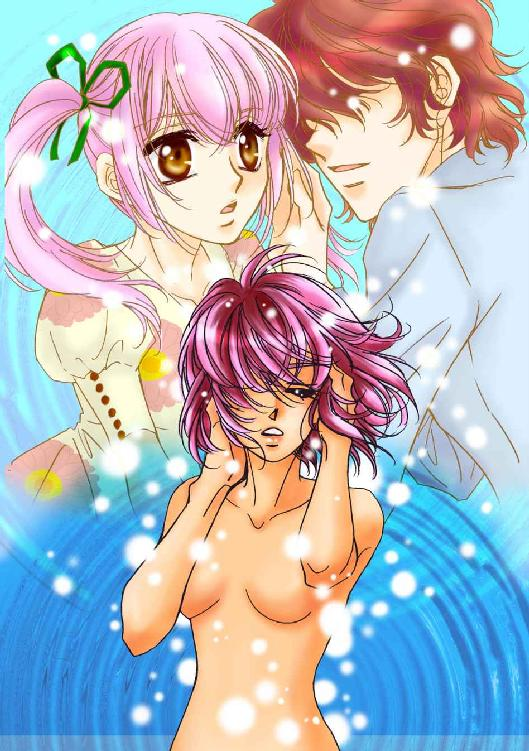
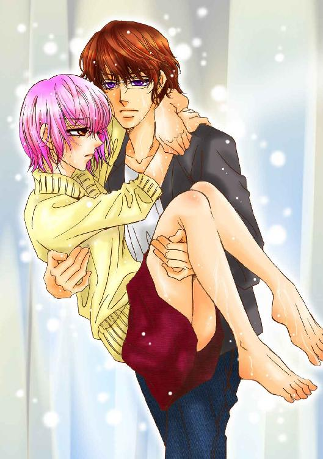

| ダビデの誘惑～美形モデルとの一夜の恋 (ラブリィキス文庫) | |
| 須藤安寿 & 風見零 | |
| (2015) | |
ダビデの誘惑
美形モデルとの一夜の恋
須藤安寿
風見零
本作品の全部または一部を無断で複製、転載、配信、送信したり、ホームページ上に転載することを禁止します。また、本作品の内容を無断で改変、改ざん等を行うことも禁止します。
本作品購入時にご承諾いただいた規約により、有償・無償にかかわらず本作品を第三者に譲渡することはできません。
本作品を示すサムネイルなどのイメージ画像は、再ダウンロード時に予告なく変更される場合があります。
本作品は縦書きでレイアウトされています。
また、ご覧になるリーディングシステムにより、表示の差が認められることがあります。
１ ボーン・コレクター
夢に見るその場所で、美和はくりかえし恋に落ちる。
誰にも夢の話をしたことはなかったけれど、美和はそこを〈博物館〉と、こっそり名付けていた。
......が、そこがどういう場所なのかは、実のところよくわからないままだ。
少なくとも美和が実際に行ったことのある博物館とは、あまり似ていない。
広間の中央に立って上げると、紺色の空を舞うドラゴンの絵が描かれたドーム型の高い天井が視界を占める。
そこが夢の世界の中心だった。
そのドームをまるくかこんでいる六個のシャンデリアがキラキラとまぶしい。
白と、黒と、ピンク。
三色の色違いの大理石がモザイク模様を描く広々としたフロアはいつもホコリひとつなく磨き上げられていた。描かれているのは、コンペイトウのようにいくつものとんがりを持つ星の模様だ。
部屋の作りだけを見まわせば、おとぎ話に出てくるヨーロッパのお城を思わせる広間だった。それでも美和がそこを〈お城〉ではなく〈博物館〉と呼んでいるのは――無数の骨格標本がならべられているせいだった。
窓を見たことは一度もないけれど、室内にはどこからか強い外光が射しこんでいるようだった。シャンデリアの光がちらちらと踊らせる淡い影とは別の、かっちりとしたエッジを持つ濃い影が、大理石のコンペイトウの上に奇妙な模様を描いている。
部屋の中央には巨大な恐竜の骨格標本がすえられて、シャンデリアに吠えかかるポーズをとらされている。
ティラノサウルス・レックスをかたどった標本。
形状を見るかぎりそう思えるけれど、実物大ではなく、その巨体をさらに数倍にも引きのばしたと思われるものだ。
そびえ立っている......というしかない威容だった。
いつも美和はその足元から、骨と骨のすきまに見える天井画のドラゴンを見上げている。
周囲には、もう少し小型の恐竜たちがひしめき合っていた。床の影のほとんどは、この恐竜たちのものだろう。
恐竜のほかにも標本は数え切れないくらいあった。
猛獣と、その獲物となる草食動物たち。
鳥類に魚類。
そして......有史以前からの進化をたどる人類も。
すべてが真っ白な骨だけになって飾られている。
大きなものはそれぞれに生きていたときの姿を再現するように躍動的なポーズで展示され、小さな生物の骨や、断片だけのものはガラスのフタがついたケースにきれいにならべられていた。
美和はその無数の骨格標本のあいだを、うろうろとさまよい続けている。
どれだけさまよっても、壁につきあたったことは一度もない。
同じ場所をただぐるぐると歩き回っているだけのようでもあった。
そうでなければ、このホールは無限のひろがりを持っているということになってしまう。どこまで行っても床のコンペイトウが途切れることはなかったし、ならべられた骨格標本が尽きることもないのだから。
しょせんは夢の中の光景だった。
そのホールのひろがりが、美和にとっての〈博物館〉のイメージの限界ということなのかもしれない。
それが、美和が子供のころから何度となくくりかえし見続けている、奇妙な夢の光景だった。
そのどこか、骨格標本の影に〈あのひと〉がいることを、美和はもう知っている。いつもその人を探してさまよっているのだとも思う。
室内には、その人の存在を強く意識させる、濃厚な気配が満ちていた。
でも......。
姿をはっきりと見たことは一度もなかった。
せいぜいぼんやりとかすんだ人影を見ることがあるくらいだ。
背の高い、男の人。
......いや、以前は〈男の子〉と言うべき存在だった。年月を経るごとにその人影や気配が大人びていくのを感じただけだ。
その気配を感じとるだけで、美和は胸の奥がじわりと熱をおびるのをおさえきれなかった。
『美和がおとなになったら、迎えに行くよ』
そうささやく声は、たびたび聞こえてくる。
単なる夢と片付けてしまうには生々しいほどの現実感を持ったささやき。
甘く心をとろかすような響きも感じられる。
おとなになったら......という言葉の向こう側にはエロティックな意図があるのだと、美和だってもう気づいていた。
いずれその人にめぐりあうのだろう。

そして恋に落ちるのだ。
まだ一度として体験したことのない官能の体験を、きっとそのときに味わうことになるのだろう。
恋人の抱擁。キス。そして......服を脱がされて体を重ねあわせ、セックスの快楽を教えられるのだ。
そう、美和は予感していた。
期待......と言ってもいい。
その夢を見た朝は、恋の予感に少しときめきながら目を覚ますのが常だった。
（あなたに恋をするには......私は、まだ子供ですか？）
最近は少しじれったく、そんな気持ちを抱く朝もあったけれど......。
「あーん、だめ。もう、ムリ」
思わず、そう声に出してしまっていた。
一枚ずつペラペラとめくってはもどり、まためくって......と、ながめていたプリントアウトの紙束を、ばさりとテーブルに投げ出す。
クリップで止めてさえいない紙っぺらが、開けっ放しの窓から吹き込んできた風にあおられて舞い上がりそうになる。あわててそれをおさえようとして、藤堂美和はそのままテーブルに突っ伏してしまった。
いつだって、大事なところで迷いが捨てられない。
心を決めきれない。
――そういう自分の優柔不断さに、本気で泣きたくなってくる。
こうして毎度毎度、課題に手こずるのはそのせいだ。
プリントアウトは提出期限の迫った課題の参考にしようとインターネットで手当たり次第にかき集めてきた画像だった。
昨日の夜遅くまで......というか、明け方近くまでかかって厳選に厳選にを重ね、半分以下にしぼりこんだのだが、まだ三十点以上ある。
すべてスカルホーン――つまり、角のある頭蓋骨の画像だ。
ヤギ、ヒツジ、レイヨウの仲間が、それぞれに数種類ずつ。どれも特徴のある美しい角を持つ動物たちのものだった。
わざわざプリントアウトしてきたのは、ずらりと並べてみたら比較しやすいだろうと思ったからだった。だが結局、全部並べるには食堂のテーブルひとつではたりないし、こうしてパラパラめくって見ていても迷うことに変わりはない。
（どれもこれもため息が出るほどステキなのに......どうしてピンとくるものがないんだろう）
寝不足になるほど資料とのにらめっこを続け、あれこれと試作してみては投げ出す繰り返し。
課題はちっとも進まない。
お部屋の壁にかざるなら、これがいい。
こっちはシルバーのアクセにしたらいいんじゃないかしら。ピアスか......それとも、ベルベットのリボンでチョーカーとか！
そんなことばかり思いついて、ちっとも課題に集中できなかった。
少なくとも、今、美和が欲しいのはステキなインテリアではなかったし、オシャレなアクセサリーでもない。
必要なのは課題を完成させてくれる具体的なイメージなのだ。
なのにそれが、ちっとも見えてこない。
「あーのーさあ、美和？ 頼むからごはんのときくらい、骨の画像に見とれてあえぎ声出すのやめてくれる？」
テーブルのむこうでカップラーメンをすすっていたクラスメイトの舘野香央理が、そう言って眉を寄せた。
入学式に上から下までキメキメのゴスロリコーデで現れて以来、男子学生はもちろん、講師の皆さまの視線まで釘付けにしているその可愛い顔で、香央理はまるっきり遠慮なしにズバズバ物を言う。
本日のお召し物だって、入学式に着ていたゴージャスなドレスに比べればかなり〈一般的な、現代人のよそおい〉に近しいと言えそうだが、それは単なる比較の問題だ。美和の極めて個人的な尺度では、とてもじゃないけれどこの場にふさわしいとは言えないシロモノだった。
そう......オタク気質の学生ばかりが群れ集っているとはいえ、ここ――東京ファンタスティックアート専門学校は、まぎれもなく現代日本の東京に存在する美術専門学校で、ロールプレイングゲーム世界の酒場ではなかったし、コンセプトカフェでもコスプレパーティの会場でもないのだ。
その奇抜なお姫様ファッションの美少女が、ごった返す食堂で長いスカートのすそも構わずイスの上にあぐらをかき、よりにもよって『スタミナもりもり！』とかなんとかギザギザ吹き出し付きのキャッチコピーに彩られたカップラーメンをがっついているのだから、もう目も当てられない。
「ああああああ、何もせず黙って座ってくれてりゃ天使なのに......」
「外見は天使でも、中身は小悪魔どころか大魔王だからな」
「あのキョーレツにニンニクが臭いそうな口にうがい薬を原液で流しこみたいです」
「タダでエロい太もも見物できるだけ役得だと思えってのか。生殺しだろうがよ......っ！」
「あれが三次元の限界だ、あきらめろ。俺たちみてーなザコいヲタが一個大隊で挑んでもかなうような相手じゃねえよ」
......などという男子学生たちのお嘆きも、いちいちごもっともだ。
せめて深いスリットからちらちらのぞき見えている足だけでもなんとかしてほしい。美和だってそう思う。男子学生ならなおさら目のやり場に困るに違いなかった。
言ってもムダだと、もうよくわかっているけれど。
「あのね、ただの骨じゃなくて、これは骨・格・標・本。インテリアとしても人気の、オシャレ雑貨なんだから。だ、第一ね、私、あ......あ、あ、〈あえぎごえ〉なんか......」
勝ち目なんかないとわかりきっているけれど、美和も精一杯の反論をせずにはいられなかった。
あえぎ声なんて単語を実際に口にしたのは、たぶん生まれて初めてのことだ。
本来の意味なんか知ったこっちゃないけれど、美和にとってはポルノ用語としか思えないきわどさだった。さらっと言い捨ててしまえればまだ良かったのだろうが、思わず盛大にどもった上に声は裏返り、発音も日本語を覚えたての外国人のようにヘンだった。
......その単語を、わざわざ強調しているようにしか聞こえない。
この食堂ではスマホのゲームに夢中になって奇声を上げている者も珍しくなかった。そんな中で音量をしぼりにしぼった美和の小声になんか誰も気づかないだろうけれど、それでもそんな言葉を自分が口にしたのだと考えるだけで心臓がバクバクしてきてしまう。
「美和のそういう初々しさって、惚れちゃうわー。もっとえげつないこと言わせてみたーい」
耳まで赤くなった美和を指さして、香央理はイスから転げ落ちそうな大笑いだった。
声をひそめようなどという発想はカケラもない。そのせいでいっしょにいる美和までがいやおうなしに周囲の冷ややかな視線にさらされるハメになっていた。
「ゴスロリの萌え萌え大魔王と暗黒ロリのボーン・コレクターが仲良しこよしって、どんな悪夢だよ......」
その視線のどこかから、うんざりした響きの低い声までが聞こえてくる。
暗黒ロリ――というのは、つまり美和のことだろう。
（ううう、また、ミョーなアダ名が増えてませんか......）
ちょっと前までは〈あのちっこいの〉呼ばわりで、大魔王（注／香央理のことだ）の使い魔くらいのあつかいだったことを考えれば、ちょっとしたレベルアップと言えるのかもしれない。
......が、そんなのちっともうれしくはなかった。
クラスで一番チビなのは、わざわざご指摘いただかなくてもちゃーんと自覚している。
人物を描くのが苦手だからと骨格標本ばかり描いていたせいで、ボーン・コレクターなどと呼ばれていることにも、その話がわけのわからない脚色をされた挙句、とんでもない猟奇趣味の持ち主だと思われていることにも、気づかないほど鈍感ではなかった。
入学して、約半年。
そういう立ち位置にも、さすがに馴染んできた。
（ええ、わかっておりますとも。香央理ちゃんと比べたら、そりゃぁ顔面中産階級、胸部貧困層の私なんか見劣りしまくりでございましょうよ）
歯止めのきかないファッションセンスやアイドル顔負けのビジュアルをひとまず横においても、香央理はＣＧクラスで――いや、校内でも最も注目されている学生のひとりなのだ。
香央理は人物......というか、いわゆる萌えキャラを描くのを得意としている。
それもそのはずで、何年も前から香央理はアニメやゲームのキャラクターを自分流にアレンジした絵を描いてインターネットの画像掲示板にアップロードしていて、すでに大勢のファンをつかんでいる〈絵師樣〉だった。
すぅっと迷いなく引かれたのびやかな線。
くすみのない明るい色でいろどられた可愛らしいキャラたち。
単に既存のキャラクターを模すのが上手いというだけではない。
笑った顔。
怒った顔。
ちょっとすねたり、悩んだり、悲しんだり......。
香央理は、そういうキャラクターの表情を、いかにもそのキャラクターらしくイキイキと描きわけることができるのだ。
だからだろう。
決めポーズの立ち絵であっても、まるで映画のワンシーンを思い出しているときのようにドキドキする。
そんな香央理の絵に、美和はひと目で惚れこんでしまった。
鈍い色合いを重ねて描く美和の絵とはまるで別世界だったけれど、香央理の絵が目標になった。
あんなふうに、ドラマチックな絵を描きたい！
そう思うようになったのだ。
画像掲示板でコメントのやりとりをするうちに、香央理のほうも美和の絵を気に入ってくれて親しくなった。当時、同じオンラインゲームに夢中になっていたことや、お互いにそのゲームに登場するキャラの絵を描いていたことも親しくなった理由のひとつだ。
画風がまったく違っていたことも幸いだったのかもしれない。どちらにとってもいい刺激になったし、変なライバル意識を持つことなく感想を言い合うこともできた。
それが――中学三年のとき。
知り合ったばかりのころは、美和はまさかその人気絵師様が同い年の中学生だなんて思ってもいなかった。
香央理は東京、美和は北海道......と、遠く離れた場所に住んでいて、実際に会うことはないままだったけれど、高校の三年間で美和にとってもっとも大切な友達は香央理だった。
高校三年になり、美和が進学について悩んでいるときに助言をくれたのも香央理だ。
「東京に出ておいでよ。出てきちゃえば、きっとなんとかなるって。美和のお母さんだって、好きな道に進みなさいって言ってくれてるんでしょう？ 将来ゲームの仕事したいなら、早いうちからこっちで人脈作ったほうが、絶対お得！」
そう香央理に勧められるまま、美和は思い切って上京することに決めた。
ようやく念願かなって香央理と実際に会うことができたのも、高校三年生の夏休み......この学校の入学説明会のときだ。
そして四月からは、同じＣＧクラスのクラスメイトとして授業を受けることになった。
香央理といっしょに学べることはとてもうれしかったけれど、美和にとっては少し意外でもあった。
正直言って香央理の実力ならもっとレベルの高い学校をいくらでも選べそうなものなのに......。
当然のように、入学してからの香央理はいつもクラスでトップの成績をおさめている。
いや、香央理の活躍は学校だけにとどまるものではない。
大手ＳＮＳの人気ゲームアプリのキャラクターデザインやイメージイラストをやって、そちらのほうでも高評価を受けているのだ。まだ一年生だというのに、すでにスカウトの話がひっきりなしに来ているという状態だった。
どこまで本気の発言かは不明ながら、本人曰く、
「まあ、ちょっとしたアルバイトみたいなもん？」
......という、軽い気持ちでやった仕事らしいが。
要するに、すぐにでもプロになれる実力の持ち主なのだ。
在学生にあるまじき発言ではあるけれど、美和にはどうして香央理がこんなパッとしない専門学校を選んで居座っているのか、さっぱりわからなかった。
「美和の課題、もうほとんど完成してるんでしょ？ そろそろ提出できそうとか言ってたじゃない。なんで今さらまた資料とにらめっこなんかしてんの。提出期限って来週じゃなかったっけ」
いかにもギトギトと脂っぽそうなラーメンのスープを最後の一滴まで惜しむようにすすって、香央理は美和の顔をのぞき込んだ。
「一応の形はできてるの。提出しろって言われればできなくもないかな......って、そういう状態。でもね、もうちょっと手を入れられそうな気がするっていうか、まだちょっと違和感があるっていうか......」
テーブルの上に散らばったプリントアウトをかき集めながら、美和はそうぼそぼそと言葉をつないだ。
香央理はいつものようにクラスで一番か二番という早さで課題を提出している。他のクラスメイトも順調に作品を仕上げて提出しているようだ。
残っているのは美和をはじめとする〈いつまでも作品から手を離せない一団〉と、そもそも課題を提出するつもりなどまるでなさそうな〈在籍してるだけの一団〉だけだ。
入学から半年を経て、そのあたりのメンバーもそろそろ顔ぶれが決まりつつあった。
課題のテーマは『古びた質感』。
美和の作品は、中世ヨーロッパを思わせる古い書物を模したものだった。
『天使と悪魔の骨格標本を手に入れた研究者がその観察記録を暗号で記した異端の書の、現存する最後の一ページ――というフレコミで売りに出されたニセモノの古文書』
......という混みいった設定を、勝手に考えている。
ＵＭＡやＵＦＯの目撃談をいかにもそれっぽく紹介するマニアックなオカルト本の、アンティーク版といったところだ。
課題を提出するときにそんな裏設定が必要になるわけではないのだが、そういう作りこみをしたほうが自分の作品に愛着が湧くし、作業もはかどる。
はかどるはずだ。
......と、美和は思う。
『その長々と妄想にふけっている時間を作業に当てろや！』
そうどやされたら、反論出来る自信はなかったけれど。
現実の世界にあるものをそのまま写しとるだけなら、わざわざ苦心して３Ｄ画像など作るよりデジカメを向けてシャッターを押すほうがよっぽど早い。
現実ではあり得ないものをあたかも現実のように作りこんで、見る者に別世界の雰囲気を味わわせることこそがＣＧの醍醐味であるはずなのだ（たぶん）。
いちいち作らずにいられない裏設定は、美和にとってその〈別世界の雰囲気〉を作り出すための必須のステップだった。
今回はレオナルド・ダ・ビンチのスケッチを参考に全体の構成を組み立てた。
保存状態の良くないくたびれた羊皮紙の質感や、年月を経て色のあせたインクの雰囲気は自分で見ても上手く表現できていると思う。
途中経過を見た担当の講師にも、
「なかなかいい感じだね。もともと藤堂さんはアンティークっぽい素材をアレンジして描くのが上手いから、今回の課題は水を得た魚というところかな？」
......そんな風に言ってもらえた。
アンティークの家具や宝飾品などを描くのは確かに好きだった。美和にとっては数少ない得意分野のひとつとも言える。
（これも、若菜おばさんのおかげ☆）
滅多にない講師の褒め言葉に有頂天になりながら、美和はそう感謝したい気持ちでいっぱいだった。
若菜おばさんはアンティーク雑貨のバイヤーという風変わりな仕事を持つ女性で、美和の母の古くからの友人だった。母とはまるで姉妹のように仲が良かったし、美和にとっても身近な人だ。
美和は小さなころからその若菜おばさんにアンティークの品々やその写真を見せてもらい、うんちくの数々を聞いて育った。絵を描くことをずっと応援してくれていたのも、母ではなくその若菜おばさんのほうだ。そういう後押しがなければ、東京の美術専門学校に進学したい――なんて話に、母が耳を傾けてくれることもなかったかもしれない。
今回の課題を描きはじめてからも、
「ああ、こういうとき若菜おばさんが近くにいればきっといいアドバイスくれただろうなあ」
そんな風に思うことはしばしばあった。
とは言え、若菜おばさんは仕事のために数年前にヨーロッパに移り住み、今はそうそう気軽に相談を持ちかけられる存在ではなくなってしまっている。
「いつまでも依存してないで自立しろってことよね......」
学校の課題は毎回テーマが決められているから、必ずしも好きなものを描けるわけではなかった。そんなところに降って湧いたように〈古びた質感〉という、アンティークを描くのにまたとない機会が訪れたのだ。
力が入るのも当然のことだ。
数少ない得意分野の課題だからこそ、いいものを仕上げたい。
美和の中で目指すべき完成度がどんどん上がって、これまでの課題ではありえないくらい慎重になっていた。
ほんのささいな違和感も見逃さず、完璧な〈世界〉を作り上げたい。
そう思えば資料を探しまわることも苦ではなかった。新しい資料を見つけるたびに妄想に拍車がかかってさえいたのだ。
中世ヨーロッパの書物なら、きっと文章はラテン語で記されているものだろう。とはいえ、当然美和にはラテン語の知識などないから、それらしい記号をならべて走り書きの暗号っぽくしてみた。苦しまぎれの悪あがきではあったけれど、それが案外いい効果になって、ニセモノの古文書らしいうさんくささが演出できた気がする。
鳥の骨格と人間の骨格を組み合わせて描いた天使も、もう仕上がっている。
この世ならぬ、美しい存在。
――美和がそうイメージした通りだ。
はばたく姿を再現するために無理矢理ひろげられた羽根の骨格。それに比べて、体はちょっとアンバランスなくらいに小さくして、胎児のように体をまるめたポーズを保っている。骨のひとつひとつを、少しやり過ぎかな......と、思うくらいにほっそりとたよりなげにして、淡いピンクと水色の光が揺れるオパールのテクスチャを貼りこんだのも良かったのだろう。
美和にしては珍しく、ほとんど迷うこともなく作業を進めることができた。
（この調子なら、今回の課題はスピード提出できちゃうかも！）
天使のパーツを作っている最中は、自分でもそう思っていたくらいだ。
が、トントン拍子に進んだのはそこまでだった。
悪魔のほうがうまくいかない。
どうにも迫力不足なのだ。
形だけはそこそこに取りつくろったように見えて、中身がまるっきり空っぽ。そんな印象だった。
その存在にあるべき奥行きが、何も表現できていないという気がする。
グロテスクな外見は、いいと思う。
ゴツゴツと隆起を際立たせた骨の形状も。
天使に使ったテクスチャとは対照的に、濃い灰色の、ざらついた石のような質感にしたのも悪くないように思える。
強大な力を持つ、邪悪な存在......。
それでも、ただ恐ろしげなだけでなく、どこかに見る者を惹きつける魅力のようなものがなければいけないはずだ。
そうでなければ、わざわざこうして天使と並べる意味がない。
「この間はバフォメットで行くって言ってなかったっけ？ あれはヤギの頭でしょ？ それが気に入らないってこと？」
未練がましくプリントアウトをぺらぺらめくり続けている美和を見て、香央理がそう声をかけてきた。
「ヤギは......いいと思うの。ねじれた角とか、かっこいいし、悪魔っぽいし」
「うまく行かないの？ 美和はそういうの、得意そうなのに」
「ええと、一応ね、できたことはできたの。でもなんか......いかにもただの悪魔だなあ、って気がして」
「......」
一瞬、香央理の表情が、きょとん......と、かたまった。
それからちょっと苦笑を浮かべて、
「悪魔なんだから、それでいいんじゃないの？」
と、ため息混じりにつぶやく。
「それはそうなんだけど......」
そう単純な話ではない。
ただその単純でない部分を、スパッと言い表せる言葉が見つからなかった。
「――どうせなら悪魔ならではの魅力が欲しいっていうか......。えーと、ピカレスクっていうの？ いや、それも違うなあ......なんて言えばいいんだろう。あぁーん、わかんない」
喉の奥にひっかかってなかなか出てこない言葉と同じように、悪魔のイメージもよどみの中にぼんやりとかすんでしまっている。
天使は悪魔に恋をしているのだ......と、美和には思える。
禁忌ともいえる恋をして、悪魔の穢れた手に触れられてセックスの味を知り、その清らかな魂とは不似合いな快楽に堕ちていく。
そんな悲壮な恋だ。
だから......。
罪を犯して堕天使になりつつあった天使が、まだ美しい姿をとどめたまま骨になった――そういう刹那を切り取ったドラマチックな雰囲気が欲しいのだ。
それは神の慈悲かもしれないし、書物を記した研究者の単なる妄想、あるいは奇跡をあざとく再現した創作かもしれない。
......と、いうような背景世界が。
（途中までは上手くいってるはずなんだけどな）
文字通り自画自賛......と、笑われそうだが、美和にはそう思えた。
それなのに悪魔の骨格標本が、雰囲気をぶち壊しにしている。
そのドラマの中で何の息遣いもなく、単なる類型的な悪魔の骨格標本でしかないものになってしまっている。
それがたまらなく歯がゆい。
（悪魔は何も思ってなくて、ただ天使をおとしめたいだけかもしれない。狩りの獲物みたいに思ってて、天使の気持ちなんかちっともわかってないとか。それはそれで、ドラマかな。冷酷な犯罪者みたいな感じ？ でも、そんなの......）
......全然、すてきじゃない。
いや、単に好みに合う合わないという話ではない。
天使と悪魔のあいだにあるべき絆を描けなかったら、天使はただちょっと魔が差してふらふらと悪魔の誘いに乗り、セックスの快楽に溺れただけの存在になってしまうような気がするのだ。そして美和が描きたいのはそういうビッチな天使ではない。断じて違うのだ。
やっぱり美和は、恋のドラマが欲しかった。
セックスもするかもしれないけど、重要なのはそこではなくて純愛っぽく互いに思い焦がれる気持ちだ。
天使が堕ちていくことを覚悟して恋をするように、悪魔もまた痛みをこらえ、何かを捨てて天使を得ようとする。
そのほうが、ずっとロマンチックだ。
とは言え、その〈何か〉が、美和には見えてこなかった。
なぜ悪魔が天使を得たいと思うのかも、謎だ。
単なる性の欲望？
蹂躙したい......という衝動が、悪魔を突き動かす原動力なのかもしれない。
そういう答えを思いつくことはさほど難しくはなかった。確かにそういう身勝手さが悪魔らしいとも思う。
でもそんな通り一遍の答えでは納得できなかった。
天使と悪魔の絆を表すことのできるもう一歩踏み込んだ......そして明確に描き出すことのできる具体的な事象が欲しい。
で、提出期限の迫った今になって、わらにもすがる思いで資料を探しまわっている......と、いうわけだ。
「天使の気持ちはなんとなくわかる気がするの。許されない恋に苦しんで、それでも一途に思い続けてる感じ？ 抑圧されるほど燃え上がる恋みたいな。でもね、悪魔の気持ちはどんなだろうって考えると、なんかこう、脳ミソがドロドロっととけて耳の穴から出てきちゃいそうっていうか......」
「うっわ、頭蓋骨ながめながらそういう猟奇的なたとえ話するの、めっちゃやめてほしいわ......」
香央理の眉間のシワが、さらに深くなった。
「悪魔の気持ちなら、目の前にいる大魔王様に聞くのが一番だと思うぜ？」
背後にいた男子が、突然美和と香央理の話に割り込んでそう茶化したのはそのときだった。
途端に、周囲にいたクラスメイトたち――今の今までまるっきり気づいていなかったが、男子ばかりだ――までが、どっと笑いを漏らす。
「え、え......えええっ？」
「あーもう、うっさいなぁ！ 私と美和のおとめちっくラブラブタイムをジャマしないでくれる？ だいたいね、誰が大魔王サマよ、こんな天使のよーに清らかな女子をつかまえて、失礼千万だっての！」
すかさず、香央理は男子学生たちにそうやり返していた。
まさか聞き耳を立てている者がいるなどとは思いもせず、うろたえるばかりの美和に比べ、香央理はこういうときの反撃も堂に入ったものだ。
「もちょっと静かなトコ行こう？」
ようやく周囲の男子たちを黙らせて、香央理は美和に向き直った。
美和がいじり続けているプリントアウトの束をさっと取り上げたかと思うと立ち上がり、食べ終わったラーメンのカップと一緒にそれをゴミ箱に投げ込んでしまう。
ぼうぜんする美和をふりかえりもせずに食堂の出口へと一直線だ。
「え、あ......香央理ちゃん？ ち......ちょっと待って！」
あわてて美和も後を追った。
資料を見るのに夢中になっていたから、昼食用に買ったサンドイッチはまだ包みを開けてさえいない。
が、とりあえずそれをひっつかんで香央理のあとを追いかける。
香央理と美和の凸凹コンビをからかうことこそ学生生活の張り合いくらいだ、くらいに思っている男子学生の群れの中に、ひとりで置き去りにされるなんてまっぴらごめんだ。
「要するにね、美和は、入れこみすぎ」
香央理は小走りに追いかけてくる美和にそう言って、午後の授業で使うことになっている教室に入っていった。そこにもすでに数人の学生の姿があったが、食堂とは比較にならないくらいの静かさだ。
窓際の席に座って、美和もようやくサンドイッチのパックを開ける。
「――美和は別に手が遅いわけでもないのに、課題のたんびにそうやって細かいトコでうだうだ悩んじゃうからいつも提出が遅くなるんじゃないかなあ。もっと要領よくやらなきゃ。そうすれば遊ぶ時間だって増えるよ？ ネットの掲示板にアップする絵だってもっと描けるし、バイトだって」
「う......うん」
美和はサンドイッチをかじりながら、小さくうなずいた。
高校生のころは毎週のように新しい絵をアップしていた画像掲示板だが、この学校に進学して以来、アップしているのは提出の終わった課題ばかりだ。
「――あのね、このあいだ、美和にもまた仕事頼めないかって聞かれたの。また新しいアプリ作るから人を集めたいんだって。今度はダークファンタジーでね、結構力入ってるみたい。自キャラは前回と同じく萌え系メインなんだけど、そうじゃないラインナップも加えて、少し重厚な雰囲気にしたいって言ってた。美和の得意そうな世界観だと思うんだ。敵モンスターとかアイテムのデザインもできて、ていねいに仕事してくれる人がいいって。そのときに美和ちゃんは？ って名前が出て......。掲示板にアップした画像とか、ちゃんとチェックしてくれてるみたいよ？」
「え、ホントに？」
美和は思わず息を飲んだ。
香央理がキャラクターデザインを手がけて注目を浴びることになったアプリには、実は美和も少しばかり関わっていた。
宣伝素材にもでかでかと名前が記された香央理とは違い、それこそ掛け値なしに〈アルバイト〉と言うべきものだが、インセンティブ用アイテムのデザインがいくつか採用され、実際に配信もされているのだ。
将来はゲーム業界で仕事をしたいと考えている美和にとっては、大きなチャンスだった。
「ホントホント。だから、課題はサクッと終わらせて、今度ごあいさつしに行こう？ 私もどうせバイトするなら美和と一緒に......」
しゃべりながら窓の外に目をやって、香央理が不意に言葉を詰まらせた。
「......どしたの？」
「ん、ホラホラ、橋本っちゃんがいるから」
外を見つめて、香央理がぼそりと呟いた。
美和たちのいる教室はビルの三階にあった。ちょうど学校の正面玄関を見下ろす位置だ。その正面玄関に来客を見送るために出てきたらしい橋本講師の姿があった。
確かに授業数の少ない橋本はレアキャラのようなものだが、今日は午後にイラストレーションクラスで授業があるはずだった。校内で見かけたからといってそれほど驚くような話ではないと思うのだが、香央理はさも重大事のように橋本の動きを見守っている。
「あの人、橋本っちゃんがこの前ナンパしてたモデルさんかも」
さらに香央理はぶつぶつとそんなことをつぶやいてもいる。
「モデルさん......？ っていうか、それナンパって言わないし」
状況がよく飲み込めないまま、美和も香央理と一緒に身を乗り出した。
その瞬間、
「あ......っ」
思わずそう声が出た。
香央理の視線の先にいる人物に目をやったときに、どきん、と鼓動が高まるのを感じてもいた。
橋本と一緒にいる背の高い青年。
エキゾチックな印象の、彫りの深い顔立ち。美和の視線はその顔に釘付けになっていた。
見覚えのある顔ではない。
ないはずだ。
それなのに、その人をずっと以前から知っているのだという気がした。
『美和がおとなになったら、迎えに行くよ』
そうささやく声を確かに聞いたのだという気もしてきた。
夢の中で聞くよりも、もっと間近く......まるで耳もとに口を寄せた内緒話のような距離で発せられた低いささやき。声ばかりか、すこし湿り気を帯びたリップノイズまでが耳たぶをくすぐって美和の中に流れこんできたようだった。
（私を迎えに来てくれたの？）
幼いころから繰り返し見続けている奇妙な夢の光景......。
それが、一瞬、現実の光景に重なって見えたように錯覚してさえいた。
（でも......あなたは、誰？）
めまいがして、足元がふらついた。
見下ろしている学生がいることに気づいたからか、青年がこちらを見上げた。三階の教室から見下ろしている美和と香央理を見つけて、メガネのレンズの向こうでまぶしそうに目を細めるのがわかる。
微笑んでいるのか、それとも、ぶしつけな視線に困惑しているのか......そのどちらともとれる表情だ。
視線が濃密に絡んでいる。
そう気づいたとき、美和は思わずその場にしゃがみこんで顔を隠してしまった。
「何やってんの、美和」
香央理がそう声をかける。
「え......ええと、その......ジロジロ見るのは失礼かなって......」
強い光を帯びたその視線にじっと見つめられて、こわくなりましたとはさすがに言い出せない。あたりさわりのなさそうな言葉で言いつくろった。
だがやはり気になって、またそろそろと窓から顔をのぞかせずにはいられない。
青年はもうこちらを見上げてはいなかった。橋本と会話を交わしていたようだが、それもすぐに終わり、会釈をして歩き始める。
ようやく美和は小さくため息をついた。
（モデルさん......？ あんまりそれっぽく見えないけど......）
ふとそう感じた。
（――姿勢が良くないから、かな）
その後ろ姿を見つめて、美和は違和感の理由に気づいた。
青年は背が高かったし、体格も良かった。
でもモデルっぽくは見えないし、スポーツマンというのとも少し違う。
目立たないように背を丸めていることが習慣づいてしまったかのようなネコ背が、せっかくの長身をだいなしにしているという印象がある。どこか自信なさげな気配さえ漂っているのだ。
背負いきれないプレッシャーに悲鳴を上げている脊椎のゆがみや、緊張感を失って力なくひらいた肩甲骨が透けて見えるようだった。
実際の美醜以前に、容姿を武器にする生き方そのものに無縁そうな人物に見える。
「......ね、美和、今週末の特別講座、一緒に出ない？」
駅の方へ歩いて行く青年の後ろ姿をじっと見送っていた香央理が、くるりと美和のほうに向き直り、唐突にそう持ちかけてきた。
「は？」
「きっとあの人がモデルで呼ばれているんだと思う！ 間違いないわ！ ね、美和も一緒に出よう？ っていうか、お願いだから一緒に来て？ 来てくれるよね？ ああ、アリガトー。持つべきものはやっぱり友達よね。それに......橋本っちゃんってホントいい先生だなあ。恩師以上だと思うわ。超恩師って感じ。私たちのやる気を引き出すためにあーんなイケメンをくどき落とすなんて」
美和の返事を待ちもせず、香央理は早口でそうまくし立て始めた。
ありがとうありがとう......と、しつこく（しかもとても安っぽく）繰り返しているのは、感謝ではなく事実上の拒否権停止の意思表示と見て、まず違いない。
前後関係もめちゃくちゃに思い出したことをつぎつぎにならべていくから、話はちっとも要領を得ないのだが、とりあえず話を総合すると、香央理は先週もあの青年が橋本と一緒にいるところを見かけたらしい。どんな用事があったのかはわからないが、先週あの青年が学校を訪ねてきたときに橋本と出くわし、モデルをやらないかと詰め寄られることになっていた......というのだ。
その彼が再びこの学校を訪ねてきて橋本と話をしているのだから、これはきっと本決まりに違いない。あれは学生（特に女子）にイマイチ人気のない講座を盛り上げるために橋本が用意したエサだ。
今週末の特別講座ではあのイケメンを描くことになるのだ！
......と、いうのが大魔王改め名探偵・香央理の推測だ。
推理というにはあまりに大胆で、しかも何の裏付けもない。どちらかといえば〈当てずっぽう〉と呼ぶべきものだったが。
「で、でもあの講座は......」
美和は逃げ腰にならずにはいられなかった。
橋本はこの学校の看板とも言える講師だった。本来の肩書は有名美術大学の助教授で、ここでは週に三コマほどの授業を担当しているに過ぎないが、入学案内のパンフレットではもっとも大きく紹介されていた。
アニメやゲーム、コミックなどに特化した教育を行っているこの学校では、講師もそうした業界の関係者が多いのだが、その中にあって橋本はお堅い美術畑から呼ばれた芸術家肌の講師だった。
授業内容はデッサンがメインで、パソコンは一切使わない。
デフォルメされた架空世界を描くにも、まず基礎となるのは現実にあるもののデッサン――というのが橋本の持論らしい。
橋本は授業以外でもよく学生たちの相談に乗っているというし、特別講座も今回が初めてではなかった。
熱心な教育者なのだろう。
......が、橋本の熱意とは裏腹に、特別講座はあまり人気があるとは言えなかった。
特に美和や香央理の在籍するＣＧクラスでは、出席者はほとんどいない。作品といえばペンタブを使って描くか３Ｄで作るもので、デッサンや油絵のような古典的な絵画の技法とはあまり縁がないという学生が多いからだ。
何を隠そう、美和もそのひとりだった。
（それに今週末の特別講座って、確か、ヌード......）
デッサン以上に、美和にとってそれは果てしなく高いハードルだった。
ただでさえ人物を描くのが苦手なのに、一糸まとわぬ男性モデルを直視して（いや、女性のモデルもいるのかもしれないが）何時間もデッサンを続けるなんて、考えただけでも悲鳴を上げそうだ。
しかも今回の特別講座は一日だけのものではない。
週末の連休を利用して、午前中だけとはいえ三日連続でみっちりしごかれることになるわけだ。
採点のきびしさでは他の講師とはランクが違う――と、定評のある橋本に。
「ムリムリムリムリ！ 絶対ムリだって！ ほら、それに私、まだ課題が終わってないし、この三連休でなんとかしようと......」
「だってヤギの白骨見ててもイメージわかないんでしょ？ 気分を変えたらいいアイデア出てくるかもしれないじゃない。ねえ、美和もあの人見たでしょう？ っていうか、がっつり見とれてたよね？ 彼、脱いだらきっとダビデ像よ！ 服を着てたって、この私の目はごまかせないわ！ シックスパック間違いなし！ あんなカッコいいモデルさん描けるチャンスなんて、この特別講座逃したら二度とないかもしれないわよ！」
香央理はよほどあのモデルが気になるのだろう。
（ど、どれだけ筋肉に飢えてるの、香央理ちゃん......）
ふだんは可愛らしい女の子ばかり描いているくせに、香央理の筋肉へのこだわりはちょっと異常なくらいだ。
（確かに、いかにも香央理ちゃん好みのイケメンかな。ダビデ像は......ちょっと言い過ぎだと思うけど）
美和だって（少なくともただ見るだけなら）イケメンは決してキライじゃない。いや、キライじゃないと思わせるからこそイケメンなのだ。
そしてたぶんさっき見下ろしたあの青年の顔は、かなり好みだったのだろうとも思う。私を迎えに来たのかも......なんて、改めて考えると超こっ恥ずかしい気持ちを抱いたのも、あのきれいな顔立ちに惹かれたせいかもしれない。
（だからって、ノリ気にはなれないけど......）
そういう外見の美醜――要するに面の皮一枚の差だ――に、一喜一憂する気持ちそのものが、美和にとっては捨て去りたくてたまらない業のようなものに感じられている。
理由は、それだけではなかった。
橋本講師の特別講座は確かに有意義だろう。
デッサンはアカデミックな芸術家にとってだけ必要なものではない。流行の移り変わりの激しいサブカルチャーのジャンルで仕事をつかもうと思うなら、結局のところ武器になるのは盤石な基礎にほかならない。
講義のたびにそうしつこいほどに繰り返している橋本の言葉を疑うつもりもなかった。
だが、付け焼き刃でヌードデッサンの勉強をしたことが即座に今回の課題に役立ってくれるわけではない。
......というのも、真理だと思うのだ。
そう、将来も大事だが、差し迫った課題の提出期限だって、決して看過することは許されない重要事項だ。
第一、悪魔に天使を惹きつける魅力が欲しいと言ったのは、美貌の持ち主だとか肉体美だとか、そういうことではないのだ。そもそも美和の絵のモチーフは骨格標本なのだから、シックスパックかどうかなんてまったく関係がない。
美貌も肉体美も、すべてをはぎ取ったあとに残る〈モノ〉が問題なのだ。
骨は、単なる残骸ではなくその象徴なのだ。
（えーと、つまりね、私が描きたいのは、もっと根源的な魅力っていうか永遠に消えない奇跡の証っていうか......）
と、言いたい気持ちでいっぱいだが、香央理のマシンガントークに圧倒されてそれもままならない。
「あんな悪魔なら、天使だってメロメロになること間違いなしよ！ スタイルいいし、いい筋肉ついてそうだし。かっさばいて中を見るってわけにはいかないだろうけど、骨だってきっとそんじょそこらの草食系オタク男子とはちがうわよ！ 骨密度とか、輝きとか、反り具合とか？ 骨フェチの萌えポイントがどこなのか、私にはちっともわからないけど」
「『いかないだろうけど』って、ちょっとくらいは可能性あるみたいな言い方しないでよ......。それに私、べつにイケメンをかっさばいて骨を眺めたいとか、そういう物騒な嗜好はないからね」
ふだん美和のことを悪趣味だの猟奇的だのなんだのと言っているけれど、香央理のこういう発言のほうがよっぽどカゲキだ。
「美和の言う〈迫力ある悪魔〉って、ああいう男性的なセックスアピールにあふれてるってことじゃないの？ 見てるだけで体がうずいちゃいそうとか、ついふらふらーっとＨしたくなっちゃうとか、そんな感じ。うん、そうよ。きっとそうだと思う！ やっぱり男は筋肉よ。あの筋肉を支えてこそ骨にも価値があるってものよ！ 美和だって、なにもヤギの白骨じゃなきゃ欲情しないわけじゃないでしょ？ だったら現実の男を見たほうがずっと参考になるはずよ！」
基本的に、美和の反論など耳に入ってなさそうだ。
興奮しているせいで、たたみかける香央理の声は次第に教室中に響き渡るほどになっていた。
（お願い......うずくとか欲情するとかとかセックスアピールとか、そんな言葉、大きな声で言わないで......）
その興奮ぶりに涙目＆さらなる逃げ腰になる美和とは対照的に、集まりはじめたクラスメイトたち――今度は主に女子だ――は、香央理のもたらした情報に入れ食い状態だ。
「ダビデ像って何？」
「イケメンはどこよ？」
「うずいちゃったって誰が？」
「特別講座って、週末の？」
「ええーっ？ 橋本っちゃんの講座って、そんな美味しい話だったの？」
矢継ぎ早に繰り出される質問に、さすがの香央理も押され気味だった。
香央理ににらまれるとすごすご引き下がる男子たちとは違い、イケメンモデルのセックスアピールなどという美味しいエサをちらつかされた女子はまさに肉食獣。一歩も退かない勢いだ。
（み......みんな、たくましすぎ......）
美和はあっけにとられるばかりで言葉をさしはさむ余裕さえ見つけ出せない。
クラスメイトの女子が押し合いへし合いするどまんなかにいるというのに、もはや話の輪から押し出されたも同然の状態だった。
「ダメだったら、そんなに大勢で押しかけたら、参加者が抽選になっちゃう！ こっそりぬけがけしてイケメンモデルの筋肉を堪能するつもりだったのにぃぃぃ」
そう叫んでいる香央理を横目に、出てくるのはため息ばかりだ。
授業が始まってから、美和はふともう一度、窓の外に目をやった。
もうあの青年の姿はどこにも見えないのに、残り香のような気配がまだそこにあるような気がした。
（どうしてかな。あの夢に出てくる人みたいだった。顔も知らないのに、〈あのひと〉だ......ってわかった）
そう確信させる何かがあったのだと思う。外見ではなく、雰囲気とか存在感とか、そういうものが似ていたのだ。
頰を、ふわり......と、撫でられたような感触。
夢の中では姿を見ることさえままならなかったのに、今は艶かしい手応えを感じてさえいる。
（ただ素敵な人だったからってだけかな。あんな人が迎えに来てくれればいいって、そう思ったから......？）
しっかりと目を覚ましているはずだし、ちゃんと講師の指示を聞いてパソコンを操作してもいる。
それなのに、意識の半分がふわふわと夢の中をさまよっているような気分だった。
ひんやりと冷たい大理石の床をはだしのまま踏んでいるような感触。
教室の光景や目の前のモニターの画像に重なって、繰り返し見るあの奇妙な夢が美和の視界にちらついた。
いくつもの骨格標本がならぶ、あの〈博物館〉の光景だ。
耳が痛くなるほどの静寂が支配する、死に絶えた動物たちの世界。
――それはたぶん、一般的な尺度で言えば不気味なシチュエーションなのだろう。
が、美和にとってそれは決して〈悪夢〉ではなかった。
とりつかれたように骨ばかりを描き続けている美和の絵の、原風景とも言うべきもの。
恋に落ちるシチュエーションなのだ。
ところせましと置かれた骨格標本のあいだをうろうろと歩き回って、美和は誰かを探している。
もうじき〈あのひと〉が見つけてくれる。
夢の中でもそう予感していた。
ずっと以前は迷子になって優しいお兄ちゃんが助けてくれるのを待つ心地だった。だが次第にそれは王子様を待つような気持ちになり、やがて淡い恋心へと形を変えていった。
そうして美和の心地が変化するたびに、〈あのひと〉は成長し、大人になっていく。
『美和がおとなになったら、迎えに行くよ』
耳の間近でささかれたその言葉に、甘ずっぱいふるえを覚えるようになり......。
やがて、くちびるをただ触れ合わすだけのキスや、ぎゅっと抱きしめられる幸福感に満ちた息苦しさを待ちわびるように想像するようになった。
そして今は、その期待はもう少しばかりみだらなものになっている。
あのひとの胸に頰を押し当てたら、どんな感触がするものだろう。
髪をなでられるとき、私はどんな気持ちになっている......？
その指先が頰をすべって流れ落ちるように首筋を這い、私の体に触れるときは......？
つい、そんな想像をしてしまうのだ。
欲望を募らせたあのひとの指先。その指先で、私が自分で触れることもためらうような場所を探られたら......？
（ううう、見当もつかないけど、きっとあんなことやこんなことが起こっちゃうんだろうなぁ）
想像するだけで赤面してしまいそうだった。
まだそんな経験は美和にはない。
......というか、そういう体験につながるきっかけさえ皆無という、かなり切ない状況だった。
でも、美和だってもう十八歳だ。
恋愛について、男女間のあれこれについて全く無知ということもなかった。情報源は主にコミックとネットで、まごうことなき耳年増だが、それでもそれなりに期待だってしているし、その期待は夢にもしっかりと反映されてしまうのだ。
夢の中で、美和はいつまでも小さな子供の姿をしているのに......。
五歳か、六歳――。
夢とよく似た体験を実際にしたのは、それくらいの年齢のころだ。
同じ夢を繰り返し見るようになったのは、そのときのことが忘れられないからなのだろう。
美和の母が経営する美容外科クリニックの待合室。その片隅に置かれた人間の骨格標本の足元で、美和は〈あのひと〉に恐竜の図鑑を見せてもらった。
そのときはまだ、美和は骨格標本に特別な思い入れは持っていなかった。おそろしげな恐竜の、しかも骨格の図解ばかりがならんでいる図鑑のページが少しこわいとも思っていた。
『こわくなんかないよ。骨はね、心臓より永く残ることができるものなんだ。だから大昔に絶滅した恐竜のことがわかるんだよ。何百万年も前に地球に恐竜がいたってことも、どんな姿をしていたかも。何百万年だよ？ それってもう、永遠って言ってもいい時間だよ。そう考えれば、すごくロマンチックだろ？』
そう教えてくれた声がふっと耳の奥によみがえる。
図鑑を見せてくれた男の子がどこの誰で、自分とどういうつながりを持つ人物なのかはわからなかった。美和には親戚らしい親戚はいなかったし、近所の住人にもその男の子だろうと思えるような人はいない。
たぶん――小学校高学年か中学生くらいの男の子だったのだろう。うすぼんやりと記憶している印象から、そう推測できるだけだ。
そのときに見た恐竜のことはよく覚えている。
ティラノサウルス・レックス。
トリケラトプス。
ヴェロキラプトル。
そういう名前を覚えたのはあのときだ。
男の子のお気に入りだったという恐竜たちの名前。
その男の子が着ていたセーターの編みこみ模様の柄だって覚えていた。
さしのべられた手に貼りつけらていた、少しヨレた絆創膏のことも。
同じペッボトルからわけあって飲んだチェリー味の炭酸ドリンクの味だって、はっきりと思い出すことができる。
......それなのに、その男の子の名前は覚えていなかった。
顔立ちさえ暗く影が落ちたようにあいまいにかすんで、記憶のどこかにうずもれてしまっている。
（お母さんが病院に行くときに、『まだ留守番はムリだからいっしょに連れて行くわ』って年齢じゃないよね。だとしたら......やっぱりあの子が患者さんだったのかな）
そう推測するのがせいぜいだった。
そもそも美和は、母のクリニックには数えるほどしか足を踏み入れたことはなかった。自宅と同じ敷地の中にあっても、美和にとってはずっと別世界のようなものだったのだ。
顔や、体の目立つ場所に傷のある患者さんも少なくない。
容姿に強いコンプレックスを抱いている患者さんもいる。
悪気の有無の問題ではなく、子供の無遠慮な視線はそういう患者さんを傷つけることになりかねない。
――母のそういう気づかいが、美和をその場所から遠ざけていたのだろうと思う。
あのときどうして自分が母のクリニックにいたのかも、美和はまったく覚えていなかった。
『美和がおとなになったら、迎えに行くよ』
そうささやく声だけが、あの男の子そのものの記憶だ。
夢の中ではいつも、その声の主はぼんやりした影のような漠然とした存在に過ぎなかったのに、今は香央理いわくのダビデ像の青年に取って代わっている。
確かな実体を持った――男性の姿。
そのことが美和は少し苦しかった。
触れられたら、どんなだろう？
抱きしめられたり、キスされたり......？
（そして、私のほうからその体に触れたら......？）
ほんの一瞬......あのダビデ像の青年と自分とが、はだかで抱き合う姿が脳裏に浮かんだ。
まるで鏡に映った姿か、あるいはドラマや映画でも見るときのような、第三者の視点ではあったけれど、たくましい胸板とそれに続くシックスパックの腹筋にしなだれかかってとろけそうな表情をしているのは、まぎれもなく美和本人だった。
イメージが思い浮かんだのはほんの一瞬のことだったからポーズまでを仔細に観察できたわけではないけれど、美和の手はけしからぬ場所に潜り込んでダビデの抱く性欲の度合いを確認しようとしていたようにも思える。
その、あまりにも生々しい映像が頭の中にひらめくと同時に、美和は、かぁぁぁっと顔が熱くなるのを感じた。
（ば......ばかばかばか......っ！ 私ってばなに考えてんの!?）
どこの誰とも知らない、しかも実在の人物を相手にこんな妄想をしている自分が、救いようがないほどいやらしくて恥ずかしい存在だと思えてくる。
アニメの登場人物――あくまでも架空の存在を相手に、自分がヒロインになりきったラブストーリーを妄想して、愛してるとか、君の瞳に乾杯とか、僕のために味噌汁を作ってくれとか言われちゃってるシーンを思い描いているほうが、失礼がないだけまだマシだ。
いっそ骨格標本と抱き合う妄想でもしているほうが、うずいちゃったり欲情しちゃったりの場面を思い浮かべても、よほど心穏やかでいられそうだという気もする。
......いや、相手が誰であろうと何であろうと、そんな妄想をしている時点で五十歩百歩かもしれないけれど。
作業中のウィンドウの裏側でこっそりログインしてあったＳＮＳに新しいメッセージの着信があったことを知らせる通知が出たのはそのときだった。
『橋本っちゃんにメールを送信完了。特別講座、美和の分も申し込んじゃった。受講料は私が払うから安心してね。きっと創作意欲湧っき湧きですｙｏ！ 三日間、じっくりダビデの肉体（キャッ☆）を堪能しようね』
メッセージの送信者は香央理だった。
ごていねいにも、バフォメットの頭部とダビデ像の体とを合成した画像までが添付されていた。
ただ四角くトリミングして貼り付けただけの雑な合成で、課題に提出すれば一発で落第点をもらいそうなシロモノだ。
だが、香央理は授業が始まってわずか数分で（しかも特別講座の申し込みメールを送ったあとに）講師の目を盗んで作ったとしか考えられない。
信じられない早ワザだった。
香央理の丸っこい文字で『これで課題もバッチリ！』とかなんとか書き込みがあるのは、まあいい。だがオールヌードのダビデ像の股間部分を星印で隠しているのはどういう趣向だろう。ピンクチラシかなにかのようで、かえっていやらしいのではないか。
これを香央理の茶目っ気と考えるべきか、それともあれこれ妄想していたのを見透かされていたのかと、美和は真剣に悩んでしまった。
『ごめん、今回はパスさせて。課題の提出が間に合わないと困るし、私、ミケランジェロは苦手だから』
そう返信メッセージを打ち込んで、美和は手を止めた。
ミケランジェロは苦手。
たった今、自分で打ち込んだその文字に、責められているような気がした。
ダビデ像と書かずに、無意識のうちに作者のミケランジェロの名を出したことに、何か重大な意味があるのではないか。美和自身の中に黒々と渦巻く負の感情が、おさえきれずにあふれ出してきそうだ。
送信ボタンを押せないまま、美和はバックスペースキーを連打して打ち込んだ文章を全部消してしまった。
『敵前逃亡は☆銃☆殺☆（ばきゅーん！）だよ？ 美和もたまには白骨じゃなく、美しい筋肉に萌えるべき！』
となりの席からその美和の様子を観察していたらしい香央理が、美和の返信を待たずにもう次のメッセージを送ってきた。
香央理らしいはげましの言葉。
顔を上げた美和ににやりと不敵な笑みを見せて、『お見通し』と言わんばかりに親指を立てる。
「おい、一応言っとくが、授業中はＳＮＳもメールも禁止だぞ。もちろんジャンルを問わずエロ動画もな」
ホワイトボードの前で画像加工ソフトの説明をしていた講師が、ぼそりとそう一言もらした。
美和と香央理だけでなく、心当たりのありそうな数人――というか、教室にいた学生の半数以上だ――が、その声に弾かれたように顔を上げ、苦笑いを浮かべている。
いくらなんでも授業中にアダルト動画を見るようなツワモノがいるとも思えないのだが、単なるメールやＳＮＳでは考えられないほどのあわてぶりを見せた者も数名..................。
『いちおう、了解。今回は大魔王サマのお供をさせていただきます』
本心を笑顔の顔文字でごまかして、美和はメッセージを返信した。
（だいじょうぶよ。なんでもないことじゃない。ただ特別講座に出て絵を描くってだけのことじゃない。あのモデルさんは、ダビデじゃない。〈あのひと〉でも、ママの恋人でもない......ただの、知らない人）
無理やり、そんな言い訳じみた考えをひねり出す。
だがその空々しい噓は苦いばかりだった。
もう自分ではおさえきれないほど、あの青年に会いたいという気持ちがふくれ上がっている。
（確かめたい。あのモデルさんが......夢に出てくる〈あのひと〉なのかどうか......）
２ ミケランジェロがきらい
（うっわー。これって、明らかに定員オーバー......）
特別講座第一日目。
遅刻ギリギリで駆け込んだ美和は、そこにひしめき合う学生の数に思わず息を飲んだ。ちゃんと数えたわけではないけれど、パッと見ただけで四十人以上いることは間違いない。
昨日になって、特別講習に使う教室を変更するという異例の告知があったのだが、それもうなずける。
当初予定されていた教室では、絶対にこんな人数は入りきらなかっただろう。
香央理の『ダビデ像のようなイケメン』発言は、その後も尾ヒレがついて学校中に広まっていた。ふだんなら十人集まるかどうか......という橋本の特別講習にこれほどの人数が集まったのは明らかにそのウワサが原因だ。
別に、誰も彼もが香央理のようにイケメンの筋肉目当てというわけではないだろう。
......と、思う。
っていうか、思っておきたい。切実に。
世の中そんなに筋肉フェチばかりではないはずだ。
ただウワサの真相を自分の目で確認したいし、何かハプニングが起こるなら（起こって欲しいと期待に満ちているのが見え見えなわけだが）、それを見逃したくないと思っている。
なんといってもこれは、学校一のお騒がせ娘・香央理が大はしゃぎしているイベントなのだから。
......要するにみんな、お祭りさわぎが大好きなのだ。
「美和、こっちこっち！」
教室の入口で棒立ちになっていた美和に、香央理が大げさに手を振って呼びかける。
どうやらなかなか来ない美和のために、場所を確保していてくれたようだった。
教室の中央にはかなり大きくモデルがポーズを取るためのスペースが取られている。その周囲をぐるりととりかこんでいる学生は、半数以上が女子学生だった。
暗黙の了解というか、さすがにいい場所はイーゼルを立てて待機中の〈本来の受講者〉たちが優先ということになったようだった。イラストレーション科の男子学生がその大半を占めている。
香央理が陣取っているのもその背後――イーゼルのすきまからモデルをながめるしかなさそうな教室のすみっこだ。
「なかなか来ないんだもん。ドタキャンする気かと思ったわ」
「ごめーん。盛大に寝坊しちゃった。目覚ましもちゃんとセットしてたのに、全然気づかなくって......」
「寝坊なんて美和には珍しいよね。なによ、昨日は夜中まで課題やってたとか......？」
「う......課題は、まだ......」
あれから全然進んでません。
眠れなかったのはヌードデッサンの特別講座に出席することがプレッシャーだったからです。
と、言わずとも白状したも同然の美和を見て、香央理はくすっと笑いを漏らす。
「美和ってさ、遠足の前の日は眠れないタイプでしょ」
「そ、そんなことありませんー」
小さくそう反論したが、ほぼ図星だった。
ここ数日、教室の窓から見下ろしたあの青年の顔が頭から離れない。
見たのはほんの一瞬だったから、記憶はあいまいになっているはずだ。
（......香央理ちゃんが余計なことを言うから、どんどん脳内補正がかかって、ダビデ像の顔みたいに思えるだけよ）
美和は繰り返し自分に言い聞かせていた。
ダビデ像を見なれていたことも、原因かもしれない。
実家のリビングに飾ってあったレプリカの石膏像と、もともとはカレンダーの一枚だったという写真。
それを美和は毎日のように視界のはたで追いながら育ったのだから。
どちらも、母の宝物だ。
カレンダーの写真はもちろん、亡くなった美和の父が学会で海外に行ったときに買ってきたというレプリカも、さほど高価なものではない。写真をおさめるために母がさんざん注文をつけて若菜おばさんに手配してもらった額縁のほうがよほど値が張るかも......と、思えるような、いわゆる観光地のおみやげ物だった。
細部の作りも当然粗いものだ。ミケランジェロが見たら怒り出すのではないかと思えるような造形なのだが、そういうことは母にとってはどうでもいいらしい。
「そんなの知ってるわ。だから細かいところを見るために、写真をいっしょに飾ってるんじゃない。むしろこの工夫のほうを褒めてくれないかしら？」
美和が以前レプリカの欠点を指摘したとき、母はそんな風に言って少しスネていた。
芸術オンチだった父がわざわざ母のために選んでくれたプレゼントであるということが、母にとっては何より重要な価値であったらしい。
（え......結局、パパとのラブラブエピソードなの？）
美和はそう閉口させられた。
父が亡くなったのは美和が三歳のときだ。
美和には記憶らしい記憶もないのだが、少なくとも写真を見る限りダビデに似たところなどひとつもない、優しそうなおじさんだ。
それでも母にとってはそのダビデ像が父の形見か、または父の代わりの恋人みたいなものなのだろう。
それは、ミケランジェロが苦手......と、美和が感じる大きな要因でもあった。
（ママのせい......なんだから）
八つ当たりっぽく、そんなことを思ってもいる。
ダビデ像もミケランジェロも、美和にとっては母を象徴する存在だった。
母が整形外科医としてマスコミに注目され、〈美容整形界のミケランジェロ〉などと呼ばれていることを考えれば、その印象は美和だけのものではないのかもしれないが。
でもそのことに美和はあまり好感を持ってはいなかった。
母と娘の女ふたりで暮らしている家に、男性の裸体像が飾られている。
それが一番気に入らないところだ。
中学生くらいのころの美和は特に強い違和感――いや、嫌悪感にも近いものを覚えてさえいた。
芸術品だとか思い出の品だとか......そういうことをわかっていても、やはりどこか納得がいかないのだ。
ダビデ像は家の中心とも言えるリビングに飾られているから、どうしたって目に入る。
精巧さはなかったけれど、もちろん男性器も再現されていた。
しかも本物のダビデ像とくらべても実際の男性の体つきとくらべても、明らかに大きな比率で形作られているのだ。母にそのレプリカ像を送った父や、父との思い出だとレプリカ像をながめては目をうるませている母までが同じだとは言わないが、製作者にはわいせつな意図があったはずだと思えてならない。
あのころの美和は、それが恥ずかしくて友達を家に呼ぶこともできなかった。
母の留守中に、何とかしようとこっそりハンカチで腰巻きのようにその部分をおおい隠してみたこともある。
が、その不自然さはかえっていやらしく見えただけだった。ちょうど、香央理が即興で作ったあのコラ画像と同じような効果だ。
それに、そんなことをしているのが母に見つかれば、
『男の人のそんな部分が気になって仕方ない、いやらしい子』
......そう思われてしまいそうな気がした。
結局、ハンカチはすぐに外してしまった。
（ママってば、パパとの思い出にひたりたいなら、いっそ寝室にでも置いてひとりじめすればいいじゃない）
美和はずっとそう思い続けていたのだ。
カレンダーの写真のほうは、頭部だけを大写しにしたものだったから、裸体像であることはそれほど意識せずにいられる。
だがそれでも苦手であることに変わりはなかった。
ダビデ像の特徴のひとつともいえるハート型の瞳を正面からとらえた構図で、よくあるダビデ像の写真の、体が正面を向いて顔はほとんど横を向いてしまっているものとは少し印象が違う。
かなりけわしい表情なのだ。
まるで、こちらをにらんでいるようにも見える。
その目ににらまれるたびに、美和はジャマだと責められているような気分になった。ダビデ像と母との空間に入りこんでしまった美和こそが異分子なのだと。
昨夜......ベッドに入ってもなかなか寝付けずにうとうとしているとき、あんな夢をみたのはきっとそういうダビデ像にまつわる記憶のせいだ。
いつもと同じ〈博物館〉。
だが、骨格標本のそばにたたずんでいたのは、いつものぼんやりとした人影ではなく、石膏像のダビデだった。
あのけわしいハート型の瞳が、じっと美和を見つめていた。
ハートの形は愛情の象徴だと思っていたのに、その視線にこめられた感情はもっと別のものだと、美和には感じられた。
愛情よりもずっと生々しくて......。
もっとエゴイスティックな欲望に満ちたもの。
美和はこれまで感じたことのないこわさがこみ上げてくるのを感じた。
逃げたかった。
それでも身動きがとれず、その腕にからめとられて抱きしめられる。
その感触はひんやりと堅い石膏像のものではなく、もっと熱く弾力を持っていて......。
この弾力の向こうに、骨があるのだ......と、美和はいまさらのように感じた。当たり前のことなのに、ずっとそのことに目を閉ざしていたのだと思い知らされる。
骨格標本とは違う。
生きて、意志を持っている骨。
筋肉と血管とに取り巻かれ、まだ心臓の送り出す熱を失っていない骨が、牡の本能に突き動かされて女の体を欲しがっている。
「や、やめて......離して！」
息のつまるような圧迫感に、美和はそう悲鳴を上げた。
でも同時に......。
甘いふるえが体をかけぬけていくのを感じてもいた。
もしその圧迫感に身を委ねてしまえば、ダビデはこれまで美和が感じたこともない快楽を与えてくれるのだろう。
そう予感していた。
そして美和は......。
そこで夢はぶつりと終わった。
目が覚めたあとも、その余韻がなかなか消えてくれなかった。
いつもと同じあのささやく声が、まだ耳の奥にこびりついている。でも、ささやかれた言葉はいつもとは違っていた。
『おとなになったんだね、美和......』
それはまさしく悪魔の誘惑とも言うべきものだった。
美和の体に触れて、そう言っていた。その成長ぶりを確かめるように胸のふくらみとその柔らかさを味わい、その先端に固く起ち上がった乳首の感触を楽しんで、美和の見せる反応をつぶさに眺めていた。
体の奥からこみ上げてくる甘い熱の存在に陶酔する美和の、あっけないほど容易く落ちていく快楽に不馴れな体を......あのハートの瞳で見下ろしていた。
いけないことをしてしまった。
そんな苦々しい気持ちがわきあがってくる。
まるで母の恋人と不適切な行為に及んでしまったかのような罪悪感。
それなのに抱きしめられたあとに起こる出来事を、夢からさめてもまだ期待し続けている。
くちびるをぶつけあうだけのキスを待っていたときのように。
もっと激しい行為を、待ちわびている。
そんな風に強引に求められる行為に、どきどきと胸が高鳴るのを感じていた。
（いやな夢......）
目覚まし時計のアラームが鳴っているのはわかっていたけれど、美和はタオルケットをかぶったままぐずぐずと寝返りをくりかえしていた。起きて学校へ行かなきゃと思うのに、どうしても起き上がりたくない。
体がとろけそうな甘い熱が、まだ鎮まらずに残っている。
欲情......したんだ、私。
ダビデに求められて、自分も〈したい〉って......。
そうわかっていたけれど、どうしても認めたくない。
（私はダビデ像なんか、好きじゃないんだから。ミケランジェロなんか、大っ嫌いなのに......）
もう一度眠りに落ちて行きたかった。
ダビデ像に恋なんかしたくない。
ただその外見の美しさにだけ惹かれて、飢えを満たすように快楽を求めて抱かれるなんて、ちっともロマンチックじゃない。以前のように、ただ優しいお兄ちゃんを探していたままの心地であの博物館をさまよっているほうが、自分には似合いのラブストーリーだと思えた。
そのほうが、ずっとステキだ。
美和がそんなことを考えてぼーっとしているあいだに、いつの間にか橋本が教室に入ってきて、講義の説明を始めていた。
「......という形で進めます。いつもみなさんがこれくらい熱心だと、僕も嬉しいですね。これから特別講座をやるときは舘野香央理さんに広報をお願いしようかな」
教室内を見回して、橋本はちょっと苦笑した。
名指しされた香央理は何だか得意げで「まっかせてー☆」なんてＶサインを掲げている。
「じゃあ、モデルさんに入ってもらいます。ふたり来てもらっていますけれど、今回はどちらも経験の浅いモデルさんなので、十五分ごとに交代でポーズをとってもらいましょう。私語は厳禁。くれぐれも失礼のないようにしてください。――浅野さん、松方くん、お願いします」
そう声をかけられて、ドアの外で待っていたらしいふたりが入ってきた。
どちらもすでに準備を終えていて、素肌にガウンの姿だった。
進路を譲られてまず女性が、続いてあの青年が入ってくる。香央理の推理通り、やはりモデルとして呼ばれていたのだ。松方――というのが、彼の名前のようだ。
集まっていた学生たちの視線が一斉にドアの方を向く。
美和も反射的に目をやっていた。
今日はメガネをかけていない。
目をすがめているのはメガネを外すと周囲がよく見えないからなのかもしれないが、ひどく機嫌が悪いようにも見えた。
美和は、数日前、松方という青年を初めて見たときと同じように、心臓がぎゅっと痛くなるような衝撃を感じた。
（そんなにダビデ像に似ていたとは思えないけど......）
そう否定し続けてきた美和の気持ちとは裏腹に、少しうつむき加減に入ってきた彼の端正なおもざしのどこかに、やはりダビデを思わせるものがある。美和が見慣れた正面向きの顔ではなく、よくある横顔のほうのダビデの印象だ。険しさよりも憂いを感じさせる面持ち。
そのダビデの顔が美和を見て、一瞬、さらに目を細める。それから少し困ったように表情をこわばらせた。
ここに美和がいるとは思っていなかったとでも言いたげだ。
（あの人も、私を知っている......？）
そう思いたくなる表情の変化だった。
「じゃあ、松方くんからポーズをとってもらおうかな。浅野さんは少し休んでいてください。松方くんがきっといいお手本を示してくれますから、それを参考にしてください。さて......松方くんはどうしようか。学生たちが期待しているみたいだからダビデ像のポーズもお願いしたいけど、それはあとでのお楽しみかな。まあ、まずはオーソドックスな立ちポーズからやってみようか」
橋本は少しおどけた感じの口調でモデルの青年にそう声をかけた。
モデルのふたりはどちらも少し緊張しているように見えた。その緊張を解きほぐそう、という気づかいなのかもしれない。
イケメンモデルのウワサのせいで教室内にはソワソワと落ち着かない空気があった。
食い入るように見つめるいくつもの視線にさらされれば、経験の浅いモデルがたじろぐのも無理はない。
「......よろしくお願いします」
教室の中央部分に空いたスペースへと進みながら、モデルの青年は軽く会釈をした。
緊張しているせいか、うつむいたままだ。
誰とも目を合わせようとせず、自分の足元だけを見ている。
その声もかすれ気味だった。
少しざらつきのある、低い声。
夢の中で聞く少年の声とはまったく別の――大人の男の声だ。
私語もなく静まり返る教室。青年がガウンを脱ぐ衣ずれの音が、まるで大音響のように美和の体を揺さぶっていた。
松方と呼ばれた青年が脱いだガウンを足元にぱさりと落としたときには、教室全体にため息のようなざわつきがひろがる。
「あれ、松方くん、意外と姿勢悪いね。せっかくいい体格してるのにもったいないな。もうちょっと背筋伸ばしてくれる？ 首も......少し頭を後ろに反らすくらいの気持ちでいいよ。肩も張って......。腕は少し拡げたほうがいいかな。そう、そんな感じでキープしてて」
橋本がそばについてポーズの指示を出した。
最初ということもあるのだろう。ずいぶん丁寧だ。
「......」
しかしそのあいだも美和は言葉を失って、かたまってしまったままだった。
ダビデ像によく似た顔立ち以上に、その体はみごとなものだった。
造形は美しいけれど表情の堅い顔立ちよりも、体つきのほうがずっと魅力的だと言えるかもしれない。
バランスの良いプロポーション。
ボディビルダーのように取ってつけたような筋肉ではなく、もっとなめらかな隆起だ。橋本に言われて姿勢を正したときに、その筋肉はさらに見応えを増した。
数日前に教室の窓から見下ろしたときには、力を失ってうなだれていた脊椎。でも今は、重力に逆らって跳躍しようとするその瞬間のように伸びやかだ。
香央理の推理通り引き締まった腹部に刻まれたシックスパックの陰影が、さらにくっきりと浮かび上がる。
そして......。
下腹のもっとも男性的な部位を直視することはできずに、思わず美和はスケッチブックの影に隠れてしまった。
ダビデ像で見馴れたような気になっていたが、やはり違う。
キスや抱擁よりもっと強くて、もっとはっきりと欲望に結びつく快楽を、女に与えるための器官。そして同じ快楽を、女から得るための器官。
単に人体の一部というだけでなく、性的な意志を持った器官であることを、その部位は強烈に主張しているようだった。彼が欲情すればその意志をもっとも明らかに表現することになるのだろう。
それとも性的な意志を抱いているのは......。
（私のほう......？）
美和にはもはや顔を上げることもできなかった。
がくがくと体がふるえて、じわりと涙さえにじんでくる。学校の教室にいるというのに、決して踏み込むべきでないプライベートな場所を覗き見ているような罪悪感に襲われる。
心なしか視界が揺れているようにも感じられた。
すーっと血が下がって、指先に力が入らない。
「こら、いつまでも恥ずかしがってないでちゃんと描きなさい。一ポーズにつき十五分しかないんだぞ」
美和の座っているすぐ背後――窓際におかれたイスが、特別講座のときの橋本の定位置らしい。そのイスのほうへ歩きながら、橋本は美和がバリケードのように顔の前に構えているスケッチブックを、コツン......と、ノックするように軽く叩いた。
「は......はいぃ」
ほとんど涙声になりながら、そう返事をする。
周囲の学生たちはそれなりに平静を保ってデッサンを始めているように見える。......が、美和にはとてもそんなことはできそうになかった。
松方と呼ばれたモデルの上半身だけがスケッチブックの上に見えるよう体勢を立てなおして、のろのろとえんぴつを動かし始める。
とてもじゃないけれど、全身像をデッサンすることなどできそうにない。
せっかく特別講座に出席したというのに、これでは採点の対象にさえならないかもしれなかった。
でももうそんなこと、どうでもよかった。
ダビデ像そっくりの顔を見ているだけで、いっぱいいっぱいだ。
（整形......しているんだ、この人）
描きはじめてから、美和はそう気づいた。その裸体を直視できない分、顔ばかりを凝視してしまったからそんな細かいことに気づいたのかもしれない。
どくん、どくん......と、まだ心臓は全力疾走の直後みたいに暴れまわっていた
体温が伝わってきそうなほど間近にある、男性の裸体。
そのことにまだ美和はうろたえ続けている。
だがそれでも美和の目と指先は、描くことに対しての冷静さを、完全に失ってしまってはいなかった。
（作られたニセモノの顔。モデルになるために、顔を変えたのかも......？）
青年の額......右眉の上あたりに手術痕らしきものがある。
光の加減が変わればもう気づくことはできないかもしれないくらいの、かすかな痕跡だ。顔全体のバランスを考えても、それほど大がかりに手を入れたようには見えない。あるいはよほど腕のいい整形外科医による執刀だったのだろうか？
（まるでミケランジェロが......ううん、ママが自分好みの男性を作り上げたみたい）
そう悟ったときに、ぞくりと背筋が寒くなった、
キリキリと胸を刺しつらぬくような痛み。
今朝、夢から覚めた瞬間に、まるで母の恋人を誘惑したようだと思ったあの罪悪感が、また苦いかたまりとなって体の奥からわきあがってくる。
そしてまたあの......抱きしめられたときの甘い息苦しさが襲ってくる。
「美和、どうしたのよ。......だいじょうぶ？」
となりにいた香央理の声が、エコーがかかった音声のような奇妙な響きとなって耳にとどく。
香央理はすぐ近くにいるのに、その声はずっと遠い場所から聞こえてくるようだった。
重い頭を上げて香央理のほうを向こうとしたときに、美和はイスがかたむいたような感覚におそわれた。
倒れまいとあわてて足に力を入れたけれど、その足がずぶずぶと床にのめりこんでいくようだ。
（なに......？）
その瞬間には、自分がめまいでふらついているのだとは理解ができなかった。
目の前がじわっと暗くなって、また香央理の声を聞いたような気がする。
でもそのときにはもう美和は意識を失ってその場に倒れこんでしまっていた。
『今日のゲストは美容整形界のミケランジェロとも呼ばれている、藤堂真澄さんです。美容整形――若い女性は強い興味をお持ちなんじゃないでしょうか。でも踏み出すにはちょっと勇気がいる世界......でもありますよね？ 今日はそのあたり、専門家のご意見をじっくり伺いたいと思います』
暗がりの中で、美和はその声を聞いていた。
数年前、美和の母がＴＶ出演したときの番組司会者の声だ。
母が登場するときには荘厳なクラシック音楽が流れ、ルネッサンス期の面影を残すイタリアの街並みとともにダビデ像のイメージ画像が背景として使われていた。
だがカメラがスタジオにもどると、がらりと雰囲気が変わってしまった。
『美容整形、ちょっとこわそうだけど興味津々です、私も、もっと美人になりたーい☆』
『胸とか大きくしたいって思いますよねぇ。そのほうがモテそうだし、お仕事もガンガンもらえそう！』
オープニングこそお堅いドキュメント番組のおもむきだったが、全体的にはバラエティのノリ。スタジオにはアイドルや若い女優がひしめき合っていて、先をあらそうように茶々を入れた。
あの番組を見たときの衝撃を、美和は今でも忘れることができない。
怒りや苛立ち。
裏切られた――という気持ちもあった。
もともと母がマスコミに注目されることになったのは、あのテレビ番組の何年も前――交通事故で顔に大きな傷を負ったという俳優を治療したことがきっかけだった。
その俳優は、数年がかりで何度も手術をくりかえし、一度は断念した俳優の道にもどるまでに容貌を回復したのだ。
たしかにそれはテレビ映えする美談......だったのかもしれない。
奇跡のカムバックを遂げた俳優の復帰第一作となった映画の記者会見は、映画のストーリーもそっちのけで整形に関する質問にうめつくされることになった。
『藤堂先生には、本当に感謝しています。彼女の技術は、治療というだけでなく芸術ですね。ミケランジェロが石のかたまりからダビデ像を彫りだしたように、藤堂先生は僕の傷ついた顔から、この新しい顔と、もう一度俳優として人生を輝かせるためのチャンスとを作り上げてくれたんです。――この場で改めてお礼を言わせてください。藤堂先生、ありがとうございます』
美容整形界のミケランジェロという呼び名は、記者会見のときにその俳優が語った言葉に由来している。
それで終わっていれば、美和も母に対してこれほど複雑な思いを抱くことはなかっただろう。母が熱意を持って仕事に打ちこんでいることを、もっと素直に誇りにできたかもしれなかった。
だが......そのことをきっかけに、何もかもが変わってしまった。
公開前にテレビで特番を組み、コマーシャルもさかんに流していたわりに、映画の興行成績はふるわなかったようだった。そして俳優の奇跡のカムバックという話題が新鮮味を失ってくると、その矛先は執刀医である母へと向けられた。
芸術的な腕を持つ整形外科医として持ち上げる一方で、他の女優や俳優の整形疑惑が取り沙汰されたり、手術をした俳優と深い仲にあるのではないかという疑惑がワイドショーで取り上げられたこともある。
実際......大きな声では言えないが、そういう事実もあったのではないかと美和は密かに思っている。
母は仕事と家庭とに厳格な線引をして、患者を自宅にあげたことなどなかった。
それなのに......あの俳優がダビデ像の話をしていたからだ。
だが真相はわからない。
それが誰であれ、母は美和がいるときに自宅に恋人をまねきいれたりはしなかったし、美和のほうからも母に特定の男性との付き合いがあるかどうか......などということを問いただしたことはなかった。
（ママに恋人がいたって、別に不思議じゃない。恋人があの俳優さんだったとしても。あの俳優さんは独身だし、ママだって......。悪いことをしているわけじゃない）
ただそう自分に言い聞かせて、うたがう気持ちを押し殺すことを美和は選んだ。
あの俳優に似たところがあると思ったことはなかったけれど、リビングに飾られたダビデ像を見るたびに、美和は彼を思い出さずにはいられなかった。
（ママと、キスした？ 抱き合って、それから......いやらしいことも？）
ダビデ像を見るたびに、あの俳優と母がはだかで抱き合うシーンをかいま見てしまったような不快感を覚えずにはいられなかった。
そのときに母はどんなだったのだろう。
母はすでに中年と呼ぶべき年齢で、恋愛沙汰とはかけ離れた存在のようにも美和には見えていた。整形外科医という職業を持ち、経済的にも自立している。男に依存したがるような要素は見当たらないとも思う。
望む仕事をして、その仕事を評価されてもいる。娘がいて、若菜おばさんのような良い友人にも恵まれている。母の人生はそれなりに満たされているはずだ。
それでも夫を失って十何年も独り身でいるなんて女として寂しいことだというのだろうか。それでも......本能めいた部分で男を求め、セックスの快楽を欲しているのだろうか。
そんなことを考えると、美和の気持ちはずぶずぶと闇に飲み込まれそうになってしまう。母が週刊誌やワイドショーが伝えているような〈ふしだらな女〉の側面を持っているなんて、考えたくもなかった。
そしてマスコミで取り上げられるようになって以降、母のクリニックを訪れる患者もあきらかに層が変わっていった。
それまでの母の治療は、失ったものを取りもどすことを目的としていたように美和には思える。
事故や病気などで不幸にも損なった容貌を元にもどす――そういうものだ。
目立つ場所に傷を負ってしまった人が、そのことを苦にして内向的になっていき、時として社会生活にも支障をきたす状況に陥ってしまうこともある。それは不幸なことだと美和にも思えた。母はそういう人たちを助けたいと整形外科医になることを選んだはずなのだ。
だがマスコミに注目されるようになってからは、ことさらに問題のない容貌を持ちながら、さらなる付加価値を求める患者ばかりがクリニックを訪れるようになっていった。
美和はずっと母のクリニックには無関心を決めこんで、近づきすぎないようにしていたけれど、そういう患者は近所ですれ違っただけでもすぐにわかった。
より美しくなりたい。
もっともっと、完璧な美が欲しい。
全身からそんな叫びを発しつづけているような、美しくて貪欲な女たち。
（ただ表面だけをキレイにしたって何の意味もないのに......。大事なのは、もっと本質的なことじゃないの......？）
彼女たちに感じるのは、そういう嫌悪の気持ちだけだった。
美和の絵が変わったのも、そのころからだ。
それまで当たり前のように描いていた美男美女のキャラクターと向き合うことが、たまらなく苦痛になった。
（クリニックに来る人たちだって、ママの大好きなダビデだって、中身はあの〈博物館〉の恐竜と同じ。手術で顔を変えたって、何の意味もない。死ねば全部灰になってしまうもの。残るのは、骨だけだから......）
そんな気持ちに突き動かされて、ダビデ像の骨格標本を描いたのが最初だった。
骨はハートより永く残る。
子供のころに聞いた〈あのひと〉の言葉が忘れられなかった。
大事なのはハートだと言われるかもしれない。でも美和はその言葉に反論したかった。人の気持ちはあんがい簡単に変わってしまうし、噓もつく。周囲に惑わされたり、他人の目を気にして自分さえあざむくことだってあるのだ。
美和が欲していたのは、そういう弱さも脱ぎ捨てたあとに残るものだ。
ちょうどパソコンを買ってもらったばかりで、画像掲示板に投稿してみたいと思ってもいた時期だった。
それから美和は、とりつかれたように骨ばかりを描き続けている。
最初は上手く描けなかった。
ただぼんやりと骨をイメージして描くのでは、記号化されたドクロマークに近いものを描くのが精一杯だった。
何枚も写真を見て、頭蓋骨のレプリカ標本も手に入れて、ようやく思い通りの骨が描けるようになっていった。描けば描くほど――もっと描きたい、と思えて止まらなかった。
ファンタジーゲームを好んで題材にするようになったのも、敵役として現れる白骨の剣士や、ドラゴンの骨をアレンジした武器・防具などが登場していたからだ。
母にあのテレビ番組への出演の打診があったのも同じころだった。
安易な美容整形に走る若い女性の問題や、美容整形のリスクについて。
またそうした問題点だけでなく美容整形が人生にもたらす利点についても。
その両面から美容整形というものの現状を伝える番組が作りたい――。
母がテレビ出演を決めたのは、テレビ局のスタッフの熱意のこもった言葉に心を動かされたからだったはずだ。
クリニックを訪れる患者の変化を、母もまた危惧していた。
患者に優劣などつけられない......と、口では言っていた。どんな容貌の人でも、痛みを感じているからこそ助けを求めてくるのだ、と。
だがやはり、表面上の美しさだけを求めて訪ねてくる女たちに困惑しているようだった。
テレビ出演はその状況を変える良いチャンスだと思っていたのだろう。
だがフタを開けてみれば、番組内容はまったく別のものだった。
実際の番組は美容整形によって望む容姿を手に入れた人物たちの紹介がメイン。美貌を武器に勝ち取ったサクセスストーリーを背景に、その作り物の外見を見せびらかすファッションショーのようなものだ。
母の存在はその華やかなショーの、――蛇足とも言える添え物に過ぎなかった。
『容姿にコンプレックスを抱くことで人生が暗いものになってしまうのはつらいことですから、ひとつの選択肢として美容整形を考えてみるのは悪いことではないと思います。しかしリスクもありますし、機械のパーツを取り替えるように簡単に別の容貌が手に入るということではありません。安易に飛びつくのは危険です』
母はそう熱心に繰り返していたけれど、どこかむなしい響きがあった。
その前後の司会者の誘導もあって、本来母の言いたかったこととはズレた印象になってしまっていた。
まるで若い女性が化粧をしたり洋服を選んだりする感覚で整形手術を受けることを薦めているようにさえ見えるものだった。高額な手術代を支払ってでもパートナーを美しく変身させることが男としてのステータスだ......などと、出演者がほのめかす一幕さえあったほどだ。
整形手術は人生を変えるきっかけになってくれるが、その変化が誰にでも常に幸運をもたらすと保証されるものではない。
顔や、体の目立つ部分にメスを入れることになれば、当然それなりのリスクをともなう。医療ミスの危険だってある。メスを入れる以上、術後の痛みとも無縁ではない。部分的な修正をしたことで顔全体の印象がアンバランスになってしまうこともあった。容姿が変わることで精神的なケアが必要になってくるケースもある。費用だって決して安いものではない。
だから信頼できる医師を探し、まずはしっかり相談することが必要だ......と、母は強調していた。
だがその母の言葉も、
『先生稼いでそうですもんねー』
というトゲのあるまぜっかえしで笑いに持っていかれる始末だった。
もう何年も前のことだし、美和はその番組を放映時にたった一度見たきりだった。それでもあのときに母を侮辱したアイドルの憎々しげな表情は忘れることができない。
母をきらいになったというわけではなかった。
でもあのときから、美和にとっての世界は母とは関係のないものになってしまったのだと思う。
「......の調子がまた良くないんですよ。なんとか修理をお願いしたいんですけど、やっぱり来てくださるのは連休明けですか？ ええ......はい。こちらはだいじょうぶです。午前中だとありがたいんですけど......そうですね、あらかじめ時間を指定しておいてくだされば、三時くらいまでならなんとか......。あ、だいじょうぶですか？ 良かった、助かります。じゃあ、それでお願いしますね」
キビキビとした女性の声が聞こえていた。
電話をしているのだ。
それはわかる。
でも誰の声なのかはわからなかった。
その声に導かれるように、ぼんやりと白くかすんでいた視界がしだいに開けてくる。
蛍光管がならぶ見覚えのない天井が視界を占めていた。
（ここ......どこ？）
美和はガバっと起き上がった。
「あら、目が覚めたのね。――いきなり起き上がるとまた具合悪くなるわよ。コーヒーでも飲む？」
「え......あの、ええと......私......？」
しどろもどろになってたずねながら、美和はきょろきょろと周囲を見回した。
こじんまりとしたオフィス。
美和はその片隅のソファに横になっていたのだ。
壁の一部はガラス張りの窓口になっていて、学校の玄関ホールが見える。
それでようやく、美和はここが学校の受付なのだと理解することができた。そういえば何度かこの女性に書類を提出したことがあったような気がする。
特別講座のさなかに具合が悪くなったところまではかろうじて覚えていた。
そのまま気を失って、ここへ連れて来られたのだろうか。
誰かにつきそわれていたにしても、せめて自分の足で歩いてきたのだと思いたいけれど、そのあたりのことはまるっきり覚えていなかった。
「だいぶ顔色も良くなってきたみたいね。あ、コーヒーでも飲む？ ただの貧血ならいいんだけど、なんか持病とかないわよね？ 救急車呼んだほうがいいのかしらって、ちょっと悩んじゃって......。これまでにも倒れたことある？」
「い、いえ、ないです。全然......ものすごく健康体です。ごめんなさい、迷惑かけて......。たぶん、寝不足のせいだと思います」
「課題で寝不足？ 熱心なのはいいけど、きちんと健康管理もしないとダメよ。もしまた具合が悪くなるようなことがあったら、ちゃんと病院に行きなさいね。はいこれ。ちょっと熱いかな、やけどしないように気をつけて」
受付の女性はそう言って、コーヒーの入ったマグカップを美和にさしだした。
「ありがとうございます。でも私、教室にもどらなきゃ」
「橋本先生の特別講座でしょ？ あと五分くらいで終わっちゃうわよ。まだ二日あるんでしょう？ 今日のところはあきらめなさい。もう少し休んでいればみんな出てくると思うから、誰かといっしょに帰ったほうがいいわ。――じゃあ、私は仕事してるから、何かあったら声かけてね」
美和がカップを受け取ると、女性はあわただしく身をひるがえしてしまった。三連休初日の土曜日だというのに、また電話が鳴っている。
（なにやってんだろう......私）
電話で業者らしき相手とやりとりしている女性の後姿を見つめながら、美和はがっくりと肩を落とした。
イケメンのウワサにつられてわざわざジャンル違いの特別講座にしゃしゃり出ていった挙句、男のはだかを見ただけで気を失ったバカ。
周囲にはきっとそう見えていたに違いない。
男子学生たちに笑いのネタを提供しにきたようなものだ。
（いっそのこと、気を失うほど筋肉に萌えました。これを機にボーン・コレクターは卒業します！ ......とでも開きなおっちゃったほうがいいのかな。ううーん、どう考えても私って、そんなキャラじゃないけど）
香央理ならきっとそのくらいのことは軽々と言ってのけるだろう。
でも美和には、とてもじゃないけれどできそうになかった。
声はふるえてセリフもカミカミ、最後まで意気ごみきれずに香央理のうしろにかくれてしまう自分の姿がありありと浮かぶ。
（つくづく......私ってダメなやつ）
ぼんやりとそんなことも考えながら、美和はコーヒーに口をつけた。
言われた通り、熱すぎる。
きっとコーヒーメーカーで何時間も放置されて煮つまりつつあったのだろう。ミルクと砂糖の甘味にまぎれてはいたけれど、苦味がかなり強かった。
（でも、あったかい）
まだいつまでも夏の名残を引きずっているような気温の続く毎日だった。今朝だって、どちらかといえば暑さに閉口していたはずだ。
それなのに、めったに飲むことのない熱いコーヒーが心地よい。
自分でもびっくりするくらいに体が冷えきっていたのだと、美和はようやく自覚していた。
（そうよね、ただの貧血よ。あの人は関係ない。ただ......このところ寝不足だったから、きっと......そのせい）
３ 夢じゃなく現実の〈あのひと〉
『焼き肉ぎゅーぎゅー』はオフィス街から駅への抜け道となっている路地にあった。
「もともとは俺の親父がやってて、なんていうか、よくある街の焼肉屋的な店だったんだよね。名前も『すみれ苑』で......。まあ、味には自信があったけど、女性客とは縁がなくてねぇ。で、五年前に俺が家業を継いだときに全面改装して店名も変えたんだよ。貯金はたいちゃったけど、いい店になったと思うんだよね」
――という長ったらしい店主の自慢話が、名物のひとつになっている。
改装の時点では西海岸のダイナーをイメージしていたそうだし、店舗のつくり、インテリアなどを見るかぎり、改装を行った業者にそのイメージはじゅうぶんに伝わっていたはずだ。
だが壁に貼りまくられたのであろう山ほどの貼り紙が、店内の雰囲気を西海岸ではなく、ダイナーでもなく、若い女性客が喜びそうな店でさえない何かに変えてしまっている。
そしてその貼り紙を貼りまくったのは、西海岸を夢見た当の店主以外には考えられなかった。
激安！ これを食べなきゃ始まらない！ 特選カルビ！
店主のこだわり！ ハラミ＆ロース盛り合わせ！
女性にも大人気！ ねぎ塩牛たん！
今日のオススメ！ 和風でさっぱり！ ピートロゆずポン酢！
今週のオススメ......
今月の......
メニューが全部が貼りだされているのではないかと思えるほどの豊富さ。
人気メニュー・店主のオススメに至っては、すべての席のすべての座席からイヤでも目に入るよう工夫されているという念の入りようだ。
単に品名や値段を書くだけでなく、必ずなにか推しの一言つけくわえられているところに店主のしつこい性格がにじみでていた。乱舞する「！」マークの数も尋常ではない。
しかも貼り紙のすべてが墨の色も黒々と鮮やかな筆文字（意外と達筆）だから、御札を貼りまくられた心霊スポットのように見えなくもないシュールさだ。
だがそういう問題点を抱えつつも、美和たちの通う東京ファンタスティックアート専門学校にもこの店のファンは少なくない。
特に焼き肉に深い思い入れのない美和も、何かとお世話になることの多い店だった。
学校から近くて便利。
男子学生もにっこり満足のボリューム。
それなのに安くて、味もそこそこ（特製あまくちダレは美和もお気に入りだ）。
さらに言うなら、朝食を食べずに学校にやってきて昼ごろには飢えた野獣と化し、だれかれ構わずガンを飛ばすようになる香央理を落ち着かせるには、
「私、今日のお昼に『ぎゅーぎゅー』行きたいなぁ。香央理ちゃん、いっしょに行ってくれる？」
......という使い魔（注／美和のことだ）のおねだりが、一番効くのだ。
そんなわけで本日も、選択肢はひとつしかなかった。
なにしろ美和が受付のソファでひっくり返っているあいだ、大魔王サマは特別講座三時間コースでデッサンざんまいだったのだ。ご自慢のコルセットでウエストをしめあげるために朝食抜きはもちろん、昨夜の晩御飯も控えめだったというから、ごきげんうるわしいわけはない。
おなぐさめするには特選カルビランチ（税込み一、二八〇円）以外にはありえなかった。
「あー、やっぱり混んでるね」
ばっちり昼休みの時間ではあっても土曜日のオフィス街だからきっと空いているはず......と思っていたのだが、美和たちが店をのぞいたときには満席の状態だった。
近場で展示会でもやっているらしく、客のほとんどが同じ紙袋を持っている。
「たぶん五分くらいお待ちいただけば、お席ご用意できると思うんですけど」
そう店員に声をかけられて、美和は「どうする？」と香央理をふりかえった。
五分というのはやや楽観的な数字だと美和には思えたから、言外には「今日はあきらめよっか」というふくみをたっぷりとこめたつもりだ。
もう食事は終えているように見えるテーブルも少なくないが、食後のドリンク（ランチセットを頼むとおかわり自由だ）を飲みながら話に花が咲いている。とても五分で空席ができるようには見えなかった。
駅前まで歩いて三分。
たぶんここで席が空くのを待つより早く次の店にたどりつける。
そして駅前まで行けば、さっさと食事にありつけるファーストフードでも、女子力アップしそうなカフェでも、安くて旨い定食屋でも、香央理の大好きなラーメン屋でもよりどりみどりだ。
......が、香央理はもうウェイティング用のイスにちゃっかり腰をおろしてスマホをいじり始めている。
『私、待つから。動かないから。もう特選カルビの舌になってるから』
言葉にするより明らかなアピールが、その態度からはにじみ出ていた。
「あー、じゃあ待ちます」
「はい。おふたりさまですね？ ただいまのお時間ですとお食事のお客様のみのご案内となりますがよろしいでしょうか」
からん......と、背後でドアに付けたベルが鳴って、次の客が入ってきたのは美和と店員がそういうやりとりをしているさなかのことだ。
入ってきたのは男性のひとり客のようだった。
レジ前の狭いスペースで、通行のジャマにならないようにと美和が一歩わきへどいたとき......。
「あ――――っ！」
とつぜん、香央理が声を上げた。
美和がびっくりしてふりかえったのはもちろん、フロアで食事中だった客がいっせいにこちらを向き、厨房にいた店主までが驚いて顔を出すほどの大声だ。
「あ、ダビデ......」
ふりかえったときにようやくその男性客の顔をちゃんと見て、美和も思わずそう声に出してしまった。
そこに立っていたのが、さっきの男性モデルだったからだ。
「いや、ダビデじゃなく......。参ったな......」
香央理の絶叫＋美和の反応に、明らかに困惑しきった表情だ。
「ご、ごめんなさい......っ！ え、ええと......」
美和はあわてて頭を下げた。
たしか橋本が名前を呼んでいたはずだと記憶をたぐってみたものの、あせっているせいで一向に思い出せない。
「松方です。――松方隆史。きみたちもこれから食事？」
そう名乗って、隆史は笑みを見せた。
最初に教室の窓から見かけたときと同じようにメガネをかけている。その奥からじっと見つめられて、美和はまたぐっと息がつまるのを感じた。
「で......でもなんか......思ったより混んでて......」
そう言葉を返しつつ、美和は「やっぱり別の店に行こうよ」と、必死に香央理にアイコンタクトを送っていた。
とにかくこの場から逃げたくてたまらなかった。
が、香央理はその美和のＳＯＳをまったく読み取れていないようだった。
......というより、そのアイコンタクトの意味を盛大に誤読したとしか思えない。
（ほんっとに美和ってば男と話すの苦手なんだから......。せっかくのチャンスをモノにできそうになくて困ってるのね？ うんうん、だいじょーぶ。ここはお姉さんにまっかせなさーい）
香央理の表情が、明らかにそう語っているのだ。
「いっしょの席にしてもらってもいいかな？ だいぶ混んでるからひとりで席を占領するのも気が引けるし、どうせならひとり焼肉より可愛い女の子たちと食事を楽しみたいからさ」
隆史は言った。
口元が人懐っこい笑みを形作っている。
だがそのときも、メガネの奥からどこか油断のならない視線が美和を凝視していた。
言葉そのものは流れるように出てきたけれど、どこかに不自然さがあった。
一見すると社交的に見えるが、実のところこんな風に見知らぬ他人も同然の相手と軽い会話をすることには馴染んでいないのではないか。そう思える緊張感がひそんでいる。
「え......ええと......」
そして美和のほうも、こういう事態はまったくの不得手だった。
ある程度、気心の知れてきたクラスメイトの男子と会話するときさえおっかなびっくりなのだ。こんな距離感のわからない相手とどう会話をすればいいのかなんて見当もつかない。
「もちろん喜んで☆ ウワサのモデルさんとご飯食べたって友達にも自慢できるし。ね、美和もいいでしょ？」
香央理としては、おろおろと口ごもっている美和に助け舟を出したつもりかもしれない。が、美和にとっては助け舟どころかガケっぷちで背中をどつかれたようなものだ。
「美和ちゃん......だっけ？」
ウェイティングコーナーに移動しながら、隆史はそう問いかけてきた。
「え？ は、はい。そうですけど......」
まだ名乗ってもいないのに、とつぜん名前――しかも苗字ではなく下の名前だ――を呼ばれて、美和は飛び上がりそうになった。
女の子同士なら下の名前で呼び合うことも珍しくはないが、男声で美和と呼びかけられることには免疫がなさすぎる。
不本意きわまりないと思っていたが、周囲の男子学生にボーン・コレクターと呼ばれているときのほうがまだ心穏やかな気分だ。
（な、なななな、なんで私の名前知っているんですか!?）
おそらく、そういぶかしむ気持ちがはっきりと顔にも出ていたのだろう。
「ああ、ごめんごめん。さっき教室で倒れたとき、そう呼ばれてたから......。かわいい名前だなって印象に残ってたんだ。あ、いや......もちろん心配だなとも思ったんだけど。具合、もういいの？」
「あ、それで......」
タネあかしに、ほっと息を吐く。
たしかにあのとき香央理が美和の名前を呼んでいたような気がした。
「美和ってばヌードデッサンにビビって、昨日はぜんぜん寝られなかったみたいなんです。だからガツンと焼き肉でも食べて力つけさせようと思って。私も午前中ずっと描いててたから、もうお腹ペコペコ。――あ、改めて自己紹介しますね。私は舘野香央理で、この子は藤堂美和。ふたりそろって東京ファンタスティックアートＣＧクラスのアイドルってところかしら............なーんちゃって☆」
ただあいづちを打つだけでいっぱいいっぱいな美和とは違って、香央理は話題のふりかたにもいちいち華がある。
香央理と隆史だって、ほとんど初対面も同然のはずだ。
美和が受付の事務員さんに盛大にご迷惑をかけつつひっくり返っていたあいだに、教室でどれほど和気あいあいと授業が行われていればこれほど急速に打ち解けられるというのか。
......が。
（いやいやいやいや、私語厳禁の橋本先生の授業で、しかもモデルさんと学生が和気あいあいなんてありえないから）
とも思う。
オールヌードのモデルと絵を描いている学生が楽しそうにおしゃべりしている図なんて、想像力が拒否権を発動しそうなくらい奇妙な光景だった。
つまりこれは、きっぱりとコミュニケーション能力の差なのだ。
「クラスのみんな、ウワサしてたんですよ。もしかして本職のモデルさんじゃないかとか、テレビで見たような気がするとか、ハーフかもしれないとか」
香央理は興味津々で探りを入れている。
実際のウワサではホストとかＡＶ男優とか、さらに言いたい放題の状態だったが、さすがの香央理もそこはそっと胸に秘めておくことにしたようだ。
「ないない。モデルなんて、今まではそれこそテレビや雑誌で見るだけの、まるっきり縁のない世界だったし。親もフツーに日本人だよ」
「えー、そうなんですか？ じゃあ、これから売りだしていこうとか？」
「それもたぶんないなあ。今は建築科の院生で、来年には設計事務所に就職するつもりだし」
「就職って、サラリーマン的な？ だったらヌードモデルはマズくないですか」
「友達には盛大にからかわれそうだけど、大学や仕事なんかのほうは、まあ大丈夫じゃないかな。ヌードって言っても別にいやらしい話じゃなく、真面目な美術学校の授業なわけだし。とりあえず......そう思っておきたい」
隆史はそう言って苦笑いをもらした。
それを見て、美和も切羽詰まった気持ちから少し解放された。
話が弾んでくると、隆史の視線にこめられていた緊張感のようなものが、少し和らいだように見える。単にじっと見つめるのがクセだったり、人見知りを隠しているだけなのかもしれない、とも思えた。
そしてその視線が気にならなくなってくると、今度はつい額の傷に目が行ってしまう。
他人の顔をじろじろ見てはいけないと厳しく言われて育ったから、普段の美和ならそんなことは決してしない。
母のクリニックを訪れる患者であれ、他の誰かであれ、顔の造作について何かを言うなんて、とてつもなく失礼なことだと思ってもいた。
それなのにどうして隆史の顔がこんなに気になるのか......。
（顔に手術の痕があるからって整形とは限らない。ほとんど目立たないし、ちょっとした怪我の痕かも......）
例えばこの彫りの深い顔立ちがすべて作り物なのだとすれば、別の場所にも傷痕が残っているのではないか。
そんな風にも思えた。
もし美容整形で顔を変えたのだとしても、もともとの顔立ちとそう大きくは変わっていないのかもしれない。
「『よし、ヌードモデルやってみよう！』って、何かきっかけとかあったんですか？ 青春の記念とか、そういう......？」
「そういうのもちょっとあるかな。大学入ってからずっとジムで鍛えてるけど、披露するチャンスはなかなかないからね。どうせなら若くてピチピチのうちに見てもらえって橋本さんに熱心に勧められて、ついデキゴコロで......」
「あー橋本っちゃん、そういうとこムダにねばり強そう......。セクハラとかされませんでしたか」
「あはは。冗談だよ。橋本さんが熱心に勧めてくれたのは本当だけど、いたって真面目なハナシ。――一番の理由は自分を変えたかったからかな。これまで興味を持ってもいなかったし、できるとも思っていなかったことをしてみるのも、いい経験かなと思って」
香央理の質問攻めに圧倒されて、つい本音が出ました......という風だった。遊び馴れた〈近頃の若い者〉のように見えて、意外と根は真面目なタイプなのかもしれない。
だがそのときに隆史の目が香央理ではなく美和を注視していたせいで、美和はまた不安な気持ちになった。
香央理を見ているときはそんなことはないのに、美和を見るときにだけ、隆史は少し目をすがめて険しい表情になる。
『おまえはジャマだ』
家のリビングでダビデ像の写真を見るたびにそう言っているようだと感じていたあの視線に......似ているような気がする。
（美男美女のモデルさんカップルに、新米のマネージャーがくっついてきちゃいましたみたいな感じだもんね。ジャマ者扱いもムリないか......）
そんな風にも思う。
話の輪に入っていくきっかけを、美和はなかなかつかめなかった。
「まだちょっと時間かかりそうかな......。私、このスキにちょっとお化粧なおしてくるね」
会話がふととぎれたときに、香央理はすかさずそう言って立ち上がった。
（あとは自力でがんばるのよ、美和！ 私も戦闘態勢整えてくるから！）
美和に目配せしたときの顔が、如実にそう語っていた。
化粧なおしなどと言っているが、十中八九、トイレでコルセットをゆるめるためにちがいなかった。
つまりそれが、香央理の〈戦闘態勢〉だった。
この店に来ると、よくあることだ。
ぎりぎりとウェストをしめあげたままでは、とてもじゃないけれど特選カルビランチの入るスキマなど残っているわけはない。
今の香央理にはイケメンよりも焼き肉のほうが優先順位が高いのだ。
「............」
そして香央理がいなくなると、とつぜんウェイティングコーナーは息づまる沈黙に支配された。
美和はもちろん、たった一秒前まで香央理を相手に会話が弾んでいたはずの隆史までがだまりこんでしまう。
（ええと、どうしよう。こういうときって、なに話せばいいの？ 『そろそろすずしくなって欲しいですね』とか？ でもそんなの、おばあちゃんの世間話みたいだし......）
などと悩みはじめると、さらに言葉が出てこなくなる。
しかも隆史のほうはポケットからスマホをとり出して操作しはじめていた。
コミュニケーション拒否の姿勢。
......としか、思えない行動だ。
（あ、あう......）
美和はますます声をかけづらくなっていた。
「ごめん、電源入れ忘れてるって思いだして......。美和ちゃん、おとなしいんだね。しゃべるのは香央理ちゃん担当って決まってるの？」
隆史がふと顔を上げて、そう話しかけてきた。
その言葉通り、スマホのスイッチを入れて軽く通知を確認しただけでポケットにもどしてしまう。
「え......？ あ、いえ、そんなことないですけど」
「人見知りするタイプかな。あやしい男に声をかけられて困ってるって顔してる」
かすかな笑みがこぼれた。
さっきまでの香央理との会話とは少しトーンが違う。
もっと――小さな子供にでも話しかけるようなしゃべり方だ。
大人びたビジュアルで、実際に中身もしっかりしている香央理と比べると、美和はいかにも頼りなく見えるということかもしれない。
「そ、そんなことないです。ただちょっと......その......ちゃんと授業に出られなかったら、バツが悪いっていうか......」
「けっこう、授業ハードそうだったよね。美術学校って、もっと楽しくおしゃべりなんかしながら絵を描いてる感じかなって思ってたけど、想像してたのとぜんぜん雰囲気がちがってたよ。ちょっと意外だった」
「よく言われます。でもみんな将来は絵で食べて行きたいと思っているし、お仕事で描こうと思うと好きだけじゃやっていけないから」
似たようなことを言われたことはこれまでにも何度かあった。
たぶん、カルチャースクールかなにかのイメージと混同されているのだろう。
もちろん絵を描くのが好き――が出発点にあるという意味では同じだけれど、専門学校は即戦力の技術者を育てるための場所だ。ただ楽しく絵を描きましょうというだけでなく、依頼に応じて納品するための〈商品〉を作る技術だ。
美和たちの通う東京ファンタスティックアート専門学校でも事情は同じだった。
おちゃらけた学生の群れに見えていても、クラスメイトの大半は将来の仕事につなげようと進学先を選んでいるし、卒業生もほとんどがアニメやゲームの業界に就職している。
「でも、さっきの......香央理ちゃんだっけ？ あの子がすごいカッコしてるのには別の意味でびっくりしたかな。かと思うと急に倒れる子もいるし。橋本さんとか周囲の男子学生が手を貸してて......。俺も手伝うべきかなって思ったんだけど、部外者だし、あの格好で女の子に近寄るのもなんかマズイかなって......」
「す......すみません」
美和には返す言葉もなかった。
「でもちょっと安心したよ。昼から焼肉食べられるくらいなら、重病人ってわけでもなさそうだし」
「た、ただの寝不足なんです。受付の事務所で休ませてもらってたんですけど、ぐうぐう寝てたから事務員さんあきれてたかも......」
「明日も来る？」
「はい。今日描けなかった分も頑張らないと......」
「そうか、じゃあ明日は美和ちゃんの絵が見られるかな。他の人たちのは今日ちょっと見せてもらったけど......。最初はね、俺が脱いだときちょっと教室がヘンな空気だったし、なんかとんでもない変態になったみたいな気分になったけど、描きはじめたらみんなすごく真剣そうで、あ、これは俺もきっちりまじめにやらないとなって......。でも正直、モデルをやるのがあんなに重労働だとは思わなかったよ」
「それで焼き肉ですか？」
「本当は駅についてから食うつもりだったんだけどね。ここを通りがかったときに偶然......」
「偶然？」
「あ、いや......焼き肉でも食べたいなと思ってたから」
ふと気になって美和が聞き返すと、隆史はそう言葉をにごした。
「お客様、お席ご用意できました。ご案内します」
さらに店員がそう声をかけてきたこともあって、会話は中断されてしまった。
（偶然......って、何？）
美和は隆史の言いかけた言葉に少し引っかかりを覚えていた。
それに続くのは、いったいどんな言葉だったのか。
『偶然、美味しそうな店があった』？
それとも......。
『偶然、香央理や美和を見かけて』？
この店は出入口の付近がガラス張りになっているから、前を通りがかれば特にのぞきこんだりしなくてもレジ前にいる香央理や美和の姿が見えたはずだ。
加えて香央理のあの格好はインパクトのある目印になるだろう。ひと目で『あ、さっき教室にいた女子学生たちだ』と、わかるかもしれない。
だとしたら、隆史がいっしょに食事をしようなんて言い出したのは、香央理に近づこうという下心があったからなのかもしれない。
それとも、隆史が見つけたのは......美和、だろうか？
「香央理ちゃんもどってきてないね。どうする？」
「え......？」
問いかけられて、美和は顔を上げた。
すでにウェイティングコーナーには次の客も入ってきている。隆史はその人たちに少し遠慮したようだった。
......が、この店ではそんな遠慮をしていたのではいつまで経っても席にありつけない。
「先に席で待っていれば大丈夫だと思います。おかわり自由のドリンクもあるから、すぐに食べ始めなくてもいいし、香央理ちゃんもよく知ってる店だから......」
「そうか。――じゃあ案内してくれる？」
隆史が先に立ち上がり、店員のあとについて歩き始めた。
『偶然この店にいる美和を見かけて、声をかけずにはいられなくなったんだ。わかるだろう......？』
「......え？」
その瞬間、心臓をわしづかみにされたような衝撃を覚えて、美和は思わずその場に立ちすくんでいた。
隆史が美和の前を横切るときに、確かにそう聞こえたのだ。
ぼそり......と、ほとんど聞き取れないくらいの低い声でささやく声だった。
声の調子も、ごく当たり前の会話とは違っている。
性的な行為に誘うような......いや、すでに密接な関係にある相手に食事の次のステップをほのめかすような、艶めいた響き――。
そのとろりと甘いささやきの向こうには、少しねばついた欲望の存在が感じられた。
「ん？ 美和ちゃん、どうかした？」
隆史がふりかえって、そう問いかける。
不意に聞こえた奇妙なささやきとはまったく違う声の調子だ。
とつぜん足を止めた美和を不審がっているようでもあった。
「い、いえ......なんでも......」
そう言って、美和は何事もなかった風を装った。
さっきの言葉は、隆史が言ったのだと思う。
ウェイティングコーナーにいるもうひと組の客はまったく面識のない人たちだったから、美和の名前を呼んだりするはずはない。
あの声は、確かに隆史のものだった。
それなのに......。
（私の聞き間違い？ まだあのいやな夢を引きずっているの......？）
どくん、どくん......と、また心臓の鼓動が高鳴っている。
食事を運ぶのは少し待ってもらい、とりあえずドリンクバーで飲み物だけを選んだ。肉を焼きはじめてしまえば多少会話がとぎれても気にならないだろうが、飲み物オンリーではそうもいかない。
何を話せばいいのかと思案しながら、美和はぎくしゃくとアイスミルクティーにガムシロップを投入した。早く香央理がもどってこないかと、祈るような気持ちだ。
「今日は何か特別なイベントがあるの？ それとも香央理ちゃんっていつもああいう服？」
隆史のほうも会話が途切れると居心地悪いと感じたのかもしれない。
同じようにドリンクバーから取ってきたコーヒーを口へ運びながら、そう話しかけてきた。
声の調子もごくふつうで、さっきの奇妙なささやきとは似ても似つかないものだった。
やっぱり香央理に興味津々で、いないスキに美和から少しでも話を聞き出そうとしている......という風でもある。
美和にとっては、入学以来すっかり馴染んでしまった『大魔王の使い魔』の立場だ。
そう考えると少し気が楽だった。
香央理も隆史に興味を持っていたようだし、これをきっかけにふたりがおつきあいするというのならそれはそれでめでたいことだ。
もしそうでなくても香央理はきっと上手くやるだろう。
入学以来、並みいる男子学生からのアプローチをひとつ残らず蹴散らしてきたのだ。いくらシックスパックのイケメンでも、意に染まない相手にずるずる引きずられるような大魔王サマではない。
「割といつもあんな感じです。入学説明会で初めて会ったときはもう少しふつうの格好だったんですけど、入学式にはすごいドレス着てきて、『もう高校生じゃないし、好きな服着るわ』って」
「へえ、何だか毎日が学園祭ってノリだね。もっともうちの大学じゃ、学園祭でもなかなかお目にかかれないレベルだけど」
「毎日そばにいると馴れちゃいますよ。香央理ちゃん、似合わないものは絶対に着ないし。明日はどんなの着てくるんだろうって少し期待したり......」
「ただ見てる分には目の保養だよね。でもいつもあの格好じゃあ、彼氏はちょっと不安になるんじゃないかな」
「彼氏......？」
「いないの？ あんなに可愛いなら、引く手あまたかと思ったのに」
「好きな人はいるみたいですけど......」
美和はそう言葉をにごした。
モテそう......と、いう部分には大いに共感する。
が、少なくとも美和の知る限り香央理に決まった相手はいなかった。
引く手あまたというほど、男性からのお誘いが多いようにも見えない。
学校のクラスメイト（男子）もあれこれとちょっかいを出すわりに、互いに牽制しあうばかりで一歩を踏みだそうとはしていないように見える。それに......香央理のほうがまるで相手にしていなかった。
二年しかない短い学生生活に花を添えるために彼氏・彼女を欲しがっているクラスメイトは......実際うんざりするほど多かった。
告ったの告られたのと大騒ぎした挙句に、ひと月ともたずに破局――。
だいたいそのパターンだった。
そして香央理も美和も、どちらかといえばそういうクラスメイトを冷ややかに見つめている一団に属している。
「ああいう女の子に思いを寄せられるのはどういう男なんだろうね。うらやましい限りだ」
いかにも、
俺なら即ＯＫするのにな。
......と続きそうな話の流れに、ちくりと胸が痛くなった。
（私......嫉妬してる？）
『偶然この店にいる美和を見かけて、声をかけずにはいられなくなったんだ。わかるだろう......？』
まるで夢のつづきを見るようにあんな言葉を聞いた気になったのは、この人のことを意識しすぎているからなのかもしれない。
この人が興味を持っているのが香央理なら気が楽だ――などと思う一方で、少しだけでもいいから私に関心を持って欲しいと望んでいる。
（今日会ったばかりの人なのに......。こんなこと考えるなんて、どうかしてる）
夢に出てくる〈あのひと〉と、目の前にいる隆史との境界を見失いそうだった。
母の恋人を誘惑したような気持ちで目を覚ましたときの罪悪感も、まだ苦く尾を引いている。
（この人が、ダビデの顔をしてるから。だからきっと私は......）
テーブルをはさんだ向かいで隆史が何か話していたけれど、ほとんど右から左へと抜けていってしまった。
美和はただあいづちを打っていただけだ。
「きみたちくらいの年齢なら、女の子はみんな恋愛に夢中かと思っていたけど、そうでもないのか」
発展性のない会話を締めくくるように隆史がそうぼやいたとき、
「おっまたせー」
と、香央理が美和のとなりの席にすべりこんできた。
「私の分も、もう注文した？」
「え？ うん、特選カルビランチで良かったんだよね？ 香央理ちゃんが来るまで一応待ってもらってたんだけど......」
「じゃあ、私もドリンクとって来ようかな。ついでにお肉持ってきてってお店の人に声かけとくから」
そう言うなり、もう香央理はドリンクバーめがけてダッシュしていた。
４ 二度目の偶然、そして三度目の......
予想外の混雑ぶりだった。
「この体調で人混みを歩くのはマズイと思うの。今日は大人しくしてる。ちょうど上野の博物館でいい展示やってるから、それだけ見て帰るわ」
......と言って、秋葉原でショッピングしようという香央理の誘いを断り、この博物館に来たのだが、結局、東京の三連休で人混みと無縁のスポットはないらしい。
もっとも香央理の言う『アキバでショッピング』は、いわゆるオタク向けのグッズを扱う店をシラミつぶしにハシゴしていくハードな行軍となるのが必至だったから、博物館の人混みくらいでは比較にならない。
（ショッピングって言うより、オリエンテーリング兼ハンティングよね、あれは）
それが、何度か同行したことのある美和の実感だ。
どちらかと言えば人混みを避けてまったりショッピングをしたい美和にとっては、大魔王のお供は試練以外の何物でもなかった。
ぶっちゃけ、グッズを手に入れるのならネット通販がベストだ......とも思う。
そう考えれば、やはり博物館を選んで正解だったのかもしれない。
上京を決めたとき、美和は、
「学校からもそう遠くないし、東京に住めばいつでも気が向いたときに博物館に行かれるわ！」
......と少し浮かれた気持ちで考えていた。
だが、いざ上京して学校が始まると、なかなか足を運ぶチャンスを作れずにいる。課題も多かったし、クラスメイトとのつきあいも少なくはない。アプリのアイテムデザインのアルバイトをしたときには、さらに多忙だった。
いつでも行かれる。
その安心感があるせいで、ついつい博物館は後回し......となってしまっていたのだ。
もともとアクティブという言葉の縁遠い美和にとっては、博物館は実際の距離以上に遠い施設であり続けていた。
博物館ではちょうどオパール化した珍しい化石を集めた特別展示が行われていて、美しいアンモナイトの化石が展示の目玉になっていた。
今回の課題の資料を集めているときにたまたまこの特別展示の告知を見たのが「やっぱり一度は行っておこう」......と、思い立ったきっかけだった。
天使の骨格標本にオパールのテクスチャを使ってみようと思ったのも、この特別展示の告知を見たことがヒントになっている。
とは言え......。
現実は、夢のようには甘くない。
美和が特別展示のブースに入ったときには、お目当てのアンモナイトの前には、ほとんど壁と言ってもいいほどの人だかりができてしまっていた。
間の悪いことにバスツアーの団体とかちあってしまったらしく、アンモナイト以外の展示も似たようなものだ。
（こ......この人波をかき分けて行くの？）
その時点で、もはや戦意喪失しかけていた。
今すぐＵターンして家に帰りたい気持ちでいっぱいだ。
（なかなか、夢の中みたいにはいかない......か）
夢の中の〈博物館〉は、いつも閑散としていて人混みなどとは無縁だ。
美和にとっての博物館のイメージは、そういう静かな光景だったのだ。
......いや、落ち着いて考えてみれば、こんな都会のどまんなかにある国立の博物館で連休に閑古鳥が鳴いているなんて、存続さえ危ぶまれるかなりマズイ状況だろうけれど。
（なんか、頭がぼーっとしてくる......）
ざわざわと耳鳴りのようにわずらわしく続く周囲の喧騒に吸いこまれそうだった。
展示はどれも魅力的だったけれど、そのざわめきのせいで集中できない。押しのけられたりぶつかったりを繰り返すうちに、美和はすっかり疲れ果ててしまっていた。
これはダメだ......と、早々にあきらめの境地に達していた。
橋本の特別講座は明日・明後日もあるのだし、連休明けに提出しなければならない課題もまだ納得の行く状態にはなっていない。どれほど展示が素晴らしいものであろうと、ここで全エネルギーを使い果たすわけにはいかないのだ。
（図録だけ買って、帰ろう......）
そう思って展示の前にならぶ人混みから離れようとしたときに、何かがふわりと首筋を撫でるのを感じた。
吐息のように少し熱を帯びた空気の流れ。
すぐ背後に背の高い男性が立ち、美和を抱きしめようと体をすり寄せてくるのがわかった。
それはまるで〈あのひと〉の気配のようだった。
「......え？」
美和はそこが人混みのまっただ中であることも忘れて立ち止まり、ふりかえっていた。
だがその途端......。
近くにいた人と盛大にぶつかって、バッグを落とす。
あわててそのバッグを拾おうとしてかがみこんだ美和に、今度は移動中だった別の人がぶつかって......。
絵に描いたような多重事故へと発展してしまった。
すんでのところで誰かが腕をつかんで支えてくれたのだが、そうでなかったら突き倒されて、また別の誰かに踏みつけられることになっていたかもしれなかった。
「おい、押すなって」
「なんだ？ 誰か倒れたのか？」
「ちょっとあなた、ぼんやりしてたら危ないわよ」
周囲が薄暗かったこともあり、ちょっとした騒ぎになってしまった。
混雑に苛立っていたのは美和だけではないのだろう。投げかけられる声はほとんどがトゲのあるもので、あからさまな舌打ちさえ聞こえてくる。
「すみませんすみません。転びそうになってしまって......。すみません」
もはや美和は謝り倒すしかなかった。
「怪我はない？ ちゃんと前見て歩かないとダメよ」
見も知らぬ中年女性に、まるで小学生のように注意されて、またしても美和はすみませんを繰り返す。
支えてくれた人にお礼を言いたかったが、すでにそれがどの人なのかもわからなくなってしまっていた。
（......松方さん？）
一瞬、その姿を見たような気がした。
後ろ姿がちらりと目に入っただけだが、身につけているジャケットや猫背気味な姿勢には確かに松方隆史のものだ。
さっき感じた〈あのひと〉の気配や、転びそうになった美和を支えてくれたのが隆史だったのではないか......とも思えた。
だが、その後姿はすぐに人混みにまぎれてしまって、もう見つけ出すことはできなかった。
（まさか......ね。だって、松方さんがここにいるわけないじゃない）
間違いなくあのダビデの青年だった......と、確信する一方で、美和はそう自分の考えを否定してもいた。
隆史とはたまたまいっしょに食事をしただけで、店を出たあとは別行動だった。
香央理に関心があるようなことも言っていたが、このあとどこかへ出かけないかといった、ありがちな誘いもまったくないままだったのだ。
食事中には特にそういう話はしなかったから、美和がここへ来ていることだって知らないはずだ。学校から目と鼻の先にある焼肉屋ならともかく、電車で数駅離れたこの博物館で、またしても偶然鉢合わせるなんて、ちょっと考えられなかった。
ストーカーかなにかのように美和をつけてきたのでもないかぎり......。
『ここを通りがかったときに、偶然......』
そう言いかけて言葉をにごした隆史のことを、美和はふと思い出す。
ぞく......っ、と背中に冷たい汗が浮いた。
あのときもやはり、美和に近づくために店に偶然を装って店に入ってきたのだろうか？
（でも、どうして？）
最初に教室の窓から見下ろしたとき。
今日の授業で、美和が倒れて運び出されるまで......。
焼肉屋で会う以前の隆史との接点といえばたったそれだけだ。どちらも、ストーカー行為に及ぶほど印象深い出来事だったとは思えない。
美和が過去のあれこれと隆史を重ねあわせて意識していたのは確かだが、それは美和の事情に過ぎない。隆史の側から見れば美和は〈大勢いる美術学校の女子学生〉のひとりでしかなかったはずなのだ。
だとすれば、接点があったのはもっと以前のことだろうか？
（松方さんが......〈あのひと〉だから？）
そう思う以外に、美和には心当たりと言えそうなものはない。
美和があんな夢を見るきっかけになった出来事――五歳か六歳のころに出会ったあの男の子が隆史だったという可能性は、確かにあるのかもしれない。
隆史なら、たぶん年齢も合う。
美和が隆史を見たときに〈あのひと〉のようだ......と、思ったのも、具体的に思い出すことはできない何かを無意識のうちに見つけ出していたから、なのかもしれない。
（でも......）
それでもまだ、美和には納得がいかなかった。
美和があの男の子と会ったのはもう十二、三年も前のことだ。
それ以後は会ったことはないはずだし、例えば母からその男の子の話を聞く......というようなこともなかった。だからこそ美和にとって、あの男の子は正体不明の存在で在り続けているのだ。
その状況は、隆史のほうだって同じはずだ。
いや、もし仮に隆史がひと目で美和をあのときの子供だと見抜いたのだとしても、食事の席で昔話が出たというのとは状況が違う。どうして過去を隠してストーカーさながらにつけ回すような真似をする必要があるのだろう？
だとすれば美和に近づこうとする動機は、懐かしさなどではないのだ。
もっと強い何かが、隆史をそういう行動に駆り立てているのではないか。
（そう言えば香央理ちゃん、少し前に何かの用で松方さんが学校を訪ねてくるのを見たって言ってたっけ......）
美和はふとそのことを思い出した。
だが焼肉屋での会話では、隆史は建築を学ぶ大学院生なのだと言っていた。美術専門学校のことはなにも知らなかったようだし、モデルの仕事もこれまでは無縁だったとも言っていたではないか。
では......。
隆史は一体何の用があって東京ファンタスティックアート専門学校を訪ねてきたのだろう？
美和を探しに来た――そう考えるのは飛躍だろうか？
（整形手術......）
ひらめくようにその単語が思い浮かんで美和は愕然とした。
隆史の額にあった、あの傷痕だ。
松方隆史という青年と美和をつなぐものがあるとしたら、幼い日の思い出などより、あの傷痕のほうがよほど現実的なインパクトを持っている。
（松方さんがママのクリニックの患者さんだったとしたら......？ そうよ、あのときは男の子といっしょにクリニックにいたんだもの、別におかしくない。手術をして......それで、何かトラブルがあったのかもしれない）
美容整形にまつわるトラブルはさまざまだ。
隆史の顔を見るかぎり深刻な医療ミスがあったようには見えないが、トラブルのタネはそれだけではない。
思っていたイメージと違う。
やっぱり派手すぎて自分には似合わない気がする。
周囲に整形手術をしたことを批難されたから元の顔にもどしてくれ。
そういう話は美和も何度か耳にしたことがある。
整形したのにフラれてしまったから責任取って......なんていうあきれた話もあったのだという。
整形手術をしたからといって、それだけで何もかもがうまくいくなんてことはありえないのに、そう思い込んで期待してしまう人は少なくないのだろう。
金銭的なトラブルは、たぶんもっと多い。
美和が中学生のころには、包丁を持った男が自宅に怒鳴りこんできたこともあった。
「あれは借金の返済に充てるはずの金だったんだ、返せ！」
男はそうわめき散らして母の襟首を摑み、警察沙汰になったのだ。
怒鳴りこんできたのは数カ月前に豊胸手術を受けた女性の夫だった。その女性が無断で夫の貯金を持ちだして手術を受けたということらしい。
そこまでの騒動にならなくても、患者が治療費を払わずに逃げたとか治療費が高額すぎるとクレームを付けられた――などというトラブルは日常的にあったようだ。
（そういう患者さんがママに怒りを感じたり、恨みを抱くことだってあるのかも......）
恨みが深ければ、医師だけでなくその家族にその矛先が向くことだってありえるのかもしれない。
とつぜん押し入ってきた男に母が摑みかかられたときの光景がまざまざと浮かんだ。
あんなふうに理不尽な暴力に襲いかかられたら、一体どうすればいいのだろう......？
あのとき、母は突きつけられた包丁にも取り乱すこともなく、激高する男をなだめようと気丈に対応していたけれど、美和にはそんなこと逆立ちしたってできそうになかった。
そう思ったら、足ががくがくと震えてきた。
さっき感じたあの気配。
あれが本当に隆史なのだとしたら......。
隆史は美和のすぐ背後――体が触れ合うくらいの位置に立っていたということになる。
もしナイフでも持っていれば、美和を刺し、そのまま人混みにまぎれてしまうことだって簡単にできただろう。
怖くなって、美和はあたりを見回した。
ガラスケースに収められた展示品をより効果的にライトアップするため、室内の照明は絞られている。
そこには大勢の人がいたけれど個々に判別はできなかった。そもそもが見知らぬ人たちの集合体に過ぎない。
ただ黒々としたひとかたまりの影がうごめいているのと変わらなかった。
そしてそのどこかに気配がひそんでいるのだと思った。
隆史の気配か、それとも〈あのひと〉なのかはわからなかったけれど......。
ダビデの顔をして、あのハート型の目でじっと美和に襲いかかる瞬間を待っているのだと。
「......」
もはや展示をながめるどころではなくなって、美和は早足で人混みを突っ切っていった。また誰かにぶつかったが、それに構っている余裕さえ今はない。
特別展示のために仕切られていたブースの出口には図録をはじめとするミュージアムグッズを並べた売店があった。そこは照明が行き届いて展示室の暗がりとは別世界のようだったが、美和はその前も素通りして博物館をあとにした。
駅に着くまで、そして電車に乗っているあいだも、美和はずっとびくびくと周囲を警戒し続けていた。
それでも何事もなく私鉄に乗り換え、自宅の最寄駅にたどりつくことができた。
やっぱりただの勘違いだったのかもしれない。
美和にもそう思えてきて、少し安心し始めていた。
すでに周囲は薄暗く、ぽつぽつと雨まで降り始めている。
（だめだ......今日はとことんツイてない）
雨に濡れた街並みを見渡して、美和はがっくりと肩を落とした。
駅前のドラッグストアでは、店員が待っていましたと言わんばかりに目立つ場所にカサの商品棚を移動させている。
吸い寄せられるようにスーツ姿の男性が足を止め、そのカサを手に取る。
一本五百円の出費。
本降りというほどではなかったし、家にはあのドラッグストアで買った同じカサがすでに五本はあるはずだ。そう考えると悩ましい金額だった。
家までは徒歩約十二分。
この距離がクセモノなのだ。
タクシーを拾うような距離ではない。
かと言って、少しくらいの雨ならカサがなくても走っちゃえばいいや――というには微妙にムリのある距離だった。少なくとも美和は一度足りとも駅から家までの道のりを走り続けられたことなどなかった。
（ま、いっか。ムダなのはわかってるけど、ずぶ濡れで帰ったらカゼひきそう......）
そう思ってドラッグストアのほうへ一歩踏み出した瞬間......。
「美和ちゃん」
そう呼び止められて、美和はふりかえりざまに心臓を鷲摑みにされるような衝撃を覚えていた。
今度こそ見間違えようもない。
駅のコンコースから駅前ロータリーに降りてくるエスカレーター。隆史はちょうどそのエスカレーターを下りきって、美和のほうへ歩み寄ろうとしているところだった。
「......っ！」
びくんっ、と体が跳ねたような気がした。
そして次の瞬間、美和は自分でも意識しないうちに車の行き交う交差点に駆け出していた。
歩行者信号はまだ赤だ。
「美和ちゃん！ 危ない!!」
ほとんど絶叫のような隆史の声が背後に聞こえた。
その声で美和は、ハッと我に返った。
止まらなければ......という気持ちと、こんな車道の真ん中で立ち止まったらかえって危険だという気持ちとがぶつかり合って、足がもつれた。
思わずバランスをくずして路面にヒザをついてしまう。
急ブレーキを踏んだ車のタイヤが軋む音。
四方八方からクラクションが鳴り響いている。
顔を上げたとき、美和はもう生きた心地がしなかった。
「馬鹿野郎！ 何考えてやがる。死にてぇのか！」
そう怒鳴りつけるドライバーの声が、切羽詰まった気持ちをさらにあおる。
だがそれでも、美和は何とか立ち上がって反対側の歩道へとたどり着いた。
無事だったのはそのドライバーのおかげだろう。一歩間違えばそのまま轢かれていたかもしれない距離だった。車同士の事故などに発展しなかったことも、幸運としか言いようがない。
道を渡りきったところでふりかえると、交差点の向こうにたたずむ隆史と目が合った。
「待ってくれ！ 話を......」
隆史はそう声を上げたが、さすがに車道に飛び出すような無謀な真似はしなかった。
「ごめんなさい」
急ブレーキを踏んだドライバーに対する言葉なのか、それとも隆史に対してなのか、あるいはもっと別の何かへの謝罪なのか、自分でもよくわからないままそう言葉がもれだした。
「ちょっとあなた、大丈夫なの？ いったい何があったっていうの」
駆け寄ってきた通行人の手をふりはらい、美和はまた無我夢中で走りだしていた。
ほとんど転がりこむような勢いで玄関に入ったときには、もう足に力が入らなかった。そのまま、美和はタイル貼りの狭い三和土にへたりこんでしまった。タイルが痛いほど冷たい。
ほとんど間を置かずに外階段を登る足音が追ってきて、ドアがノックされた。
ドンドンドンッ！
激しくドアに拳が叩きつけられる音。
その音がたまらなくこわい。
美和には、殴りつけられているのはドアではなく自分自身のようにさえ感じられていた。
「美和ちゃん？ いるのか!?」
そう呼びかける隆史の息が荒い。
隆史も、まさかあんな事態になるとは思っていなかったのだろう。おそらく美和を追いかけてずっと走ってきたに違いなかった。
「あ......カギ......」
いつもなら、帰宅したときはドアを閉める動作とワンセットで上下ふたつのカギを締め、ドアガードも毎回必ずロックしている。オートロックのマンションではなかったから、自分の身は自分で守りなさいと母にきつく言われて習慣になっていたことだった。
それなのに、なぜ......よりにもよってこんなときにそれを忘れていたのだろう。
これでは大事故を引き起こしかねない無茶をした挙句、ストーカーを家まで案内したようなものだ。
あわててカギを締めようとしたとき、その鼻先でドアが開いた。
「ひ......っ」
駆け込んできた隆史に腕をつかまれたときには、こらえきれずに悲鳴がもれた。
殴られるのか、それとも刺されるのか。
その痛みを予感して恐怖に体がこわばった。
だがその予想に反して、襲ってきたのは身動きのとれない息苦しさで――。
美和は雨に濡れてゴワついたジャケットに顔を押し付けられて強く抱きしめられていた。あの夢の中で〈博物館〉をさまよいながら、美和がずっと欲していたのと同じ、激しい抱擁。
「......」
驚いて、声も出なかった。
冷たい床タイルの感触。
さっき転びかけたときにぶつけたかひねったかしたのだろう、足がズキズキと痛む。
狭苦しいマンションの玄関でもつれ合うように大人ふたりがうずくまっているのだから、身動きもままならない状態だった。
背中にはシューズロッカーの角がごりごりとあたっている。
少しも心地良くなどないはずだ。
それなのに、まだわだかまっている恐怖感にまぎれて、体の奥から甘ったるい熱がじわりじわりとにじみ出してくるようだった。
あふれてくる涙の原因は、いったいそのどれなのだろう。
自分がどうするべきなのか、どうしたいのか、美和にはわからなかった。こうしてなす術もなくただ抱きしめられてふるえている以外に、選択肢など何ひとつないのだという気もした。
あなたは誰？
どうして私の前に現れたの？
あの場所にいたのは、ただの偶然？
湧き上がってくる、いくつもの疑問。
そのひとつとして明確な答えを見つけ出せてはいないのに、問いただしたいという気持ちを封印しなければならないのだと思った。
そうでなければ、失ってしまいそうだったから。
今は世界のすべてであるかのように思える隆史の腕。その思っていた以上のたくましさに......このままずっとすがりついていたい。
濡れた髪からしたたってくる雨粒が頰や首を撫でていく。
一瞬それを、隆史の指の感触だと錯覚した。
あの〈博物館〉の夢から覚めたとき、美和はいつもこんな風に触れられる未来を切望し続けていた。
でも今はそれだけでは足りない。
肌をくすぐる程度の静かな刺激では、このふるえを止めるには足りないのだ。
雨の匂いがする。
だがその向こうにある隆史の欲望の匂いのほうが、もっと強く美和の感覚を刺激し続けていた。
性の行為を欲する意志の存在が、美和を抱きしめる隆史の腕にも、胸にも、その吐息にもひそんでいる。それは美和が抱き続けてきた淡い恋心なんかとは比べ物にならないほど強くて、もっと――克明なほどに具体的だった。
隆史が、美和に欲情している。そしてその関心の大半を占めているのは、たぶん、肉体なのだと思う。美和の本質よりもまず先にもっと即物的なもの――セックスの快感を手に入れたがっている。
「立てる？」
どのくらいの時間そうしていたのかわからないが、やがて隆史にそううながされた。
美和はうなずいて立ち上がろうとしたけれど、足に力が入らなかった。その場にまたうずくまってしまいそうになる。
その美和に、すかさず隆史が手を貸してくれた。
（さっき......博物館で私を支えてくれたのは、やっぱりこのひとなんだ）
そのときの感触で、美和はそう悟っていた。
でも隆史は何も言わない。黙ったまま美和をその場に座らせて靴を脱がせてくれた。自分も靴を脱ぎ、美和を抱き上げる。
美和が住んでいるのは単身者向けのワンルームマンションだった。
家具の配置を工夫して玄関だけは仕切ってあったけれど、室内に入ってしまえばキッチンセットからベッドまで、何も隠しようがない。
こんな状況にそぐわない感覚かもしれないが、美和はそのことが少し恥ずかしかった。
パッチワークキルトのカバーがかかったベッドは朝、遅刻寸前で飛び出したときのまま乱れていたし、実用本位で女の子らしさのかけらもないＰＣデスクの上は、資料にしようとプリントアウトした画像であふれかえっていた。
さらにそのプリントアウトの山の上に文鎮代わりのヒトの頭蓋骨の実物大レプリカ標本が鎮座している。棚の上にはトリケラトプスの頭部骨格標本と、ティラノサウルス・レックスをはじめとする恐竜の全身骨格のおもちゃ、虫入りの琥珀、小さなアンモナイトの化石といったコレクションの数々がアンティーク調の飾りをつけたケースにしまわれて並んでいた。
香央理をはじめ、訪ねてきた友人たちが『ありえない』とか『厨二病の極北』などとため息まじりに言って目を背ける、美和のコレクション――〈小さな博物館〉の光景だった。
そういう美和の日常は、隆史の目には一体どんな風に映るのだろう。

隆史も美和を抱えたまま部屋に踏み込んでその光景に驚いたらしい。
一瞬、立ちすくんで体を強ばらせた震動がその腕から伝わってくる。
まさしく、ありえないものを見たという反応だった。
たぶん隆史に周囲にはこんな突拍子もない趣味を持つ女の子はいないのだろう。
ひょっとすると女の子に部屋は可愛らしいぬいぐるみと編みかけのセーターなんて光景しかないものと思いこんでいるタイプかもしれない。それは美和やクラスメイトが想像する〈典型的なように見えて実は身近にはいない、カタギな男子大学生〉の図だった。
部屋を見回して、隆史は少し迷ったようだったが美和をベッドにおろしてくれた。他に座れる場所といえばＰＣデスク用のチェアしかない。
隆史は美和の前にヒザをつくと、不意に美和の足に触れた。
びくり......と、美和の体が跳ねる。
半分は、痛みのせい。
そして残る半分は、まだ警戒心を捨て去れずにいるからだ。
「痛い？ 足、怪我してるね。消毒薬とかある？」
そう言われて初めて、美和はヒザこぞうを少しすりむいているのだと気づいた。スカートのすそも無残にほつれている。
傷そのものは、大したことはない。まとわりついている砂粒を払ってしまえば、血もほとんど出ていないのがわかる。消毒などと大げさなことを言うほどのものではなかった。
「これくらい......何でもないです」
何とか答えたが、声はひどく震えていた。
「他には痛むところはない？ ひねったりとか、ぶつけたりとかは？」
「......」
美和はただ首を振った。
いかにも嗚咽をこらえていますという声を、これ以上聞かれたくない。
隆史は少し困ったように眉を寄せた。
その手は、まだ美和のヒザの上に置かれたままだ。指先に少し力が入って、美和の肌の弾力を推し測ろうとしているようでもある。
「ごめん、すっかりこわがらせちゃったみたいだね。そんなつもりじゃなかったんだけど、考えてみれば当然か。――ずぶ濡れだし、早めに服を着替えたほうがいいよ。俺がいるとジャマだろうからこれで帰るけど、ひとりで平気？」
隆史がそう言って、美和の顔をのぞきこむ。
懸命に声の調子をこらえているのがわかった。本当はもっと別に、言いたいことがあるに違いない。駅前で美和に声をかけたのだって、ただ挨拶をするためではなかったはずだ。
だがそれは飲み込んでしまうつもりなのだろう。
これ以上力押しに美和の領域に踏み込むことを、ためらっているのだとわかった。
隆史がそうしなければならないと思うほど、美和がおびえて、取り乱しているように見えるのだ。
「......」
心配かけてごめんなさい。私はだいじょうぶです。雨がひどいからカサを持って行ってください。
そう言おうとしたはずだった。
それが言うべき言葉なのだということも、美和にはちゃんとわかっていたはずだ。
今は帰ってもらうほうがいい。隆史か何のために美和に近づいたのであれ、こんな落ち着かない気持ちで話を聞くのは間違いのもとだと思う。
だが声に出そうとしたとき、ひく......っ、と喉が震えて、その言葉はどこかへ消えていってしまっていた。
顔を上げて隆史の顔を見たときに、心が揺れた。
隆史の目が、じっと美和を見つめている。
そしてその隆史の視線に、言え......と、命じられたかのように、美和のくちびるはまったく別の言葉を形作っていた。
「行かないで......」
また涙がじわりとにじんできた。
声はかすれきっていて、ほとんど聞き取ることなんかできそうにないものだった。
それでも隆史は聞き逃したりはしなかったのだろう。
たぶん、待っていたのはその言葉だったのだろうから。
美和のヒザの上で、隆史の指先がわずかに動いた。肌の上をすべってスカートのほつれ目からたれた糸を弾く。スカートのすそが少しめくれあがって、その分だけ隆史の指が美和のヒザをはいのぼってきた。
さっきまでよりもっと明らかに、その指先には力がこめられていた。指先の熱とともに、ずぶずぶと美和の肌にめり込んでいきそうだ。
『いいんだね？』
そう、最後の念押しをしているようでもあった。
何を求められているのか、美和にはわかっていた。さっきよりももっと強く、欲望の匂いを感じ取ってもいた。
それが少しこわかったけれど、こんな状況での性的な誘いにどう反応すべきなのか判断することはできなかった。
いやだ、という拒絶はストレートすぎて失礼かもしれない。
隆史を怒らせることになるかもしれない。
だとしたら、何と言えばいいのだろう？
やんわりと断る言葉を見つけ出せれば、無理強いはされないかもしれない。
......あるいは拒否ではなく、もっと時間をかけて穏やかに恋人同士になりたいと提案をすることはできないだろうか？
いきなり体をつなぐのではなく、おしゃべりをしたり、いっしょにどこかへ出かけたり......そういうことを積み重ねて絆を築くことのほうが、美和には大きな意味を持っている。
そう言ったら、隆史を止めることができるだろうか？
頭の中ではそんな考えも浮かんでいたが、何ひとつ行動に移すことができない。
美和はただ隆史を見つめていただけだ。
頭がぼぅっとして、自分の身に降りかかろうとしていることの重大さを理解することが難しい。
拒否することはできるかもしれない。
いや、拒否すべきなのだという気もしていた。
でも......どうしてそうしなければならないのか、答えが見つからなかった。
考えようと思っても、思考がまとまらない。
美和の足の上にある隆史の手の感触が生々しすぎて、他の感覚をすべて遮断してしまっていた。
隆史の手はすでにスカートの下に半ば潜り込んでいた。でもその指先で撫でられている場所は、まだ性的な場所とまでは言えないかもしれない。その中途半端な位置にとどまっている指の動きを、いったいどう受け止めるべきなのだろう？
隆史は美和が心の準備を整えるのを待っているのかもしれない。
だがもうとっくに、美和の体はじわりと熱を帯びて快楽の瞬間を待ち焦がれている。今さらその指を引っこめられたとしたって......この震えは、きっと止まらない。
口先三寸で隆史を言いくるめて追い出すことができたとしても、そのあとどうやってこの震えを止めればいいのだろう？
隆史が夢の中の〈あのひと〉なら、こうなることをずっと望んでいたのは美和のほうだ......と、ひらめくように甘い考えがわいてくる。
おとぎ話の結末のように恋が成就する瞬間。
そのときが来ただけなのかもしれない。
ただそれが思っていたよりもずっと早く、そして唐突だっただけなのかも......。
「あの、私......」
言いかけて、言葉に詰まった。
美和自身にも答えが見えていないのに、それを形にすることなどできるわけがないのだ。
結局美和にできたのは、ただ隆史を見上げることだけだ。
それを無言の承諾と受け取ったのだろう。
隆史は腰を浮かせて美和に覆いかぶさるように体を寄せた。
そのまま美和はベッドの上に体を横たえられていた。隆史の手がスカートのさらに奥へと入りこみ、足を開くようにうながしている。
「ん......」
むき出しにされた足のあいだに雨に濡れたジーンズの冷たいごわつきが割り込んできて、美和は小さくそう声をあげた。
「誰かと、したことある？」
隆史にそう問いかけられて、美和は小さく首を振った。
「......」
ううん、と口に出したつもりだった言葉は声にならず、ただ熱を帯びた吐息だけが美和のくちびるからもれだした。それがとんでもなくいやらしい声だと思った。こらえているつもりなのに、またじわりと涙があふれてきて視界をにじませた。
「おとなの恋は、まだこわい？」
隆史の言葉は問いかけのようだったけれど、美和の返事を待つだけのゆとりはないようだった。
「――俺はひどいヤツかな。美和ちゃんが泣いているのに、可愛くて、欲しくてたまらないんだ。お行儀よく慰めることなんて、できそうにない」
自嘲するようにそう言って、隆史は頰をすり寄せるように美和をぎゅっと抱きしめた。美和の髪を撫で、おでこや頰にくちびるを押し当てる。
美和の出方をうかがっているのか、あるいは隆史自身その行為にとまどっているのかもしれない。隆史の行動は決して性急ではなかったし乱暴でもなかったけれど、抑えきれない焦りが見え隠れしている。
ようやく探り当てたというように美和とくちびるを重ねたときにも、まだ隆史は少し迷っていたようだった。
でもそれが限界だったのだと思う。
隆史にとって、キスはゴールではないのだ。
「ちゃんと......一生俺が美和ちゃんを守るから。だから少しだけガマンしてて。このまま抱かせて、美和ちゃん」
女の子同士で恋バナを語るとき、少しばかりエロティックな言葉を口にして頰を赤らめたことが、美和にもある。だが、〈抱かせて〉という隆史の切羽詰まった言葉は、そんなものとはまったく別の......生々しい手応えを持った衝撃だった。
そうささやくと同時に、スカートの中にもぐりこんでいた隆史の指先は美和の下着を探り当てていた。下着のフチを、す......っ、となぞって、布地の中へと潜り込む。その指先が内腿の敏感な部分を探りだしていく。
「あ......っ」
思わず腰が引けたけれど、隆史の指はそれを予期していたように追ってきた。
あっという間に下着を引き剝がされたかと思うと、隆史の指が秘所の奥にまでもぐりこんでくる。
痛いようなむず痒いような奇妙な感覚が、触れられているその場所から体の奥を貫いてせり上がってきて、びくっびくっと痙攣するように体が震えるのを抑えられない。
もがくうちにスカートも脱がされていた。
隆史は少し体を起こして、むき出しになった美和の下半身を見下ろしていた。
ヒザに手をかけられて、さっきよりももっと大きく足を開かされた。そのあいだに隆史の体が割り込んでくる。
宙に浮いた美和の足は、まだ靴下を履いたままだった。
その不自然さが居心地悪い。
恥ずかしくて逃げ出してしまいたかった。
だが怖気づく気持ちとは裏腹に、美和の体はもうほてっていた。わずかに触れられただけでその部分はあっけなく潤んで、隆史の指先の動きに悦びを見出してしまう。
「濡れてるの、自分でもわかる？」
隆史が耳元でそうささやく。
美和はふっと意識が飛ぶような感覚を味わっていた。
「ん......あっ、あっ！」
制御できないままにそう声がもれる。
もうやめて、と懇願したくなるような心地。それなのに隆史の手が足のあいだから、す......っと離れたときには美和のほうからそれを追うように腰を浮かせていた。
「もっと欲しい？ でもちょっと待って」
隆史はそう言って、自分も服を脱いだ。
シャツを脱ぐ動作の大きさに、どきりとした。
教室でも見た隆史の裸体。
だが、同じではない。こうして間近に見る体は、もっと親密で......さらに官能的だった。
すべてを脱ぎ去って再び美和を抱き寄せると、隆史は今度は美和のブラウスを脱がせにかかった。小さなボタンを外そうともどかしく胸元を探っている。その指先が少し苛立っているようにも感じられた。
「あ......あの、私、自分で......」
美和はそう言いかけたが、その口をキスでふさがれる。
「いいよ、全部俺がしてあげる。それに、このほうが早い」
隆史はそう言うなり、ブラウスのすそをたぐってめくり上げた。ブラジャーもホックをはずさないまま押し上げて、美和の胸にむしゃぶりついた。
胸のふくらみを痛いくらいにつかんで、舐め上げる。
音を立てて吸い、敏感な先端に歯を立てさえした。
美和を気遣う余裕も、隆史は次第に見失っているようだった。
（これはあの夢の続き？ それとも......現実？）
そして美和もまた、隆史の行為にどう応えればいいのか考えることもできないまま体を開かれていった。
「美和ちゃん、四つん這いになって？」
「え......？」
「そのほうがきっと辛くないと思うから......」
隆史の口調は撫でるように優しかったが、その恥ずかしい姿勢をうながす動作は強引そのものだった。のろのろと美和が体勢を変えると、隆史は美和の腰を摑んで、ぐいぐいと引き上げた。ほとんど枕に顔を押し付けるように頭を低くして、尻を高く持ち上げた姿勢。大きく開かれた足のあいだに隆史の腰が割り込んで、下腹を突き出すようにこすりつけている。
その動作のたびにマットレスの奥でスプリングがきしみ、美和も体を揺すられる。
隆史の牡はすでに硬く起ち上がって、美和を貫く瞬間を今か今かと待ちわびている。
それでも隆史はすぐに挿入しようとはしなかった。美和の背中にくちづけの雨を降らせ、背後から回り込んだ手が美和の胸や下腹を這いまわり続けている。
すべてが隆史のペースで進んでいくことに、美和はたじろぐばかりだった。
確かに快感を覚えているのだと思うけれど、気持ちが追いつけない。美和の体なのに、そのどこを、どんな風に弄られるのが好きなのか、どうすればより容易く男を受け入れられるのか、知り尽くしているのは隆史のほうだ。
隆史の荒い吐息。
美和を力任せにおさえこむ、ごつごつとした体の重さ。
そのごつごつした肌触りは筋肉の奥に潜む骨の存在感でもあった。肩やヒジの関節も、美和のそれより、ずっと大きい。
筋肉と骨と心臓とで構成された、意志を持った肉体がそこにある。
美和を思いやるよりも強く、欲求を晴らしたいという気持ちも。
そういうものが少し暴力的に感じられて――。
自分の意志とは無関係に、隆史の思い描く快楽の形に乱されていくことがこわいとも思った。でも逃げたり拒んだりするには、そうして快楽を強いられている甘さは居心地が良すぎた。
（私、いけないことを、している）
そう思う気持ちもないわけではなかった。
（いけないこと......されてる......）
はだかにされて、恥ずかしい体位を取らされているというのに、その隆史の欲望の深さに心が揺れる。押し当てられた下腹の昂ぶりに凝縮された隆史の熱。美和の体の奥深くにある女の器官が、その熱を感じ取って切なく悲鳴をあげていた。
隆史は見知らぬ男というほどに遠くはないけれど、まだ友人や知人とは言えない。そしてその立場がどう区分されるものであれ、まだ出会ったばかりの正体不明の人物であることに変わりはなかった。
いきなりこんな関係になるのは、やはり自然ななりゆきではないはずなのだ。
しかも、美和にとってずっと母の恋人のようだったダビデと同じ顔をした男と......。
そういうことをどう納得すればいいのか見当もつかずにいるのに、何もかもを受け入れてしまえるような気持ちになっていた。
「美和ちゃん......挿れてもいい？ 美和ちゃんのバージン、俺にくれる？」
隆史がそうささやいた。
荒い息を懸命にこらえた、くすぐるように甘い声だったけれど、それは形ばかりの問いかけだった。
もう待てない。
隆史が告げたいのはそういうことだ。
これから貫こうとしている美和の体への入り口。その堅さをほぐすように隆史の指がゆるゆると出入りを繰り返している。そのたびにいやらしく、濡れた音がした。もはや美和が拒むことはないのだと、隆史のその指先は確信している。
『あなたは......誰？』
『どうして私の前に現れたの？』
隆史が後ろから美和の柔肉に性器を突き立てたときも、痛みとともに貫かれた瞬間にも、意識の底にはその疑問がわだかまっていた。
美和の体で思いをとげたあとも、隆史はしばらくのあいだ美和の体を抱きしめていた。激しく求められた余韻から美和が覚めるのを待っていたのかもしれない。
美和はずっとこわばって震えたままだった。
隆史が腰を使うたびに激しく揺さぶられたせいで、まだめまいが続いている。耳の奥にはスプリングのきしむ音が繰り返し蘇ってくる。体の奥でまだしつこくうねり続けている快楽の波。体の奥深い場所には切り裂くような痛み続いている。それらが奇妙に交じり合って、美和の感覚は混乱していた。なにか怖い夢を見て、その夢から覚める瞬間――それがずっと続いているような心地だ。
「美和ちゃんが教室で倒れたとき......橋本さんがね、静かなところで横になっているほうがいいだろうって言って、美和ちゃんをさっと抱き上げて教室から連れ出したんだ。覚えてる？」
隆史の指先が、美和の髪をいじっていた。
さっきまでの激しさはもう感じられない。こわれものに触れるときのような、用心深くて柔らかい指の動きだ。
「ううん、気づいたら事務室で寝てて......」
そう答えた声が自分でもびっくりするくらいかすれていた。
さっきまで隆史の体の下でさんざん泣きじゃくって、その挙句にこらえきれずにいやらしい声をあげていたせいかと思うと、たまらなく恥ずかしかった。
セックスのあいだはあれほど強引だった隆史が、ごく普通の優しい青年のように話をしていることが、少し不思議でもあった。
そのどちらが......隆史の本質なのだろう。
「白状するとね、あのとき、俺はずっと美和ちゃんを見てたんだ。モデルなんて初めてのことだったし、女の子たちも大勢いる前ではだかになるなんてのも、もちろん初めてだったから、どこを見ていればいいのかもわからなくて、けっこう困ってたんだよ。みんな俺のほうを見てるのに俺じゃないものを見ているような、そんな感じだった。透明人間になったみたいだったよ。じゃなきゃ置物とか動物園の動物とか、そんなもの。――でもふと教室を見回したら、みんなが絵を描きはじめてもまだ俺のはだかを見ることができずにもじもじしてるちっちゃい女の子がいて......。ああ、この娘には俺は動物園の動物じゃないものに見えてるんだろうなって少し安心したんだ」
ぽつりぽつりと、まるでひとりごとのように隆史は言った。
「美和ちゃんがとつぜん倒れたとき、驚いて、それからちょっとうろたえて、助けなきゃと思う気持ちがほんの何秒か出遅れた。橋本さんが美和ちゃんを抱き上げたときは......ヘンな話だけど〈先を越された〉って、少し悔しい気持ちにもなってた。美和ちゃんのまわりにいた男連中も同じだったんじゃないかな。みんなそんな顔してたよ」
美和の髪を撫でる指先がときどき耳たぶをかすめていく。くすぐったかったけれど、美和はぼんやりとその感触にひたっていた。
耳たぶにはたよりない軟骨があるだけだから、やがて美和が死んで骨になったときには消えてなくなってしまうだろう。こうして触れられた記憶も、そのときは消えているのだろうか......と、奇妙な考えが浮かぶ。
まるで水の上を漂っているようにふわふわと現実感がない。
「あの講義が終わるまでずっと、美和ちゃんのことばっかり考えてた。あの娘はどうなったんだろう......って。初めて会った女の子なのに......いや、会ったって言うより〈見かけた〉くらいかな。それなのに、ずっと探していた人にめぐりあえたような気がしたんだ。美和ちゃんが欲しくてたまらなくなってた」
（これが答え......なのかな）
ぼんやりと美和はそう考えていた。
美和の抱いていたいくつもの疑問を、隆史の言葉はひとつずつ解いていってくれているようにも感じられる。
博物館で見かけた人影はやっぱり隆史で、こんなふうに関係を持つために美和のあとをつけていたのだと......そう種明かしをしているようだ。
隆史に抱きしめられて、その体温を心地よく感じながら、美和はよくできた噓にあざむかれているような気持ちを捨てきれなかった。
５ まだ、言えない
特別講座二日目。
今日こそ遅刻しないように......と、早めに家を出たから、美和が教室に入ったときにはまだ受講生の半分も集まっていなかった。しかも、すでに準備万端と言わんばかりにイーゼルの前に座っている男子学生がその大半を占めている。
まだ講座開始の時間まで三十分くらいあるのに、白い紙をじっとにらんで呼吸を整えている姿はまるで禅の修行かなにかのようだ。自然と他の学生たちも私語をひかえなければならない心地になってしまった......というところだろう。
美和はその様子を見まわしてため息をもらした。
とてもじゃないけれど、居心地がいいとは言いがたい。
彼らのほどの真剣味は、美和にはなかった。
それに......まだ少し眠い。
体の奥に鉛でも流し込んだような重苦しい倦怠感がわだかまってもいた。
朝、目が覚めたときには、
（もうダメ......今日は一日ふとんかぶって転がってたい......）
と、本気で思ったくらいだった。
香央理の分まで昨日と同じ場所を確保したけれど、この静けさの中に座ってじっとしていたのではうたた寝してしまいそうだ。
（何かドリンクでも飲んで、私も少ししゃっきりしとくかな）
そう考えて美和はとりあえず教室を抜けだした。
食堂の片隅にあるドリンクの自動販売機には缶コーヒーが何種類か入っている。
飲みなれた炭酸ドリンクにも心惹かれているが、たぶん眠気覚ましの役には立ってくれないだろう。昨日、受付の女性に飲ませてもらったコーヒーの味を思い出せば、何とかイケそうな気もしていた。
......が。
「う、これは思った以上に......キツイ......」
銘柄ごとの味の違いもたいして気にせず適当にボタンを押しておいてこんな言い草もないだろうが、出てきたのはミルクも砂糖もなしのブラックコーヒーだった。おそるおそるひと口すすって、早くも後悔したくなるようなコクの有る苦味。
「おっはー☆ 朝から景気悪い顔しちゃって、どうかした？」
いっそこれはそっと流しに捨てて、炭酸ドリンクを買い直そうか......などと考え始めたとき、香央理がそう声をかけてきた。
「おはよー」
そう言って、美和はコーヒーを口に運んだ。
香央理が見ている前で〈苦くて飲めない〉とコーヒーを捨てるのは、いかにも自分がまだ子供ですと主張しているようなものだ。
バカな見栄だとわかっちゃいるけれど、ついなんでもない風を装ってしまう。
「珍しいね、美和がコーヒーなんて」
「う、うん......眠気覚ましになるかなと思って......」
「なに、また眠れなかったの？」
「えーと、まあ、そんな感じ......かな」
美和はあいまいに言葉をにごした。
愛想笑いで何とかやり過ごしてしまいたい。
いくら会話の相手が香央理でも、
『昨日会ったばかりのダビデ似のヌードモデルさんにストーキングされてね、結局そのままＨしちゃった。そのせいであんまり寝てないの』
......などと告白するのはあまりにも気まずかった。
その事実だけを言葉にして並べると、ほとんど事件と言ってもいいほどショッキングな事態だ。もし逆に香央理からそんな告白をされたら、たぶん美和は平静を保ってなどいられないだろう。
それを改めて痛感していた。
とは言え、香央理に秘密にしておきたいわけではなかった。
もともと隆史に興味を持っていたのは香央理のほうだ。
その香央理を出し抜いて、こっそり深い仲になっていましたというのも、いかにも後味が悪そうだった。
今ここで、あわただしくそんな話をしたいわけではない。
例えば特別講座が終わったあとにいっしょにランチをしながら（もちろん『ぎゅーぎゅー』ではなくもっと静かな店だ）とか、少し落ち着いた状況が必要だと思えた。
（それでも、上手く説明できないかもしれないけど......）
誤解されてしまいそうだという気はする。
香央理は心配するかもしれないし、隆史を非常識だと言うかもしれない。非常識という意味では、美和だってとんでもないビッチだと批難される可能性があった。
他の誰かであれば好きなように誤解すればいい。
美和にはそう思えた。
でも香央理だけは別だった。
（香央理ちゃんならきっとわかってくれる。わかってほしいから......）
確かに妙ななりゆきだった。
隆史はかなり強引だったとも言えるだろう。
だが別に肉体関係を無理強いされたわけではない。脅されたわけではないし、暴力的に従わされたのでもない。
後悔しているわけでもなかった。
隆史は優しくしてくれたし、明け方近く、一度家にもどると言って出て行くときにはメールアドレスと携帯電話番号の交換もしていた。
それは〈恋人としておつきあいしましょう〉という意思表示だったのだと思う。
そして......美和はその意思表示が嬉しかった。
『あなたは誰？』
『どうして私の前に現れたの？』
隆史に対して抱いている疑問は、まだ美和の中に不安な気持ちとともに閉じこめられていたけれど......。
「美和？」
ぼんやりしていた美和に、香央理がそう声をかけた。
「――はい、これ。交換しよ？」
いつの間にか香央理はペットボトル入りのカフェオレを手にしていた。
美和がいつものようにぐるぐると考えこんでいるあいだに、自動販売機で買ったものらしい。
「え......交換って？」
「馴れないくせにいきなりブラックコーヒーなんか飲むと、また具合悪くなるよ？ カフェインが欲しいなら、初心者はこっちがオススメ」
そう言って、少し強引に美和の持っていたコーヒーの缶とカフェオレのペットボトルを取りかえる。
美和は渡されたカフェオレのペットボトルを見下ろした。
考えてみればネットの掲示板で知り合ったばかりのころから香央理にはこういうちょっと強引な親切さがあった。短いコメントのやりとりだけでつながる掲示板での出会いがきっかけだったことを考えれば、そういう香央理の強引さがなければ表面的なつきあいだけで終わってしまっていただろう。
引っ込み思案の美和が、ただ互いの絵の感想を言い合うだけでなく、家族のこと、将来のことや進学の悩みを相談できるほど香央理と親しくなったのは、単に同じ歳だから......というだけではないのだ。
「ありがと。香央理ちゃん」
「なに改まって......。ほら、早く飲んじゃお？ そろそろ教室行ったほうがいいよ」
少し照れたように香央理は缶コーヒーを口に運んだ。
香央理はよくコーヒーを飲んでいるから、美和には苦すぎるその味もごく普通に味わえるようだ。
「えーと、なんかこう、香央理ちゃんのこういう姉御なところって、惚れちゃうなあってしみじみ思って......」
「あははー。美和ってなんかこう〈守ってあげなきゃ〉って思わせるトコあるのよ。放っておけないっていうか、ついおせっかいしたくなっちゃう的な？」
香央理はそう言って笑った。
カフェオレの甘さが口に広がっていく。
それを感じながら、美和は昨夜の隆史もそうだったのだろうか......と思わずにいられなかった。
美和が夢の中の〈あのひと〉や母のダビデ像と隆史を重ねて、あれこれと思いをめぐらせていたことを感じ取っていたのかもしれない。
あの強引さは、単に性的な関係を求めているというだけでなく、助け舟を出すような気持ちでもあったのかも......。
『大人の恋は、まだこわい？』
まるで小さな子供をあやすように隆史があんなことを言ったのは、そのせいだろうか。
ただされるがままになっていた美和を、物足りないと思っていたかも......。
「私って、頼りないのかな」
「まあ、そうとも言うけど......。いいんじゃない？ ホラ、暗黒ロリなところが美和のチャームポイントだし」
「あ、ひどーい」
そう言って、くすくす笑っている香央理に軽くヒジテツをお見舞いする。
そろそろ教室のほうにも人は集まり始めているようだった。
香央理と美和も教室へ向かう。
少しうしろめたい気持ちは残っていたけれど、美和はいつも通りのたわいもない会話を続けていた。
隆史とのことを打ち明けるタイミングは、やはり見つけ出せない。
（香央理ちゃんに、誤解されたくない）
そう怖気づく気持ちが一歩踏み出す気持ちを萎えさせて、たいして意味のない言葉のやりとりを続けさせている。
『イケメンのモデルに思わせぶりに誘われて、あっさりバージンあげちゃいましたなんてバカじゃないの』
『遊ばれたのよ』
『スキだらけの娘が狙われるって、よく言うよね』
『Ｈ目的なら、美和くらいが手軽そうだって思われたんじゃないの？』
『そういう男は二、三回も楽しんだら、きっとメールもケータイも着信拒否するに決まってる』
『それとも、美和もただヤリたかっただけ？』
『ダビデと寝て......良かった？』
不安な気持ちをかきたてるように心のなかで響いているいくつもの声があった。
親切ごかした言葉の向こうに、いい気味だと嘲笑する響きがあったり、ポルノめいた告白をさせてはずかしめようという下衆な意図が見え見えの、いくつもの言葉。
それは特定の誰かの声というわけではない。そんなことを言いそうな人が周囲にいるというわけでもなかった。
いくつもの人影がうごめく中から聞こえてくる陰口みたいなもの。
周囲からそんな風に見られるのは絶対にイヤだと、美和がおそれているイメージそのものだった。
それが香央理の声でないことを、美和は確認したくてたまらなかった。
教室に入ってきたとき、隆史は美和のほうを見て、さり気なく笑みを浮かべた。授業が始まって隆史がポーズを取り、それを描きはじめてからも何度となく目があった。
そのたびに隆史は、
『だいじょうぶだよ』
......とでも言うように小さく笑みを見せる。
美和が、またしても逃げ出したいような気持ちになったのは......たぶんそのせいだ。
ヌードデッサンに対する苦手意識もあるし、そもそも美和は現実のモデルを見て描くことにはあまり馴れていない。しかも描いている相手は、昨日、ほとんど出会い頭の事故のように関係を持ってしまった男性......というおまけ付き。
美和の肌には、まだ余韻のように隆史に触れられた感触が残っているのだ。
しょっちゅう妄想にふけっている美和ではあったが、さすがにこんな事態を考えついたことはない。想定外もいいところだった。
さらに言うなら、一糸まとわぬ姿の隆史を描いているのは、美和だけではないのだ。教室にいる全員が（もちろん香央理も）、本来なら美和がひとり占めできるはずの隆史の肉体を注視している。
複雑な気持ちだった。
嫉妬も......確かにある。
だがそれ以上に、困惑のほうが大きかった。
今後、隆史との関係が長く続いたとして――いや、考えたくはないけれど続かなかったとしても――美和の彼氏・美和の最初のオトコはこういう体......と、周囲が知っているのはどのくらい居心地が悪いものだろう？
きっと誰もが、美和は隆史の美貌や肉体美に惹かれたと思うに違いなかった。
美和はセックスのさなかにさえ、隆史の裸体を直視することができなかったというのに......。
『みんな俺のほうを見てるのに俺じゃないものを見ているような、そんな感じだった。透明人間になったみたいだったよ。じゃなきゃ置物とか動物園の動物とか、そんなもの』
昨夜、隆史はモデルとして注視されていたときの心境をそんな風に語っていた。
そのことに困惑したとも言っていたが、描く側にいる美和の立場で言うなら、置物を見るくらいの気持ちでなければやり過ごせない事態でもあった。
四十人もの学生が全裸の人物を囲んで描くこの状況は、思い入れのある特定の人物を描くのとはわけが違う。
美和にはそう思える。
これは一種のトレーニングなのだ。
人物か、あるいは他の動物や静物かも知れないが、いずれ特別な思い入れのある何かを描くときに備えて技術を磨くための授業。モデルがどこの誰であれ、その人となりではなく肉体そのものを冷静に見つめて描くべきものだった。そういう意味では、隆史を隆史としてではなく、置物や動物園の動物を見るような目で見るべき場面だともいえる。
だが、特別な関係にある人物をモデルにしてその冷静さを保っていられるほど、美和は強靭な精神力の持ち主ではない。
描く対象に感情を抱いてしまえば、どうしたって心が揺れる。
（こ、こんなの、ほとんど罰ゲームじゃないですかぁ......）
そう泣き言が出そうな状況だった。
それでも何とか鉛筆をにぎり、意を決してポーズをとる隆史を見つめる。
その視線をスケッチブックの白い紙の上にもどして鉛筆の先を載せた瞬間に、描くべきものが見えたような気がした。
そして美和の指先は、隆史の肉体――ではなく、その骨格を描きはじめていた。昨夜触れたあのごつごつとした感触を、目の前でポーズを取る隆史の姿に重ねて描こうと思うなら、それが一番自然なのだと美和には思える。
本人の意志とは関係なく女たちの視線を集めてしまう美貌や、その美貌に似合うよう形作られた筋肉をはぎとり、性の行為に逸る体の変化や気持ちまで捨て去ったあとに残る......隆史の本質。美和が欲しい、描きたい......と、本当に望んでいるものはそれだ。
『明日は美和ちゃんの絵が見られるかな』
そう言っていた隆史に美和が胸を張って見せられるものがあるとしたら、きっとたったひとつだけだ。
きっぱりと開き直りだった......と、言ってもいい。
どうせ昨日だって描けていない。
いまさら特別講座での点数なんて、どうでも良かった。
昨日あれだけ悪目立ちをしたのだから、ちょっとやそっとのことではみんな驚きはしないだろう。またしても何か起こるのではないか......と、期待でいっぱいのクラスメイトたちに存分に応えてさしあげましょうというくらいの気持ちにもなっていた。
だが、ポーズの変更やモデルの交代をはさみながら描き続けて三時間――。終了の時間となったときに背後にいた橋本がいきなり、
「落書きってわけじゃないんだな。ちゃんとモデルのポーズ通りに描けてる」
......と、言うなりスケッチブックをのぞきこんだときには、美和は思わず声を上げそうになっていた。
「なるほど、きみがＣＧクラスのボーン・コレクターだったんだね」
そう言って、橋本はにやりと笑った。
暗黒ロリのボーン・コレクターに関するウワサのあれこれをぜんぶ知っていると言いたげだった。
橋本はずっと、美和と香央理が描いているすぐうしろで、時間を計ったりポーズの指示を出したりしていたのだ。美和は描くことに夢中になってほとんど意識していなかったのだが、たぶん何を描いているのか丸見えだったのだろう。
デッサンに集中できず落書きをしているのなら怒鳴りつけよう......とでも思っていたのかもしれない。
「人間の頭蓋骨を資料もナシで正確に描ける学生がいるってウワサを聞いてね、どの人だろうと思っていたんだよ。んーなるほど、男性モデルと女性モデルの描き分けも悪くないね。これなんか骨だけになっても、なかなかたおやかで色っぽいよ。......でも、なんで骨？ 透視能力の持ち主とは思えないし、実際こう見えてるってわけでもないだろう？」
「え......ええと......」
美和は口ごもった。
本質的なものが描きたかったから......。
......それだけでは解答としては言葉足らずな気がした。
昨日触れたあの感触――初めてのセックスに感じたとまどいとおそれと甘さとを形にしたかった。
たぶんそれが本音だ。
そんなことを口にする度胸は、もちろんなかったが。
女性モデルのほうまで骨格で描いたのは、男と女という対比を描くことで隆史のたくましさをより明確に実感したかったから。
女性モデルのポーズをなぞってはいたけれど、描いたのは美和自身だったとも言える。
私とは違う骨格を持った人。私よりずっと強くて、頑丈で、大きな骨格を持っていて、私を抱きたがり、守ってくれると言った人――隆史のことをそんな風にとらえていたからだ。
周囲の視線が、美和に注がれていた。
誰もかれも、美和がどう答えるのが興味津々という表情。
期待されているのがエロティックな回答ではなく、骨フェチの素っ頓狂な萌え語りであることも見え見えだ。
「あの、先生！ この娘、今、ＣＧクラスの課題で天使と悪魔の骨格標本描いてるんです。もともとその参考にしなさいよってこの講座に誘ったから、たぶん、それで......」
うろたえて何も言えなくなった美和の横から、香央理がそう助け舟を出した。
「ああ、あれか。途中経過のプリントアウトを見たよ。天使の骨がきれいだったね。......に、しても、よほど思い入れがあるんだな。ボーン・コレクターのふたつ名も伊達じゃないってわけだ」
「骨は、ハートより永く残るから......」
ほとんど無意識のうちに、美和はそう声に出していた。
あまりにも出遅れた、答え。
美和の気持ちをきちんと要約して並べ直し、ズバリ本音......ではなく、口に出しても恥ずかしくない程度に当たり障りなくまとめるとそういう感じになるのだ。だが、香央理の模範解答に比べたら、答えというより思わせぶりなばかりで意味不明ななぞなぞの問題みたいなものだ。
少し離れた場所でドリンクを飲んで休憩していた隆史が、その言葉にハッと顔を上げるのがわかる。
美和と目が合って、隆史は少し困ったようにこわばった顔に笑みを作った。
触れてはいけないことだったのかもしれない......。
そう思える表情だ。
（やっぱり......あの男の子は松方さんだったんだ）
美和はそういう手応えもつかんでいた。
でも、隆史はそれを否定したがっているように見える。
あのときの思い出は美和にとっては甘いときめきさえ感じる大切なものだったけれど、隆史にとってはもっと別の感情とともに蘇ってくる苦い記憶なのかもしれない。
「まあ、とりあえずこれは特別に〈個性的な見解〉ってことにしとくかな。明日はできればちゃんと見たままを描きなさいよ。骨だけじゃ寒そうだし」
「は......はい、がんばります」
橋本に言われて、美和はそう返事をするしかなかった。
「あー他の人たち、ウケ狙いで真似するのはやめてね。採点大変になるから。もしそれでも挑戦するっていうなら藤堂さん以上に写実的な骨を描くか、僕が想像もしてない新機軸を打ち出してね。そうでないものは全部却下するから」
野次馬根性丸出しでやりとりをながめていた他の受講生たちにも、橋本は冗談めかしてそう釘を刺している。
「ちぇ、暗黒ロリは別枠かよ」
「いやいやいや、文化人類学的に見て明らかに別枠だろ、あれは」
「何事も極めれば勝ちってことなんじゃないですか
「確かに骨を描かせとけばあのちっこいのに勝てる奴はそうそういないよな」
「ガイコツはけっこう応用範囲広いですよね。流行りすたりもあんまりないし」
「ああ、俺も勝ち組になりてぇー」
あちこちから聞こえてくるクラスメイトのボヤキが、いつもより耳に痛い。
こういう、少し毒のあるやりとりはこの学校ではむしろ平常運転といえるものだった。ふだんなら美和も心のなかで精一杯の毒を盛ってツッコミを入れてさし上げて、三秒で忘却のかなたに追いやっている。
だが、不馴れな隆史の耳にはどんなふうに聞こえているだろう？
そんなことが気になって仕方がなかった。
東京ファンタスティックアート専門学校のボーン・コレクターと、昨日隆史の体の下で震えていた美和と......。美和の持つふたつの顔は、まるで別人のように印象が違うのではないか。
その違いを......隆史はどんなふうに受け止めるのだろう。
「美和ってば、やるじゃない。橋本っちゃんが個別に声をかけるなんて特別講座でも滅多にないのに。あーちょっぴりジェラシー感じちゃうかも」
香央理までがそんなことを言って、美和をこづいた。
「え、でも褒められたわけじゃないし......」
「あれは褒め言葉なんじゃないかなあ。橋本っちゃんって、けっこうわかりにくいっていうか、周りくどい言い方するから。でも、ちょっとびっくりしたわー。まさか隣で白骨描いてるなんて思ってもいなかった」
「ちょっとちょっと、モデルさんいるのに白骨ってのは失礼でしょー」
「じゃあ、白骨生体？ んー、意味わかんないな。......しっかし美和には毎度ド肝を抜かれるわ。イケメンかっさばく趣味はないとか言ってたクセに、美女までまとめて白骨化とは......。大魔王の称号は二代目に引き継ぐべきかしら」
「......な、ないってば、そんな趣味。それに二代目ってなによ。ヤクザの親分じゃないんだから」
いつもどおりの会話をしているはずなのに、何だか違和感があった。
足が地についていないような、フワフワと落ち着かない気持ち。
それはたぶん、視界の端に隆史を意識し続けているからだろう。いつもの藤堂美和でいるようでいて、これは演じているのだと苦く自覚してもいた。
隆史がまだ見つめているのがわかったけれど、美和はそちらを向くことができなかった。
今、隆史はどんな表情をしているのだろう。
６ スカルホーンの悪魔に恋するとき
「そんなに大げさに考えなくても良かったのに......」
入るなり、昨夜とは見違えるほどきれい片付いた部屋を見回して隆史は苦笑した。
隆史が訪ねてくるまでのあいだに、どれくらい大あわてで掃除をしたのかも、ぜんぶお見通しという表情だった。
......そう、ほとんど大掃除の域だったのだ。
『今日の夜、美和ちゃんの家に行ってもいいかな？ このあとちょっと用事があるから八時くらいになっちゃうと思うけど』
そういうメールが来たのは、講座が終わり――隆史がモデルの着替えのために用意された控室（と言っても、ただ空き教室をカーテンで仕切っただけのものだが）に入ってすぐのことだった。
『はい、大丈夫です。楽しみに待っています』
そう返信した瞬間から美和は、
（部屋、掃除しなくちゃ......）
と、ものすごくせっぱつまった気持ちに追い込まれていたのだ。
今日はちゃんと話をしたい。不安な気持ちの原因とも言えるいくつもの疑問の答えを得たい――などということも、とりあえず今は横に置いておこう。
そう思ってしまうくらいの追い込まれ具合だ。
昨夜は非常事態だった。
『課題が忙しかったし特別講座もあったから、お掃除も行き届かなくって......』
とかなんとか、ごまかし通せるかもしれない状況だったのだと思う。
否、思いたい。
全力で、それが世間一般のお常識ということにしておきたい。
だがそれに続く本日、わざわざ七時間以上もあとの時間を指定されて、
『昨日のままなの、てへ』
......なんてお出迎えは、あまりと言えばあまりだろう。
ことさらにマメな女子をアピールするつもりはないけれど、とりあえず部屋に入ってきたときにげんなりした顔をされない程度にはしておきたかった。
まず、ＰＣデスクの上のみならず、床にまで散乱していたプリントアウトや本などををすべて拾うところからのスタートだった。
それが午後二時。
特別講座のあと香央理とランチをして、やっぱり隆史のことは話せずに帰宅した直後のことだ。
それから、ふだんはアニメやドラマの録画を消化しながらコロコロで目立つゴミを取るくらいで済ませてきた床に徹底的に掃除機をかける。
窓やペンダントライトのカサにまできっちり雑巾がけをしたのは、四月に引っ越してきて以来、初めてのことだ。
洗濯カゴの中の服は全部まとめて洗濯機に投げ込んだ。いつもは室内干しにしているが、今日は隆史が帰るまで干すのは保留にしておく。
なんか下心丸見えな気もするけれど、もしかしたら使うかもしれないし、トイレとひとつづきだから、昨日に引き続きＨにもつれこむような展開にはなかったとしても見られる可能性は高い......と、バスルームも磨きあげた。
頭蓋骨のレプリカ標本を始めとするコレクションをどうするかは最後の最後までかなり悩んだ。
......が、いくら頭をひねったところで、選択肢など最初からないも同然だった。
クローゼットは衣服その他の雑多な品々ですでにギチギチだったし、他に片付けておけるような場所もない。あとは窓から投げ捨てるくらいのド外れた強行手段しか残っていなかった。
とりあえずホコリを念入りに払っておくのが精一杯だった。
上っ面をただキレイに飾っているだけのキャラクターを描くのはイヤだ。
もっと本質的なものの象徴として、骨を描きたい。
描かずにいられない。
そう思っているのは紛れもなく美和の本質なのだから、フツーの女の子ぶってそれをこそこそ隠すなんて、誠実じゃない、とも思う。
（レプリカだって、ちゃんと......でもなんていうか、それなりにさり気なく説明しよう。みんなけっこう本物かもしれないって誤解して怖がるし......）
隆史がこの頭蓋骨にドン引きしませんように、と祈るだけだ。
ようやくそこまでたどりついたのが、だいたい午後七時ごろ。
八時に来ると言っていた隆史が少し早めの到着をした、そのわずか十分前のことだ。
「疲労困憊って感じだね。もしかして晩飯も食ってないんじゃないの？」
隆史はちょっと笑って、美和の髪の毛についたままだったワタボコリをとってくれた。
「あ......そういえば、忘れてました」
「おみやげにケーキ買ってきたんだけど、先にどっかに飯食いに行く？」
「ええと、パンが買ってあるんです。だからそれ食べれば......」
「じゃあ、美和ちゃんはまずそれ食べてひとやすみだね。――ここ、いいかな？」
そう言って、隆史はＰＣデスクのチェアを指さした。
「は、はい、どうぞ。ごめんなさい、部屋が狭いから他に座れるところなくって」
食事をしたりくつろいだりするときのために小さな座卓とふかふかっとしたクッションでも置けたらいいのに......というのは、引っ越してきた当時から抱えている悩みのひとつだった。
ＰＣデスクと本棚をもっとこじんまりと可愛らしいものにすればそういうスペースもできるのかもしれない。
が、しかし。
美和のＰＣはフルサイズのタワー型だったし、プリンターやスキャナー、液晶ペンタブといった付属品もひとそろいあった。作業スペースをしっかり確保するためにもＰＣデスクは実用本位のものを選ぶしかない。
本棚も同じだ。
画集や写真集といった資料も、作画の参考にする骨格標本のコレクションも増える一方だから、こじんまりとした可愛いキャビネットなどではどう頑張ったって収まるわけはないのだ。
そういうものがなければ課題をすることもままならないのだから、よくある〈女の子のステキなひとり暮らし〉の光景のほうをあきらめるしかない。
学費や生活費はもちろん、アニメやゲームのグッズを買うための小遣いまで丸抱えで母に依存している身の上で、部屋が狭いなどと文句は言えなかった。
家に帰るとＰＣデスクが定位置で、食事もそこ。ダラっとしたいときはベッドで転がる――という生活だった。
こういう状況でも隆史がデスクの前に座ったから、必然的に美和はベッドに腰を下ろすしかない。
『絵描きの装備って、ホント金食い虫だし場所も取るよね......』
クラスメイトのあいだでもよく交わされる愚痴を、しみじみと思い返さずにはいられなかった。
「地元を離れて東京でひとり暮らしだと、みんな似たようなもんだよ。俺のアパートも図面やら本やらでエライことになってる。キッチンは別だけどたぶん部屋全体で言ったらここより狭いよ、ボロいし。隣の音も筒抜けで......。無事に就職できたらもう少しマシなところに引っ越したいと思ってるんだけどね」
隆史は肩をすくめた。
やっぱり気になるらしく、文鎮代わりの頭蓋骨を指先で小突いたりしている。
「松方さんも地方出身なんですね。どちらですか？」
「実家は千葉だよ。地方出身ってほど遠くはないけど、全然帰ってないな。親父とは......あんまり折り合いがよくなくてね。美和ちゃんは？」
もしかしたら隆史は美和の実家のある札幌か、その近隣の出身かもしれない。そう思っていたのだがアテが外れてしまった。
「え......私ですか？ ええと、北海道です。札幌の端っこ。......あ、あの、私、何か飲み物でも持ってきますね」
美和はそう言って立ち上がった。
......が、冷蔵庫を開けたとき、その内部のお粗末そのもののラインナップとご対面してへたり込みそうになっていた。
「あ、あのぉ......松方さんって、イチゴ味の飲むヨーグルトとインスタントのお味噌汁、どっちが好きですか」
美和はおずおずと隆史をふりかえった。
世間一般のお常識としては、こういう場面ではお茶とかコーヒーなんかを出すものだろう。そんなことはもちろん美和にだってわかっている。
しかし、ない袖は振れないという言葉があるように、ありもしないお茶やコーヒーで客人をもてなすことなどできはしない。
美和にはそもそもコーヒーを飲む習慣はなかったし、お茶についてもごくたまにペットボトル入りの紅茶や烏龍茶を飲むだけで、日本茶とは縁がない。
唯一、美和が自分で作るのは麦茶だけで（水出しパックを入れるだけだが）、それに望みをかけて冷蔵庫をのぞいた......という次第だ。
ひょっとしたら買ったまま忘れているペットボトルが一本くらいはあるかもしれない。もはやそれがコーラでもスポーツドリンクでも、ないよりはマシだ......という、あまりにも虫の良すぎる淡い期待も抱いていた。
確かに、冷蔵庫には麦茶のピッチャーが入ってはいた。
入ってはいるけれど、作ったのが三日以上前なのは確実だった。
いや、もっと前かもしれない。
......となれば、底のほうに二センチ程度残っている謎の液体はもはや麦茶と呼ぶべきものではなくなっているだろう（たぶん）。
それ以外に入っているものといえば調味料が少し。
ほかに水道水以外で飲み物と言えそうなものはさっきパンといっしょ買った飲むヨーグルト（いちご味）と買い置きのインスタント味噌汁だけ......という有り様だった。
その結果、あまりにもシュールな選択を当の客人に迫ることになったというわけだ。
「......味噌汁？」
さすがに隆史も意表をつかれたらしい。
無理もない。
ひとり暮らしの若い女の子の部屋にケーキ持参で遊びに行ったら、インスタントの味噌汁でもてなされました......などという特異な事態に馴染んでいる男はたぶんそう多くはないはずだ。
「ええとですね、わかめのとアサリのがあって......」
「いや、そこじゃなくて......。んー、そうだな。とりあえずビールでも買ってくるよ。あ、美和ちゃんってまだ未成年だっけ......だとしたら酒はマズイか。いつも何飲んでる？ 烏龍茶とかコーラとか？」
隆史は若干笑顔を強ばらせつつ、そう提案した。
味噌汁の具に関する詳細をスルーしたのは精一杯の気遣いだったのだろう。
「..................すみません、烏龍茶をおねがいします」
「いいよ、気にしないで。じゃあ、ちょっと行ってくるから、美和ちゃんはそのあいだに食事してなよ」
そう言って、隆史は立ち上がった。
（私なら出てってそのままフェードアウトすると思う、こんな状況......）
隆史はカバンを置いて行ったから、たぶんそういうつもりはないのだろう。
わかってはいたけれど、美和はとてつもなく不安な気持ちで隆史の背中を見送ることになってしまった。
「へえ......天使と悪魔の骨格標本か。すごいね、写真みたいにリアルだ。こういう生き物いるのかなって思っちゃいそうだよ。骨って言うより、きれいな石で作った彫像みたいにも見えるけど」
課題の途中経過のプリントアウトを見ながら、隆史は関心したように言った。
美和が食事を終えるより早く、隆史はコンビニからもどってきていた。
美和がリクエストした烏龍茶だけでなく、ジュースやスポドリなどの各種ドリンクのペットボトル（計十本）、インスタントのコーヒーや紅茶のティーバッグ、ポーション入りのクリームやスティックシュガーなどなど。とりあえず思いつくものを手当たり次第に買ってきましたというような大荷物だった。
あれこれと買い込んできたのに、その中にビールは一本もない。
隆史はまたＰＣデスクのチェアに腰を下ろし、買ってきたペットボトルの中からコーラを選んで飲み始めていた。美和が食事を終えるのを待っているあいだ、隆史はデスクの上のプリントアウトを見はじめて、そこから課題の話になったのだ。
「オパールのテクスチャを使ったから......」
「いつも骨を描いてるの？ だからボーン・コレクター？」
隆史が言った。
教室でその話が盛り上がったとき隆史は一歩引いたところにいた。わざわざ首を突っ込んできたりはしなかったが、内容にはしっかり耳をそばだてていたようだ。
「......骨なら、表情とか気にせずに描けるかなって思って......。え......ええと、人物の顔を描くのって、ちょっと苦手なんです。描こうと思うとつい美化しちゃうし、だからってわざわざ欠点を暴き立てるような描き方もイヤだし。なんていうか、どう描けばいいかわからなくなっちゃっていう感じ？ あ、そんなにいつも骨格標本ばっかり描いてるわけじゃないんですよ？ 課題では、描くものが決まってることも多いし。でも......クラスメイトは可愛いキャラクターを描くのが好きっていう人が多いから、変に目立っちゃったっていうか......。そもそも骨フェチとかって言われるけど、それはあくまで絵の題材としての話で......」
我ながら要領を得ない説明だと思う。
いきなりボーン・コレクターなんて不本意なアダ名のことが話題にのぼったせいで、美和はすっかり動転していた。
あわてふためいている美和を見て、隆史がくすっと笑いをもらす。
「俺の骨格は気に入ってくれた？」
プリントアウトをデスクに置いて立ち上がると、隆史はベッドに――美和のすぐとなりに腰を下した。
「美和ちゃん、自分のことを話すの苦手なんじゃない？ 焼肉屋で話したときもそうだったよね。香央理ちゃんの話だと張り切るのに、自分のことだと口ごもったり、黙り込んじゃったり、あわてたり......」
「え......ええと、ごめんなさい。あの......」
「ちがうよ、責めてるわけじゃないんだ。ただ、美和ちゃんのことを知りたいって思っただけだよ。もっと、ぜんぶ知りたい。美和ちゃんがどういう女の子で、どういうことが好きか。いつもどんなことをしているのか」
隆史は、食べていたパンの最後のひと口を手にしたままの美和をぐっと引き寄せた。そのまま隆史のヒザの上に横抱きにされて、美和は思わず身を硬くした。
「それ、食べちゃってくれるかな？」
「は、はい......」
言われるままに美和は残っていたパンを口の中に放り込んだ。ほとんど嚙みもせずにごくりと飲み下す。
そのあわてぶりにまた小さく笑う隆史の顔がまぢかに迫ってきて、くちびるが重ねられた。
最初は少し触れただけだった。
それでも美和が逃げないかどうかを確認したかったのかもしれない。
もう一度、くちびるが触れて――。
次の瞬間には隆史の舌が美和のくちびるを割って入りこんできていた。
美和の呼吸を押しとどめてしまいそうな、長いくちづけ。
「美和ちゃんのくちびる、砂糖の味がする。ずいぶん甘いパン食べてたんだね。そういうのが好き？」
そう問いかけられて、美和は言葉もなくただ、こくん......と、うなずいていた。
もうくちびるは離れていたのに、キスの名残の感触がまだ濃厚に残っている。
「――俺もね、自分のことを話すのはあんまり得意じゃない。でも美和ちゃんが知りたいことは、なんでも答えるよ。なにが知りたい？」
「......ええと」
とつぜん言われても、具体的な質問は思い浮かばなかった。
そもそも......わからないことだらけで質問を考えつく以前の状態なのだという気がする。
松方隆史という名前であること。
建築科の大学院生で、来年は就職の予定らしいこと。
これまでに美和が知っていたのはそれくらいだ。
そしてついさっき、実家が千葉で、親と折り合いが悪いという情報が追加された。
でもその程度のことが、なんの役に立つ？
互いのプライベートな領域に踏み込んだ会話をする下地のようなものが、隆史と美和のあいだにはまだなにひとつないのに......。
美和はこうして隆史のヒザに抱かれてキスしただけで、頭がショートしてしまいそうになっている。
隆史は昨日と同じように美和を抱きたくてここにきたのだろうか？
こういう会話をしているのは、その準備のようなものだとも思える。
それとも......もっと別の意図があったから？
『あなたは誰？』
『どうして私の前に現れたの？』
美和はまだ、最初の答えを見つけ出してさえいなかった。
知りたいことはいくらでもあった。
整形手術の痕跡のように見える額の傷のこと。
母のクリニックにいたあの男の子のこと。
東京ファンタスティックアート専門学校を最初に訪ねてきた理由。
博物館で美和を支えてくれたのは本当に隆史だったのか。
そして......美和とどんな関係を作りたいと思っているのかも。
だがそのどれをとっても、一歩間違えば地雷を踏みかねないあやうい質問ばかりだ。どこから話を切り出せばいいのか、その糸口さえ美和にはつかめていなかった。
ただ肌を重ねたというだけで、隆史の内側にある気持ちはなにひとつ知らないのだ。
「ビールは......？」
「ん？」
「その......どうして買ってこなかったのかなって」
「だって、美和ちゃんが飲めないのに、俺ひとりで飲んでもつまらないよ」
なんでそんなことを尋ねるのかと、隆史は少し不思議そうでもあった。
馬鹿げた質問だと思えたのかもしれない。
でもそれが、ようやく美和が見つけ出すことのできた最初の一歩だった。
「いつもは......飲む？」
「いつもって？」
「ええと、その......他の人といっしょのときとか」
「大学の友達とだったらよく飲むけど、俺、あんまり酒は強くないから――あ、もしかしてそれ、別の女と......ってこと？」
「......」
自分から仕向けた話題なのに、美和は言葉をつまらせてしまった。
こんな詮索、とてつもなく重いヤツだとも思う。
でもイケメンで長身＋人当たりも良い隆史なら、たぶんモテるだろう。現在進行形でつきあっている女性がいるかどうかはともかく、年齢を考えたって、これまでに恋人のひとりやふたりいても全然おかしくはない。
だとしたら相手はどんな女性なのだろう？
美和と似ている......？
それともまったく違う雰囲気を持った女性だろうか？
「そうだな......恋人って言えそうな人がいたことはあるよ」
そう答える隆史の声が少し低くなった。
触れ合っている隆史の体が、かすかに緊張したのもわかる。
ひとつひとつの音を嚙みしめるようにゆっくりとていねいに発せられた言葉。
距離感をはかりかねて言葉を飲み込んでいるのは美和だけではない。たぶん隆史も同じなのだ。
「――高校生のときにひとり、大学に入ってからは、ふたりかな。そのふたりはもう大人だったから、いっしょに酒を飲むこともあったよ。俺のほうがガキだったから、飲みかたを教えてもらったって感じかな。気のいい人たちで、いっしょにいるのは楽しかったけど、どっちも遊びみたいな感覚だったんだろうね。長く付き合い続けるのは難しそうで......。だから終わった。ちょっと恋愛がおっくうになって、ここ二年くらいはずっとひとりだった」
隆史の手がそっと美和の髪をなでる。
話し口調は淡々としたものだったけれど、ときどき言葉がかすれた。
泣いているみたいにも聞こえる声のふるえ。
教えてもらったのはきっと、酒の飲みかただけではない。
キスも、愛撫も......昨夜美和を乱れさせた手管のすべてを、隆史は生まれながらに知っていたわけではないのだ。
そしてそれを教えたのは、きっとその年上の女性たちだ。
恋を終わらせるとき、隆史にはきっとはげしい葛藤があったのだろう。ただセックスのためにだけいっしょにいたわけではない。そう思わせる切ない感情のゆらぎが感じられた。
「このまま一生ひとりかな......とか、そういう生きかたも気楽でいいのかもしれないとか、そんな風に思ったこともある。でもそういうのはぜんぶ、ただの強がりだったんだって、美和ちゃんと出会って感じたんだ。こう見えて、けっこうさびしがりやなんだよ。――でもそういうの、美和ちゃんには、焦って、がっついてるように見えるかな。不安にさせているのかもしれないね。俺は......その、男だから〈好きな子ができた〉と〈抱きたい〉は直結してるけど、女の子にはもっとちがうことが必要だろうから」
「......え、ええと、ごめんなさい」
「いや、だからそうじゃないって。困ったな。......美和ちゃんが俺を受け入れてくれて、嬉しかったんだ。だから俺も美和ちゃんを喜ばせたいって、そういう話。少しくらいわがまま言ってもいいよ？ ――いや、なんでもＯＫ......とまでは言えないけど、できるかぎりがんばって受け止めるから」
少し冗談めかした隆史の口調。
それを聞いていると、不安は消えていきそうな気がした。
良からぬ意図を持って近づいてきたのではないか――なんて、ぜんぶ考えすぎだったのかもしれない。
すべてが、ほんとうにただの偶然だったのかもしれない。
隆史に抱きしめられながら、美和はそんな風に思い始めていた。
良からぬ意図を持っていたとしてもかまわない。
心のどこかではそんな気持ちも少しばかりあったのだけれど。
恋に落ちていく瞬間は、こういうものなのかもしれない。信じたくないものにはぜんぶフタをして、ただ目の前にある甘い誘惑だけが心をゆさぶり続けている。
きっと悪魔に恋をするときに、天使もこんな気持だったに違いないのだ。
......でもそのときに、スカルホーンの悪魔は何を思っているのだろう？
７ 夢の終わり
特別講座・三日目。
教室に入って、美和はぐったりとイスにしゃがみこんだ。
（リア充生活って、ものすごくエネルギーが必要なものだったのね。......不覚すぎる。考えたこともなかったわ）
今までいかにこういう〈浮いた話〉なしに生きてきたのかと、まざまざと思い知らされた心地だった。
結局、（初日はただヌードデッサンという言葉にビビって眠れなかっただけだが）三日連続で寝不足のまま特別講座に臨むことになってしまった。すでに美和の中でヌードデッサン＝眠い......の図式が出来上がってしまいそうになっている。
（でも、松方さん大学院生だって言ってたし、就職活動もあるだろうから、連休が明ければ、きっと毎日私と会うってわけにはいかないよね......）
ぼんやりとそんなことを考える。
就職を控えた大学院生と、専門学校の一年生の恋人同士。そういう組み合わせの場合、日常的にどのくらいの頻度で会うのが一般的なのだろう？
そしてまた、どのくらいの頻度でセックスをするものなのだろう。
週に一、二回？
それとも、もっと......？
そんなシミュレーションしてみようと思っても、手持ちの情報が少なすぎて見当もつかなかった。
何しろこれまで、恋愛なんてまるで他人事のような感覚だった。
いや、むしろ......伝説の剣や魔法の書やドラゴンと同じ、ファンタジー世界の出来事のように思っていたと言ったほうがいいかもしれない。
クラスメイト同士で付き合っている友人たちなら、美和の身近に何組かいる。そういう恋人同士なら、当然毎日のように学校で顔を合わせることになるわけだ。......が、改めて考えてみるとアフタースクールの時間を彼らがどう過ごしているなんて、美和には見当もつかなかった。これまで、そんなことぜんぜん気にしたことがないのだ。彼らが本当にセックスに至る関係になっているのかどうかさえ、確証が持てないレベルだ。
――隆史は今朝方まで美和の家にいた。
美和の体を気遣ってためらいがちに......ではあったけれど、それでもやはり隆史は美和を抱きたがった。
〈好きな子ができた〉と〈抱きたい〉は直結している......と、隆史は言っていた。
その言葉通り、自分で買ってきたコーラとケーキを胃袋に収めて何もせずにおとなしく帰るという選択肢は、隆史にはなかったようだった。
美和のほうも、なんとなくそういうものかな......という気分になっていた。一度関係を持ってしまったら、セックスをせずにただ話をするだけでいたいと思うことは不自然なのではないか、とも思えてしまう。
特別講座もあったし、馴れない大掃除なんかしたせいで疲れていた。課題だって結局手付かずのままだというのに、昨夜はやんわり断ることさえまったく思いつかなかった。
『どこ触られるのが好き？ 美和ちゃんのいいところ、全部可愛がってあげる』
そんな言葉を甘くささやかれ、全身くまなく隆史の手で愛撫されているときに、
『ごめんなさい、私、課題やらなくっちゃ......』
などと切り出せるほど、冷静でいられたはずはない。
突然できたイケメンで優しい彼氏。
恋愛にまったく免疫のない美和に、のぼせ上がるなと言うほうが無理な注文だった。
課題はもうあのまま提出してもいいんじゃないかと思い始めていたし、特別講座なんかすっぽかして、このままずっと隆史といっしょにいたい――とかなんとか、ふとどき極まりない休日の光景さえ頭をかすめていたのだ。
（マズい......私って、オトコで身を持ち崩すタイプの女かも）
そうヒシヒシと感じていた。
香央理の言っていたゲームアプリのアルバイトが本当に実現すれば、たぶんもっと多忙になる。学校のほうだって今後はさらに課題が増えるだろうし、手間のかかるものにもなっていくはずだった。
もっと上手く時間をやりくりして、ひとつひとつの課題を手早く仕上げられるようにならなければ、隆史と過ごす時間を作る以前に体が保ちそうになかった。
（そもそも......どういうおつきあいをしていくことになるのかもよくわからないけど）
不安と言えば不安だった。
隆史との関係では、美和は完全にリードされる側にいた。
昨日だって、一昨日と同じように美和の服はすべて隆史の手で脱がされた。
ベッドの上にうつ伏せにさせられて、後背位でセックスをした。
何から何まで、隆史の言いなり。
手荒く扱われたわけではないけれど、やはり強引さを感じずにはいられなかった。まるでその手順に譲れないこだわりがあるのだとでも言いたげだ。
美和はそのことに少し反発の気持ちも抱いていた。
それが隆史の好むやりかただというのなら、まだ受け入れられる。
でも、隆史にセックスを教えた年上の女たちが好んだ体位なのだとしたら......？
セックス以外の部分でも同じように強引と決まったわけではないけれど、隆史について知っていることは他にほとんどないも同然だった。
隆史は遊びのような関係に嫌気が差して年上の女性と別れたのだと言っていた。では、美和とはどういう関係を望んでいるのだろう......？
「ねえ、美和......なんか、日に日に憔悴してない？」
講座の開始を待つあいだ、ぼんやりとそんなことを考えていたら、香央理にそうツッコミを食らうことになった。
「え、そんなことないと思うけど......」
愛想笑いで何とかカバーしようとしたけれど、たぶん隠しきれずに不安や疲れが顔に出ているのだろう。鏡の前で三十分もかけて悪戦苦闘したコンシーラーも、特に役には立ってくれていないようだ。
香央理が、少しけんのんなくらいに真剣な表情になった。
「ほんとにどっか具合悪いんじゃないの？ 課題に詰まってるせい？ それとも私が特別講座に無理矢理連れ出したからかな......」
「そ、そんなことないって」
「じゃあ何か心配事でもあるの？」
「え......ええと」
美和は思わず言葉に詰まってしまった。
だが隆史とつきあい始めたのだという話をするなら、今が絶好のチャンスなのだという気がする。この機会に言ってしまわなければ、このままずるずるとタイミングを見失い続けてしまいそうだった。
「あのね、香央理ちゃん、私――」
「おはようございます。さて、今日でこの特別講座も最終日ですが......」
美和が意を決して話を切り出そうとしたとき、ちょうど橋本が入ってきた。
すでに講座の開始時間になっていたのだ。
つくづく間が悪い。
橋本の登場で、ざわついていた教室は一瞬にしてしーんと静まり返っている。とてもじゃないけれど、こっそり恋愛相談なんかできる雰囲気ではなくなってしまう。
『今日は美和の好きなカフェでお昼にしよう。そこでゆっくり話そうね。のーぷろぶれむ☆ですよ。おねーさんがちゃんと相談にのったげる！』
香央理はスケッチブックにさらさらっとそう書いて、美和に見えるように向きを変えた。文字だけでなく、スケッチブックを持った手でいつもの心強いサムズアップも見せている。それでも顔は橋本の話に聞き入っている風を完璧に装っているのだから、大したものだ。
『ありがとう、香央理ちゃん』
美和も同じようにそう書いて香央理に見せたのだが、手際まで同じように鮮やかに......とはいかない。
少なくとも橋本にはしっかり気づかれていたようだ。
咳払いとともにじろりとにらみを効かされて、美和は「スミマセン」と小さくなった。
初日は貧血を起こし、昨日は昨日でモデルの代わりに骨格標本を描いて......と、必要以上に目立ちまくっているのだ、これ以上何かしでかしたら教室からつまみ出されるかもしれなかった。
「じゃあ、モデルさんに入ってもらいます。みんな、集中してね」
特別講座も三日目ともなれば、改めて説明することもさほどない。橋本は早々に話を切り上げた。
隆史ともうひとりの女性モデルが入ってきて、デッサンが始まる。
昨日しっかり釘を刺されていたから、もう照れ隠しの骨格標本を描いてお茶をにごすというわけにはいかない。しかたなく美和もみんなと同じように裸体デッサンにとりかかっていた。
だがやはり、女性モデルを描くのに比べて、隆史を描くのは格段に難しい。
男性の裸体を見つめることに気恥ずかしさを感じるから......というだけではなかった。
ただ見つめるだけなら、今日は昨日より少し楽にできるようになっている。
たぶんそれは隆史と美和の距離感のせいではなく、この教室の雰囲気に少しだけ馴染んだから......なのだろうけれど。
だがそうして見つめていても、女性モデルを見るときと同じ気持ちではいられなかった。
（確かに触れたのに......。こうしてポーズをとっているところを見ているだけじゃわからないはずの、肌触りも、力強さも、ぜんぶ知っているのに、どうして描けないんだろう。見たことも直接触ったこともない骨なら描けるのに......）
そのことを歯がゆく思う。
そういうことを考えれば考えるほど、手にしている鉛筆が重く感じられた。
何も考えずに描けばいい。
見えている通りの形をただ紙の上に写すだけなら、できるはずだ。
女性モデルを描くときと同じように、ただ手を動かしていればいいだけだ。
そう何度も自分に言い聞かせる。
でも......そうやって描けば描くほど、スケッチブックの上の隆史の像はいびつにゆがんで、どんどん現実の隆史からは程遠い造形になっていくようだった。
スケッチブックから顔を上げるようとするたびに、そこに違う人物が立っているのではないかと錯覚してしまうのだ。
紙面に視線を落としたときにも、モデルの姿が完全に視界から消えてしまうわけではない。
視界の上端には、ずっと隆史の姿を捉え続けているはずなのだ。
それなのに......。
気配が定まらない。
そんな印象だった。
目の前でポーズを作っているのが松方隆史という男性ではなく、ダビデ像のように思えたのが最初だった。しかもそれがミケランジェロの作った本物のダビデではなく、母の大切にしているあの土産物のレプリカなのではないかと思えたり......。
かと思えば〈博物館〉で気配だけを感じ取っていた〈あのひと〉のぼんやりとした人影や、子供のころに出会った恐竜好きの男の子がそこにいるようだと感じたりもする。
そして実際顔を上げた瞬間に、まるで知らない人を見ている心地になったりもした。
それは相変わらず美和にとって、隆史が正体不明の存在であり続けているからなのかもしれなかった。
（イケメンで優しくて、Ｈがちょっと激しくて......。でもそれが松方さんのすべてってわけじゃない）
特別講座が終わるまでの三時間、今日は一度も隆史と目が合うことはなかった。それは、美和が隆史の顔を一度も見つめなかったからだ。
（私、まだこの人のことを......なにも知らない）
もしかしたら、また今日も隆史からのメールが来るかもしれない。
そう思っていたけれど、何も連絡はないままだった。
「美和、行こ？ ......どうかした？」
ちらちらとスマホに目をやって、なかなか立ち上がれずにいた美和に、香央理がそう声をかける。
「ううん、なんでもない」
そう言って美和はスマホをバッグに押し込んだ。
隆史だってそうそう毎日ヒマというわけではないだろう。
だとすれば、今日こそ課題に立ち向かえるのかもしれない。
「カフェ行くの、久しぶりだよね。んー、考えてみればこのところ、ずっと私に付きあわせちゃってたかも」
「焼き肉もラーメンも好きだから、それはいいんだけど......」
そんな会話を交わしながら教室を出たとき、廊下の隅で話しこんでいる橋本と隆史の姿が目に入った。
隆史はすでに服を着て、帰り支度も整えているようだった。
（そっか、特別講座が終われば松方さんのお仕事も終了だものね。この学校に来ることもなくなっちゃう。そのごあいさつかな）
そう思った瞬間、隆史と目が合った。
隆史はちょっと笑みを浮かべて、美和に小さく手を振る。
だがそれだけだった。まだ橋本との話が終わっていないのかもしれない。美和や香央理がいるほうへ来ようとはしなかった。
香央理と美和も軽く会釈をして、その場をあとにした。
「橋本っちゃん、ホント世話好きだなあ。――あー、きみきみ、設計事務所に就職なんかするより、モデルとしてやっていくつもりはないかね？ とか勧誘してるんじゃないの、あれは」
学校の玄関口へむかいながら、香央理はそうぼそりと言った。
いかにも恰幅の良さそうな中年紳士が、どんっ！ と腹をたたくポーズや、口ひげを撫でる仕草も追加しての口真似までする大サービスっぷりだ。
「それなんのキャラ......？ 橋本先生がそんなしゃべり方してるトコ、見たことないよ」
美和は眉を寄せた。
少なくとも橋本とは似ても似つかない感じだった。橋本は別に太ってはいないし、口ひげだってない。
第一、セリフ回しがあまりにも前時代的だ。
「特に誰ってこともないんだけど、せっかくだから雰囲気出そうかなーと思って。でもさ、実際、もったいないよねー、松方さん。あんな美貌の持ち主なのに、設計事務所で図面引きますとか、ありえないわ」
「......そ、そうだよね」
美和はあいまいに言葉を濁した。
確かに隆史の顔立ちや体つきだけを見れば、モデルはいかにも似合いの職業と思える。
だが美和はどうしても、そういう華やかな場所で自らの容貌を誇っている隆史の姿を想像することができなかった。橋本に熱心に誘われることがなければ、ヌードモデルをやろうなんて考えることもなかったのではないか。
隆史の額の傷が整形の痕跡ではないかと思えるのも、同じ理由だった。
整形手術と言ってもいろいろあるが、その傷は単に美貌を手にいれるためのものではなかったのだろう、とも思える。
モデルになろう。
俳優や女優になろう。
そうやって自らの美しさで勝負しようとする人たちからは、一種独特の雰囲気がにじみだしているのだと、美和には思える。
美和は幼いころから母のクリニックを訪れる人たちを遠巻きに見つめて、ぼんやりとではあったがそれ学んでいた。
もっとキレイになりたい。
完璧な美貌を手にしたい。
そう切望して母のもとを訪れるのはそういう人たちだ。
だが隆史には、そういう雰囲気がすっぽりと抜け落ちている。
少し困ったように笑う表情、どこか自信なさげなネコ背......。
不幸にも事故や病気で容貌を損なったり、自らの容貌に強いコンプレックスを抱いて母のクリニックを訪れる人たちに、その姿がどきりとするほどに重なるのだ。
「ねえ、ちょっと待って。とつぜんごめんなさいね、あなた藤堂さんだったわよね？ 藤堂美和さん？」
正面玄関近くまで来て受付の前を通りがかったときに、美和はとつぜんそう呼び止められた。
一昨日――特別講習の初日に、倒れた美和の面倒を見てくれた事務員の女性だった。
「はい、そうですけど。あ、ええと、先日はお世話になりました。ごあいさつにも行かないで......申し訳ありません」
美和はそう言って立ち止まり、深々と頭を下げた。
お菓子でも持って、きちんとお礼に行くべきだった......と、いまさらのように思う。
ここ数日、いろいろなことがありすぎて、そういうことをすっかり忘れてしまっていた。
「ああ、いいのよ。気にしないで。今日は元気そうで良かったわ。それでね、ちょっと聞きたいことがあるんだけど......」
受付の女性は、そう言って警戒するようにあたりを見回し、少し声のトーンを落とした。
「橋本先生の特別講座に来ているモデルがいるでしょう。男の人のほう、確か、松方とかって言ったかしら。あの人、あなたの知り合い？ 親戚とか、彼氏とか、そういう......」
「え......？」
突然、予想もしていなかった質問を投げかけられて、美和は言葉を失った。
「一週間か、十日くらい前だったと思うんだけど、あの人、一度受付を訪ねてきたことがあるのよ。そのときに、『藤堂美和という女の子はここの学生ですか』って、あなたのことを探している感じだったの。もちろん勝手に学生の個人情報を教えることはできないから、お答えできませんって断ったんだけど。――それなのに今度はモデルとして来るなんて......。橋本先生も事情を知っているはずなのに、なんであんな人を呼んだのかしら」
受付の女性は早口でそうしゃべり続けていたけれど、美和は棒立ちになったまま、返事をすることもできずにいた。
背筋に、ばさりと冷水をかけられたような心地だった。
一週間か、十日前......。
それは、たぶん香央理が、橋本にモデルをやらないかと誘われている隆史を見かけたという日のことだろう。
「美和、どういうことなの？」
香央理が不可解そうに美和の顔をのぞきこんだ。
だが凍りついたように無反応になっている美和を見つめて、その表情が、す......っ、とこわばった。
「――ねえ、もしかして美和が相談したかったのって、このこと？ 松方さんとなにかあったの？」
「どうしよう......私......」
ようやく美和はそう言葉をしぼりだした。
足ががくがくとふるえている。
隆史の思惑はわからない。
なぜ美和を探していたのかも、その女性は知らないようだった。
だがひとつだけ、確実なことがある。
『あの講義が終わるまでずっと、美和ちゃんのことばっかり考えてた。あの娘はどうなったんだろう......って。初めて会った女の子なのに......いや、会ったって言うより〈見かけた〉くらいかな。それなのに、ずっと探していた人にめぐりあえたような気がしたんだ。美和ちゃんが欲しくてたまらなくなってた』
......隆史のあの言葉は、噓だったのだ。
「美和ちゃん、香央理ちゃん」
階段を降りてきた隆史が受付前で話しこんでいる美和たちに声をかけたのはそのときだった。
「――まだいたんだね。俺も今ちょうど......。どうしたの、何かあった？」
隆史は穏やかな笑みを浮かべている。
いっしょに食事に行こうとか、どこかへ出かけないかとか......そういう誘い文句を用意していたのかもしれない。
まさか自分が不審人物としてやり玉に上がっているなんて、考えてもいないという表情だ。
「美和、行こう！」
とつぜん、香央理がそう言って美和の手を引っ張った。
受付の女性も隆史の腕をつかんで、香央理と美和に〈早く行きなさい〉と、目配せする。
「え......なに、なんですか？」
とつぜんのことに隆史はうろたえているようだった。
モデル料の振込の書類を確認して欲しい。ああ、そういえば住所なんかの連絡先は#記入してもらったかしら......とかなんとか、隆史を引き止めるために受付の女性が適当なことを言い連ねているのが聞こえてくる。
正面玄関から舗道へ続く階段をかけおりたところで、美和は一度背後をふりかえった。
ガラス張りの玄関扉の向こうで、まだ受付の女性に腕をつかまれたままの隆史がさかんに何かを説明している。
何を言っているのかまでは聞き取れなかったけれど、少し声を荒らげているようだった。
そして受付の女性の手を振り払って、隆史が玄関から出てくる。
「美和ちゃん......」
隆史はそう口にしたが、続く言葉は飲み込んでしまった。
美和がまだそこにいるとは思っていなかったのかもしれない。
ただ階段の上から美和を見下ろしているだけで、歩み寄ろうとはしなかった。
たぶん美和が泣いていたからだろう。
その隆史の姿が、美和からは涙ににじんで見えている。
でもきっと隆史には責めているように見えたに違いなかった。
隆史の表情が、それを如実に物語っていた。
「ねえ美和、もどりたい？ もどって......どういうことなのって、ちゃんと話聞いてみる？ そのほうがいいのかもしれないよ？ 何か誤解があるのかもしれないし、学校でなら松方さんだってそうそう無茶なことはしないだろうし。私もついてくよ？ それでも心配なら橋本っちゃんに立ち会ってもらうとか......」
足を止めた美和に、香央理がそう問いかける。
困惑している。
ムリもなかった。香央理は隆史と美和にあいだに起こったことなんて、何ひとつ知らない。状況を把握できるわけはないのだ。
とっさにあの場から美和を連れだしたのは、暴力沙汰を警戒したからだろう。
だが、階段の上に立ちすくんでいる隆史の様子に、とりあえずそういう心配はなさそうだと判断したようだった。
名残惜しそうに隆史を見つめる美和を見て、ある程度事情を察してもいたのだろう。
「......」
美和にも少し迷いがあった。
誤解......。
だとしたら、隆史の話を聞けば納得できるのだろうか？
不安でたまらないこの気持ちを消し去ってくれる......？
でも香央理を見上げて、美和は小さく首を振った。
今すぐ隆史と向き合ってもまともに話しなんかできそうになかった。
隆史の話を聞くことだって、できっこない。
きっとなにひとつ、信じることなんかできない。なにを言われても――それが真実でも――すべてを噓だと疑ってしまいそうだった。
「香央理ちゃん、行こう？ カフェで、オシャレでおいしいランチ食べよう。私、香央理ちゃんになら、ぜんぶちゃんと話すから......」
美和はそう小さく言って、身を翻した。
今度は美和が香央理の手をつかんで、足早に駅のほうに歩き出す。
隆史は追ってはこないだろう。
それを、美和は確信していた。
『あなたは、誰？』
『どうして私の前に現れたの？』
『あなたは――私の待っていた〈あのひと〉ですか？』
その瞬間も美和はそう問いかけ続けていたのだけれど。
追ってきて、その答えを告げてほしいと切望していたのだけれど。
でも、もはや隆史にその疑問を投げかけることはないのかもしれなかった。美和にはそんな勇気をふりしぼることなんか、できそうにない。
答えが美和にとって好ましいものなのかどうかなんてわからない。
聞いてしまったら何もかもが壊れて、終わってしまうような気がする。
（真実を知りたいんじゃないの。そんなもの、知りたいとは思わない。私はきっと、私の望む答えが欲しいだけだから......）
だからただ背を向けて、逃げ出してしまうほうがよかった。
すべては噓にゆがめられた恋でした。
女の子は夢からさめて、なにもかも、ぜんぶをなくしてしまったと気づいたのです。
それがあの夢の、美和が大切に育んできたおとぎ話の結末だと思うほうが......。
８ エピローグにはまだ早い
「あああ、決まらない......」
昼休みの食堂――。
美和はプリントアウトをばさりと投げ出してテーブルに突っ伏した。
「なんかこの光景、課題提出間際の恒例になってきてない......？ まあ、今日のは白骨じゃないだけまだマシだけど」
テーブルの向こうで香央理が大げさなため息をついた。
「だって、どれも魅力的で......」
美和もまた、ため息をもらす。
今回の画像は西洋の古い甲冑の、主に兜の部分だった。
『ロボットまたはアンドロイド（パワードスーツも可）』
......という、今回の課題のために集めてきた資料だ。
この資料を集めるため、昨夜は徹夜だった。
画像検索でひっかかった画像を片っ端から保存しては舐めるように見比べ、ようやくプリントアウトしても大丈夫そうと思えるくらいの数にまで絞りこんだのが明け方近く。そこからプリントアウトしてさらに数を絞り、朝ごはんを食べることも忘れてながめまわしていたせいで、あやうく遅刻しそうになったほどだった。
「こんなんでアプリの仕事始まってだいじょうぶなの？ 私、だんだん心配になってきたわ。何度でも言うけどね、美和は毎度毎度、入れこみすぎ！」
香央理のそのセリフも、すでに恒例となりそうな予感だ。
クラスメイトのほとんどは、すでにアニメに出てくるようないかにもメカメカしい巨大ロボットや、セクシーな女性型アンドロイドなどを題材に選んで作品を仕上げていた。特に一部の男子は、ふだんの課題ではありえないくらいのノリノリぶりを見せている。
香央理も猫耳つきのメイドさんロボを描いて、一番乗りで提出を終えていた。
どうやらそのメイドさんは美和がモデルらしい。
――もちろんロボットだったし、萌えキャラ化されているからすっかり別人のようになってはいるが。
ご主人様に紅茶を運んでいる最中と思われるドジっ子のメイドさんロボが、つまずいて転ぶ寸前......というシーンだった。メイドさんロボのエプロンのポケットからは、毒薬を思わせる小瓶が零れ落ちそうになっている。
香央理に言わせるとその毒薬の小瓶とメイドさんロボの足元にまとわりついているドクロのちびキャラが〈暗黒ロリ〉の象徴なのだそうだ。
なにやら物騒なストーリーが背景にありそうな構図だが、絵柄はこれでもかというくらいに可愛らしい。
ドクロキャラを描くにあたって香央理は、
「美和のせいで私もだんだん興味湧いてきちゃったのよね。一度くらい描いてみるのもいいかなーって」
と、わざわざ泊まりこみで美和の家にやってきた。
買いこんできたお菓子をならべ、映画やアニメのＤＶＤを片っ端から再生し......と、すっかりお泊り会の様相ではあったけれど、描きはじめてからは香央理はかなり真剣で、頭蓋骨のレプリカ標本を見つめて何枚も写実的なデッサンをしていった。
言うまでもなく、いつもの香央理の画風とはまったく違っていた。
橋本の特別講座に出た影響だろうか、いったい香央理はどんな頭蓋骨を描くつもりなのだろう......と、美和も興味津々だったのだ。
が。
いざ作品が仕上がってみるとドクロのちびキャラまでがしっかり萌えキャラ化されて猫耳つきだった。
「なんか、気が済んだ」
課題が完成したとき、そう言って、香央理は笑った。
「――骨を描いてみようかな、なんて思ったのはね、美和に嫉妬してたから」
「え？」
思ってもいなかった香央理の告白に、美和はちょっと面食らった。
互いの作品について話すことは多かったけれど、こんな風に香央理が自分の弱さを吐露することはこれまでにはなかったように思う。
香央理はいつも自信に満ちて絵を描いているのだと......美和はずっと思っていた。
そしてそういう弱さを表に出さず心の内にとどめておけることも、香央理の強さなのだろうと改めて感じている。
「橋本っちゃんに注目されてる美和にちょっと嫉妬したって言ったけど、ホントはきっともっと前からだったんだと思う。ゲーム会社の人もね、美和には信頼感みたいの持ってるみたいだったし。――でもそれは、白骨描いてるからじゃないよね。描きたい題材をちゃんと持ってて、それに真剣に取り組んでる的な？ だとしたら、私は私で、自分らしくやるしかないなって、今はそういう心境」
そんな風に持ち上げられることは滅多になかったから少しこそばゆい感じもしたけれど、香央理が美和の絵をきちんと――そして何年も――見てくれていたのだということは素直に嬉しかった。
美和は美和で、スチームパンクっぽい雰囲気のロボットを描いている真っ最中だった。
今回は、
『古い甲冑に無数の歯車を組みこんで無敵の兵士を作ろうとしたが失敗に終わり、完成品を生み出すことなくそのまま何十年も放置されたままの、マッドサイエンティストの研究室』
――という裏設定付きだ。
甲冑や、その中に取り残されている白骨化した兵士の遺骸はすでに完成しているし、機械時計の内部やからくり人形を参考にした甲冑内部の機関部も、苦心の末に何とかそれらしい形になった。
ところどころ割れ、汚れ放題でくもりガラスのようになった窓や、散乱した古い書物の数々。ホコリだらけになったアンティークの家具なども資料をひっくり返しながらではあったけれどそれなりに順調に仕上がっている。
あとは床に落ちた兜さえ決まれば、珍しくビリッケツではない提出ができるはずだった。
そして......。
またしてもそこで手が止まってしまった、というわけだ。
甲冑はすでにプレートメイル時代の重厚なものが仕上がっているから、兜のほうも同じくらいの年代のものを選べばいいや......と軽く考えていたのだが、いざ調べてみると趣向を凝らしたさまざまなデザインのものがあって、しかもどれも魅力的なのだ。
さらに時代考証的には多少ズレているが、組み合わせてみると案外悪くない――と思えるものまでがざくざくと見つかってしまった。
つくづく、ネットの画像検索はこわい。
その数々の兜の中からすぱっとどれをひとつを選ぶなんて、優柔不断が服を着て歩いているような美和には至難の業だ。
「ひとつに決められないんだったら、いっそ、ごろごろっと何個か転がしとけば？ マッドサイエンティストだって、美和みたいに、あれもいい、これもいい、あーでもこっちも捨てがたい、って悩んだかもしれないじゃない」
その香央理の言葉に、美和はガバっと顔を上げた。
カップ麵の容器を手にイスの上にあぐらをかいているクラスメイト（大魔王の異名付）が、輝かしい啓示を授けてくれる女神様に見えた瞬間だった。
「そ、そうよね！ 香央理ちゃん、ありがとう！ 私、それで行くわ！」
「......え、本気で今から新しい兜作るつもり？」
「今ね、五個まで絞りこめてるの。それくらいならたぶんできると思う。まだ三日あるし」
「確かにそこから一個に絞りこむよりは早いかもね、美和の場合......。まあ、お力になれてなによりですわ」
多少引きつった笑みを浮かべながら、香央理は再びカップ麵を食べ始めた。
本日の香央理のランチはカレーヌードル。
どちらの妖精さんですか、あなたは......と、尋ねたくなるような白い服を着ているというのに、まったくお構いなしにずるずるとすすり上げている。
周囲を取り囲んでいる男子学生のほうが、その光景にはらはらしているようだった。
とろりとした黄色いスープにとっぷりと浸かった縮れ麵が割り箸ですくい上げられるたびに、いちいち首でも締められたような苦悶の表情に顔をゆがませている。
「わざわざ好きこのんであんな服着てきた日に、カレーヌードルだけはありえないチョイスだと思うんですけど......」
「うおおおお、すすり上げるな、汁が飛ぶだろうが」
「っていうか、カレーはともかく太腿エロすぎだろ。胸の谷間も見せびらかすなよ、くそったれが。はちきれそうじゃねえか」
「あきらめろ、あれが三次元の限界だ。......俺たちが吠えたって大魔王サマはびくともしねえ」
男子学生たちの雄叫びも、相変わらずごもっともだ。
――あっという間に一ヶ月が過ぎていた。
隆史との関係は、特別講座の最終日でぶっつりと途切れて、そのままだ。
美和からはいっさい連絡をしていなかったし、隆史からも、メール一本さえこない。
（きっとこのまま、終わっちゃうんだろうな。なにごともなかったみたいに......ぜんぶ消えちゃう......）
美和はそう予感していた。
美和のスマホにはまだ隆史の携帯番号もメールアドレスも残っているから、連絡しようと思えばできるのかもしれない。
でも美和にはまだ、真相を確かめる勇気が出なかった。
あのあと、美和は香央理にこれまでのことを全部打ち明けた。
子供のころに出会った男の子のこと、繰り返し見る夢のこと、上野の博物館で隆史と思われる人物を目撃したことも、そのあと自宅近くの駅で声をかけられたこともすべてを話した。
そして、流されるままに隆史とセックスしてしまったことも......。
香央理は驚いたようだったが、ほとんど口出しはせずに美和の話を聞いてくれた。美和を軽率だと叱ることもなかったし、隆史についても何も言わない。
ただ一言、
「美和は、どうしたい？ もう松方さんのこと、キライになった？」
......そう問いかけてきただけだ。
美和は答えられなかった。
キライになった......などと言えるほど、強い感情を持って隆史に抱かれたわけではなかった。ただ隆史の激情に流されただけだ。いや、夢の中の〈あのひと〉を、隆史に投影していただけだと言ってもいいかもしれない。
そもそもそんなはっきりとした感情を抱くほどの下地のようなものが、隆史と美和のあいだにはまだ何もなかった。出会って、セックスしただけ。ただの行きずりの関係みたいなものだ。
子供のころに会った男の子は隆史だったのかもしれないけれど、厳密に言うならあの男の子と〈あのひと〉だってイコールというわけではない。ただの夢の中の幻影。美和が勝手に思い描いていた理想の王子様みたいなものだ。
ハッピーエンドがほしい。
なにもかもが都合よく解決する結末がほしい。
心のなかではそう思っていたけれど、口には出せなかった。
そんなものがあるわけはない。子供が駄々をこねるようにないものねだりをしたって、香央理を困らせるだけだ。
だから美和はただ目を伏せて耳をふさぎ、隆史にまつわるすべての情報をシャットアウトしてしまうことを選んだ。
美和を探すために隆史が東京ファンタスティックアート専門学校を訪ねてきたことを知っていた......という橋本も事情を説明したがっていたが、それは断った。
橋本が、いかにも隆史を弁護したがっているようだったからだ。
噓をついたのには事情があるなんて話を橋本から聞かされても、たぶん何も納得なんかできないだろうと思った。
男の側の理屈で押し切られてしまうのは、どうしてイヤだった。
「別に何もありませんでした。だから......もういいんです。先生のせいじゃないし。ご心配おかけして申し訳ありませんでした」
橋本にはただそう告げただけだ。
それは確かに美和が口にした言葉だったのに、誰か別の人がしゃべっているのを聞いているような心地だった。
天使と悪魔の骨格標本を描いた課題は、結局手直しを入れずにそのまま提出した。
仕上がりに納得がいったというわけではない。
ただもう時間切れだった。
提出に間に合わなければ、そこまで苦心して描いたものがぜんぶムダになってしまう。そう思えたというだけだ。
（苦しくなって、途中で投げ出してしまったんだ、私......）
そんな後悔があったけれど、美和の苦い気持ちとは裏腹にその課題の評価は高かった。
これまでで一番いい点数だったし、クラスでも香央理を抜いてトップの成績だった。
でも......美和はちっとも嬉しくなんかなかった。
いつもは課題の提出が終わるとその絵をネットの画像掲示板でも公開しているのだが、それもしないままの尻切れトンボな終わり。
途中経過をいちいち出力していたプリントアウトもぜんぶ捨ててしまった。さすがにＰＣに保存した画像データやクラウド上のバックアップデータまで消去する踏ん切りはつかなかったけれど、課題を提出して以後は一度も開いてはいない。
新しい課題にとりかかったときに〈未完成のロボット〉というフレーズが最初に浮かんだのは、そういう苦さが原因だったのかもしれない。
だが新しい題材を描きはじめたことで、少し気持ちは切り替えられたのだという気もする。
隆史と過ごしたのはたった三日間で......。
結局、隆史のことはなにも知らないままだ。
だからかもしれない。
幼いころからくりかえし見ていた〈博物館〉と同じ。
すべてが夢の中の出来事だったかのように思い始めてもいた。
激しく求められて、流されてもいいと思ったこと。
たくましい腕にすがりつきたいと思ったことも。
隆史の体の奥に感じた、ごつごつとした骨の手触りも、
こわいと思ったことも。
ウソに欺かれたと思ったことも。
そのすべてが......。
目覚めると消えてしまう、ただの夢と同じだ。
「相変わらず、骨、骨、骨――。あなたね、怪獣の骨なんかより、もうちょっと女の子らしいもので部屋をかざってもいいんじゃないの？ お人形とかお花とか、なんだってあるでしょ」
なんの前触れもナシにいきなり訪ねてきたかと思ったら、制止もきかずに美和の部屋に踏み込んで来た上、うんざりしたように発せられた第一声がそれだった。
でもそういう登場ぶりが、いかにも母らしい......と思わずにいられない。
「ママ......それ怪獣じゃなくて恐竜だから。トリケラトプスだから。ゴジラやキングギドラとは違うの。わかる？」
久しぶりに聞く母の毒舌に、美和はがっくりと肩を落とした。
毒舌という意味では香央理といい勝負と言えそうだ。
だが、熟女の海千山千っぷりに加えて、十八年も美和の母親をやっていれば手の内はすべてバレバレ、さらに絶大なる経済的制裁権を持っている......となれば、少なくとも美和にとっては、香央理よりはるかに難物だ。
「どっちも似たようなものでしょ。あー疲れたわ。やっぱり年かしら、最近ビジネスクラスの旅がキツイわ......」
そう言って、美和の母はどさりとベッドに腰をおろした。
ただ腰をおろしただけではない。
そのままごろりと転がって、伸びなんかしている。
バリっと着こなしたスーツがシワだらけになりそうだというのに、まったく気にしている様子がない。
油断したらそのまま爆睡してしまうのではないかという、超リラックスぶりだ。
「ねえママ、もしかしてここに泊まるつもり？ 私、急ぎの課題があるんだけど......」
美和は眉を寄せた。
確かにこのマンションは母の名義で借りているわけだし、家賃を払っているのも母なわけだが、美和のプライベートな空間なのだ。
せめて遠慮しているフリくらいは見せてほしい。
何泊するつもりか知らないが、海外旅行にでも出かけるのではないかと思える大荷物も、はっきり言ってものすごくジャマだ。
「ちゃんとホテルとったわよ。窮屈な思いはしたくないし、こんな骨だらけの部屋じゃ気が休まらないわ。悪夢にうなされそう......」
「ならいいけど......。だいたい、なんでとつぜん上京してきたの。またテレビにでも出るの？」
美和はＰＣデスクのチェアに腰をおろした。
とりあえずおみやげだと母が持ってきた北海道銘菓のあれこれを物色しはじめる。
とつぜんの母の襲撃はきっぱりと迷惑千万だが、こういう補給物資までが迷惑というわけではなかった。香央理が好物だと言っていたレーズンサンドもあるから、めでたく課題を仕上げたアカツキにはこれで祝杯を上げるというのも悪くない。......飲むのは麦茶だが。
「それもあるけど、メインは明日の学会。まあ、学会って言っても、半分は同窓会みたいなものだけどね。それに可愛いひとり娘が東京でどうしてるかって、気になるじゃない。学校サボって遊び歩いてるんじゃないかとか、悪い男にダマされて泣いてるんじゃないかとか......もうママは心配で心配で」
そう言って、ちょっと泣き真似なんかしてみせる。
母はたぶん、冗談のつもりで言ったのだろう。
そういう口調だった。
泣き真似をしつつもチラッチラッと美和のほうをうかがっているのは明らかに誘い受けのツッコミ待ちだ。
だが美和は胸がチクリと痛むのを感じずにはいられなかった。
これまでアニメとゲームに夢中で、恋する相手といえば二次元または３Ｄ（注／三次元とは微妙に違う）。現実世界の男には目もくれず彼氏どころかボーイフレンドのひとりもいなかった娘が、出会ったばかりのヌードモデルの男とその日のうちにベッドインした挙句、たったの三日でお別れしました......なんて知ったら、母はショックのあまり泡を噴いて昏倒するんじゃないかと思う。
「ねえ、あなたどうせヒマなんでしょ？ ママねえ、これから友達と食事に行くんだけど、美和もいっしょに来ない？ ホテルでゴージャスディナー食べさせてあげるわよ」
娘のノリがいまいち悪くても、へこたれるような母ではなかった。さっさと泣き真似をやめて戦法を変えてくる。
「だーかーら！ 私、急ぎの課題があるんだってば。明日だって授業あるんだし」
さっきもこれ言ったはずだけど......と、思いつつ、一応の抵抗は試みる。
たぶん百回くりかえしても効果はないとわかってはいるけれど。
「えー、そんなのつまらない！ せっかくはるばる海を越えて北海道から娘に会いに来たおかーさまにちょっとくらいサービスしようって気はないの？」
そして案の定、母は駄々っ子モードに突入した。
これに比べれば香央理の大魔王サマっぷりなど、まだまだ可愛いものだ。
「――ねえ、ちょっとくらいいいでしょ？ 課題なんて、そのあと徹夜でもすればなんとかなるわよ。あなた得意じゃない、徹夜。定期試験の真っ最中だって勉強もせずに徹夜でお絵かきしてたんだから。ねー、行きましょうよ。若菜ちゃんだって、久しぶりに美和の顔が見られるわねって楽しみにしてるのよ？」
「え、若菜ちゃんって、若菜おばさん？ おばさん、日本に帰ってたの？」
母のわがままに付き合うつもりは毛頭ないが、その名前を出されるとちょっとムリをしてでも行かなければ......という心地になってしまう。
さすが、母は美和の弱点を知り尽くしている。
若菜おばさんは、母の高校時代の友人――というだけでなく、美和にとっても特別な人なのだ。
美和にとっては、小さいころからよく家に来て、遊んでくれた優しいおばさんだった。
血縁というわけではないが、親戚のような感じだったのだ。
アンティークのバイヤーという仕事をこなす若菜おばさんは知識豊富で話もうまく、美和が絵を描く上で多大な影響を与えてくれた人でもあった。美和が中学に上がるころ、仕事のために海外に移り住み、それ以後は顔を合わせる機会もなくなってしまっていたのだ。
「去年もどってきたのよ。もっとも、外国の仕事も完全に片付いたわけじゃないからまだ忙しく行ったり来たりが続いてるみたいだけど。もういい歳だし、あとは日本でのんびりやるわとかなんとか。てっきり札幌に帰ってくるんだと思ってたのに、こっちにマンションなんか買っちゃったのよね。――いまだに会うこともままならないみたいだけど、やっぱり少しでも隆史くんのそばにいたいんじゃないかしら。離婚で手放したとはいえたったひとりの息子だもの」
ひとりごとのように母がつぶやく
その言葉のなかに不意にまぎれこんだ〈隆史〉という名前に、美和は耳を疑った。
「たかしくん？ ......っていうか、若菜おばさんに子供がいたなんて初耳なんですけど」
特に珍しい名前ではないし、ただの偶然かもしれない。
でも......。
美和は、ずっと見失っていたパズルのピースを見つけ出したような心地がした。
「あー、そういえばちゃんと話したことってなかったっけ。大むかしのことだし、子供にするような話でもないしねえ」
そう言って、母はしまったという表情になった。
美和のほうをちらりと見て、小さくため息をもらす。
話すことに、まだためらいを捨てきれないようだった。
たぶん、ほぼ部外者と言ってもいいだろう美和にべらべらとしゃべるわけにはいかない事情があるのだろう。
以前結婚していたことがある――という話は、美和も耳にしたことがあった。
若菜おばさんは母と同じ高校に在籍していたが、その後、東京の大学に進学して、そこで出会った男性と結婚したのだ。しかし数年で離婚して北海道にもどった。
美和が知っているのはその程度のことだ。
結婚はもちろん、離婚したのも美和が生まれるより前のことだというから、あまり詳しいことは知らなかった。
「――若菜ちゃん、ダンナさんと別れたときに息子をとられちゃったのよ。ずいぶん頑張ったんだけど、跡継ぎを渡せないとかなんか押し切られちゃって......。あなたも隆史くんには一度か二度、小さいころ会ってるのよ。べったり甘えちゃって、おにいちゃんおにいちゃんって、うざったいくらいついてまわってたじゃない。隆史くんも面倒見がいいもんだから、放っておけなかったみたいで......。覚えてない？ んー、そうよねえ、覚えてなくてもムリないか。まだ小学校上がる前だったものねえ。恐竜の骨なんか集めはじめたのはてっきり隆史くんの影響かと思ってたのに」
母が意外そうにつぶやいた。
『美和がおとなになったら迎えに来るよ』
夢の中で聞くあのささやきが、ふわっと耳の奥に聞こえたような気がする。
『――僕はもう、こんな風に美和のおうちに遊びに来ることはできないかもしれないんだ。でも、美和がおとなになったら迎えに来るよ。そのときはいっしょに博物館に行こう。本物の恐竜の骨を見せてあげるから』
チェリー味のドリンクを飲みながらそう語りかけてきた男の子の姿が、埋もれていた記憶の底から蘇ってくるようだった。
（そうよ、あの男の子は若菜おばさんが連れてきたんだった......）
いつもはいっしょに遊んでくれる若菜おばさんが、あの日は深刻そうに母と話しこんでいた。
相手にしてもらえず、美和はちょっと退屈していた。
その美和に声をかけてきたのがあの男の子だったのだ。
『たんけんごっこしようか』
そう誘われるままに、美和は男の子と庭へ出た。
ここは秘密基地だと言って、こっそり隠れた茂み――そのすぐ先に、母のクリニックの建物があって......。
母が自宅のリビングで長々話しこんでいたことを考えれば、たぶん休診日だったのだろう。どうやって入りこんだのかまでは覚えていなかったけれど、人気のないクリニックは探検するには絶好のポイントだったはずだ。
あのときは確か上着も着ずに外へ出たから少し寒かった。ふきっさらしの庭で遊ぶより、暖房はついていなくてもいいから屋内で遊びたいと思ったのかもしれない。
これまで漠然としか思い出すことのできなかったあの男の子の姿も、はっきりと脳裏に浮かんだ。
前髪が少し伸びすぎて、包帯に包まれた顔を半ばかくしていたことを......。
包帯は、額から片方の目にまでおよんでいた。
痛がっているようなそぶりはなかったと思うけれど、今思い出してみても、かなり痛々しい姿だ。
だから美和は男の子の顔をちゃんと見てはいない。
そしてその姿を見て、美和はその子をクリニックの患者だと思ったのだ。
美和はものすごく混乱していた。
思い出せるのは断片的な光景ばかりで、つながりが今ひとつはっきりしない。
「......待って、ね、ちょっと待ってよ。若菜おばさんって、苗字なんだっけ」
美和はいつも〈若菜おばさん〉と呼んでいたし、母と若菜おばさんも、若菜ちゃん、真澄ちゃん......と、高校生のときのノリのままで呼び合っていた。
別に秘匿事項だったわけではないだろうが、改めて考えてみると苗字を耳にすることはほとんどなかったかもしれない。
「え、苗字？ 今は旧姓にもどって内海だけど」
「え、ええと、じゃあ結婚してたときは？ ......もしかして、松方？」
「そうだけど......？」
「......」
美和は思わずＰＣデスクに突っ伏してしまった。
いや、デスクの上はさっきまであれやこれやと広げていた資料が積み上がってぐちゃぐちゃの状態だったから、突っ伏す前に頭蓋骨のレプリカ標本に、ごつ......と、額をぶつけることになってしまったわけだが。
（やっぱり松方さんは〈あのひと〉だったんだ......）
もはやそれをうたがう余地もなかった。
「若菜ちゃんの苗字がどうかしたの？」
頭蓋骨にぐりぐりとおでこを押し付けてひとり悶絶している美和をのぞきこんで、母は不思議そうに言った。
美和がなにを知りたがっているのか、さっぱりわからないのだろう。
だが美和はその母の問いかけに答えるどころではなかった。
（でも......どうして？ 松方さんが若菜おばさんの子供なら、なんでそう言ってくれなかったんだろう）
ふとその疑問が浮かんで、ガバっと顔を上げる。
「うわっ」
その美和の行動に驚いたらしく、ベッドから起き上がりかけていた母が、また突き倒されるようにひっくり返った。
「ねえ、ママ。隆史くんって顔に包帯してたよね？ あれって、怪我？」
「えーとね、美和。医者には守秘義務ってのがあってね。例え家族といえども患者さんのことをべらべらしゃべるわけには......」
「じゃあやっぱり、ただ若菜おばさんの子供ってだけじゃなく、クリニックの患者さんだったのね？ ママが手術したの？」
その美和の切り返しに、母の表情がかたまった。
くるりと美和に背を向けると、いきなりいじいじと枕をつつき始める。
「あーやだやだ、母親に誘導尋問とか。東京に出てきてすっかりスレちゃったのかしら。まったくいらない知恵から身につくんだから......」
母からはいかにも〈かまってちょうだい〉とか〈なぐさめてよね〉というオーラがダダモレだったが、美和にはもうフォローに回っている余裕はなかった。
帰宅したときに床に放り出したままだったバッグを拾い上げ、スマホを探す。
だが、見つからなかった。
バッテリーが切れそうだったから、帰ってすぐに充電しはじめたんだった......と、思い出し、母の転がっているベッド脇の本棚にとびついた。
思いっきり棚にヒジをぶつけることになり、そのはずみに棚の上から各種恐竜のおもちゃが母の上に降り注ぐことになってしまう。
「あ......ごめん」
悲鳴を上げる母に、とりあえず美和はそう一言おざなりに言い放った。
母は当然のように文句タラタラだったが、とりあえず直撃したわけではないし、落ちた恐竜たちのほうにも特に破損などはなさそうだ。いや、多少被害が出ていたとしたって、今はそれどころではないのだ。
スマホの電源を入れ、連絡先から隆史の名前を探す。
携帯電話の番号もメールアドレスも、ちゃんと残っていた。
だがそこで、美和の手は止まってしまった。
電話をかけるにせよ、メールを出すにせよ......もう遅すぎるのではないだろうか。
そう尻ごみする気持ちがどっとわき上がってきて、スマホの液晶画面に指を下ろすことができなかった。
一歩踏み出さなければ、なにもかもすべてが夢の中の出来事のように終わってしまう。
そうわかってはいるけれど......。
９ もう一度、出会いから......
約束の時間より、三十分も早く来てしまった。
何度か香央理と来たことがある、学校の近くのオシャレなカフェ。美和は窓際の席を選んで座った。そこからなら駅から歩いてくる隆史を見つけて心の準備を整えられるのではないかと思ったからだ。
「じゃあ、私は向こうにいるからね」
いっしょに来てくれた香央理が、そう言って奥のカウンターへ歩いて行く。
カウンターにいた背の高い男性が立ち上がったのはそのときだった。
隆史だった。
「うわっ、びっくりした！」
そう声を上げて、香央理が飛び退いた。その拍子に八センチの細いヒールを履いた香央理の足ががくんと折れ、盛大にバランスを崩しそうになる。
「ごめん、おどかすつもりじゃなかったんだけど......つい。だいじょうぶ？ 足、ひねったんじゃない？」
隆史はあわてて香央理に手を貸した。
香央理は今日も深いスリットの入ったスカートを履いていたから、もしそのままひっくり返っていたら目も当てられない大惨事になっていたところだ。
「い、いえこちらこそ......。なんか、ミョーな感じになっちゃったけど、私はこっちでおとなしくしてるから、ごゆっくりどうぞ。――美和のこと泣かせたら、こっから花瓶投げつけるから覚悟しといてね。あいててて......」
香央理はそう言って、ちょっと足を引きずりながらカウンターに座った。
カウンターにある花瓶は小ぶりの一輪挿しだったが、それなりに重量感のあるクリスタル製だ。
「そ、それはこわいね」
隆史は苦笑いを浮かべた。
「――でもだいじょうぶだよ。美和ちゃんを大事に思っているっていう意味では、俺も香央理ちゃんに負けないつもりだから」
低くそう言って、隆史は美和のほうへ歩いてくる。
「ひさしぶりだね」
そう言って、隆史は笑みを浮かべた。
ダビデそっくりの顔でじっと見つめられて、美和はどきん、どきん......と、鼓動が早まるのをおさえられなかった。もうすべてあきらめきったような気持ちにもなっていたのに、やっぱり本心ではこんなに隆史に会いたかったのだ、と改めて思い知らされる。
つい見つめ返してしまってから、あわててテーブルに視線を落とす。じっと人の顔を見るのは......やっぱり苦手だ。
「お、おひさしぶりです」
美和はなんとかそう言葉をつないだ。
我ながら間抜けな返しだと思うが、今はそれが精一杯だ。
「座ってもいい？」
ここまで来て同席拒否はありえないと思うのだが、隆史はそう口にして美和の返事を待った。
「は......はい」
声が盛大にうわずっている。
テーブルの向こう側に隆史が座るのを気配だけで感じとる。顔を上げて隆史の顔を見つめることはできなかった。
隆史はコーヒー、美和はミルクティーを注文して、それが運ばれてくるまでの時間は完全に沈黙のままに過ごすことになってしまった。
空気が重苦しい。
「誤解されたままでいるのもちょっと居心地悪かったんだけど......」
ようやく運ばれてきたコーヒーに口をつけて、隆史がぼそりと言った。
美和のほうから話し始めるのを待っていたが、それが限界だった......ということかもしれない。
「――いや、誤解じゃないか。俺が噓をついたんだから、自業自得だよね。美和ちゃんにきちんと説明したいと思っていたんだけど、橋本さんに迷惑かけることになっちゃいそうで連絡もできなかったんだ。受付の女の人――完全に俺を不審者と思いこんじゃってたみたいだったし、橋本さんが手引したみたいに誤解してたから。美和ちゃんからも連絡がなかったから、もうダメかなってあきらめかけていたんだ。ごめん、俺は......」
「こ、このあいだ、すごく久しぶりに若菜おばさんに会ったんです。あの、うちのママが学会で上京して、それで若菜おばさんもいっしょにご飯食べたんですけど。そのときにむかしの......ちっちゃいころの話をいろいろしてて......」
隆史の言葉をさえぎるように、美和はそう話し始めた。
責めるために隆史を呼び出したわけではない。
謝罪の言葉を聞きたいのもはなかった。
「......母さん、元気にしてるのかな？ 俺はもう何年も会ってないんだ」
「はい。今度、渋谷にお店を出すって言ってました。その準備で、今は大忙しみたい。アンティークの小物とかアクセサリーなんかを扱うんですって。小さなお店だし、ひとりで店長兼お店番ってことになるけど、そういう場所ならお客さんのフリして息子が訪ねてきてくれるかもしれないわ......って、すごく楽しそうでした」
「そうか......」
隆史はそう言って、またコーヒーを口に運んだ。
また会話が途切れて、何秒間か沈黙があった。
美和もミルクティーをひと口飲む。
ずっと迷い続けてきた疑問を、ようやく言葉にできるのだと感じたのはそのときだった。
「私、ちっちゃいころから何度も同じ夢を見てたんです。あの、ええと、将来の夢とかじゃなくて、寝てるときに見るほうの夢。なんていうか、現実の記憶と空想の世界がごちゃまぜになったような夢なんですけど......。お城みたいな博物館で、恐竜の骨がいっぱいあって。私はそこでずっと、誰かを待ってるの」
声がふるえていた。
若菜おばさんのお店のことはちゃんと話せたのに、肝心な話になると思うように言葉が出てこない。つっかえつっかえになって、何をどういう順番で話せばいいかどんどんわからなくなってしまいそうだった。
「――〈美和がおとなになったら迎えにいくよ〉って......あのとき私に言ったのは、松方さん......だったんですよね？」
「......うん」
隆史が低くそううなずく。
それから気まずそうに笑みを浮かべた。
「でも美和ちゃんが、覚えててくれたとは思わなかった。十何年も前のことだし、あのころ......美和ちゃんはまだ、本当に小さかったから。白状するとね、俺も、ずっと忘れかけてた。忘れかけてたっていうか、しょせん子供の約束だよなって、そう思ってたんだ」
「私は......ぜんぶを覚えてるわけじゃないんです。すごく断片的なことしか......。だから、今でもよくわからなくて......」
美和は少し口ごもりながら言った。
わからないのは隆史のことだけではないのだ。
どこまで聞きたいのか、何を聞けば安心できるのか......。
自分の気持ちさえ、わからないことだらけだ。
「美和ちゃんが知りたいことはなんでも答えるって、俺、言ったよね。あれは噓じゃないよ？」
助け舟を出すように隆史が言った。
「聞きたいことはいっぱいあるんですけど、どこから話をすればいいのかわからなくて......」
「あの日、ずっといっしょに遊んでたけど、美和ちゃんは俺の顔を見ようとしなかった。目が合うとあわててこうやって目かくしをしてたんだ。そのことは覚えてる？」
隆史はそう言って、両手で目をかくす仕草をした。
でもそのことは、美和は思い出せなかった。
「......覚えてないです。でも小さいころからママに『人の顔をじろじろ見たらダメ』って言われてたから、たぶん、それで」
「あのときも美和ちゃんは『お顔見るとママに怒られる』って言ってたな。でも、俺はそのへんのことはよく知らなかったし、きっと美和ちゃんがこわがってるんだろうって誤解したんだ。俺の顔、包帯だらけだったからね」
「整形手術......したから？」
「......うん」
隆史はうなずいたが、そこにはかすかなためらいが感じられた。
「――俺は生まれつき、顔にアザがあったんだよ。今はもう......きれいに治してもらったからぜんぜん痕も残ってないけど。両親がぎくしゃくしたのもそれがきっかけだったんだ。親父は、男なんだしアザくらい大した問題じゃないだろうって、手術には大反対だったけど、母さんはすごく気にしてたらしい。学校にあがったらいじめられるんじゃないか、恋人もできないんじゃないか、就職や結婚のときにも不利になるんじゃないか......って」
話しはじめてからも隆史の言葉は決して滑らかではなかった。
『俺も、自分のことを話すのは得意じゃない』
......そう言っていたのは、自分自身のの身上を隆史自身がずっと後ろめたく感じていたせいなのかもしれない。
子供の顔のアザだけが原因で離婚したわけじゃないとは思うんだけどね......と、隆史は言った。だが父母のどちらが隆史を引き取るかという話し合いの席上で、ふたたびその話が火を噴いたのだという。
最終的には隆史の母――つまり若菜おばさんは息子の親権をとることをあきらめ、その代わりに美和の母に治療を受けさせるという条件をのませることになった。
隆史は何年かにわけて、五回もの手術をしてそのアザを取り除いたのだという。
美和が記憶しているのはその二度目の手術のときのことで、隆史は小学六年生。母親に付き添われてクリニックを訪れたのはそれが最後だったのだという。
『隆史も、もう中学生になるんだ。これ以上、母親がつきっきりで世話を焼く必要なんかないだろう』
そう言い放たれて、若菜おばさんは息子から引き離されてしまったのだ。
その後も隆史は、手術のときはもちろん、その他にも年に数回、診察のためにクリニックを訪れていたのだそうだ。だが父親や、父親の再婚相手である新しい母親が同行していたから、美和の母とも、医師と患者――という以上の接触はないままだったのだという。当然、自宅を訪ねるようなこともなくなってしまった。
若菜おばさんが足繁く美和の家を訪ねてきていたのも、そういうことと無縁ではなかったのだろう。
離れ離れになってしまった息子の近況を、少しでもいいから知りたいという思い。
治療の進み具合も気になっていたに違いなかった。
美和をあんなに可愛がってくれたのも、たったひとりの息子と引き離されたさびしさ故だったのかもしれない。
「本心を言うとね、俺自身も、整形手術にはちょっと複雑な気持ちだった。真澄おばさんには感謝してるし、母さんの気持ちもよくわかってた。アザなんかなくなってほしいと思っていたのも事実だけど......やっぱりニセモノの顔だなって思う気持ちも捨てられなかったんだ。まあ、実際アザがなくなってから、特に初対面の女の子の反応が変わったしね。モテれば悪い気はしなかったけど、ああ、こいつら俺の中身なんかどうでもよくて、ただ連れて歩いて自慢するのに真澄おばさんの作った顔が欲しいだけだな、って思うこともあって......」
言いづらそうに、隆史は言葉をつまらせた。
たぶん、恋人と呼べそうな相手......と言っていた、年上の女性たちのことだろう。
もう恋愛はしなくてもいいと、隆史に思わせた出来事。
「そういう人間関係に嫌気がさして、なにもかもぜんぶぶち壊したときに、美和ちゃんのことを思い出したんだ。あの子はどうしてるかな。まだ人の顔を見るのをこわがってるだろうかって。――いっそあんなふうに目かくしをして顔なんか見ずにいるほうが、本質的な部分でわかりあえるんじゃないかとも思った。あのころだって、俺は包帯だらけだったし、美和ちゃんは目かくしをして俺の顔を見ようとはしなかったけど、おにいちゃん、おにいちゃんって俺のあとをついてまわって、すごくなついてくれたから......。あの子なら、俺がどんな顔をしていても関係なく受け入れてくれるんじゃないかと思ったんだ」
もう治療は終わっていたけれど、今年の夏に友人たちと北海道旅行をしたときに、隆史はふと懐かしさを感じて美和の家を訪ねたのだという。
美和が進学のために上京し、今はひとり暮らしをしているのだ......と、隆史が知ったのはそのときだった。
「そのときに学校の名前がちらっと話題に出たんだよ。真澄おばさんは『ファンタジーなんとかって変な名前の学校』って、うろおぼえだったんだけどね。でも印象的な名前だったし、調べてみたらそれらしいのはあの学校くらいで......。それで美和ちゃんを探してみようかって気になったんだ。受付の人には不審がられて何も教えてもらえなかったけど、帰ろうとしたときに橋本さんが声をかけてくれたんだ。とつぜんヌードモデルをやらないかなんて言われて、一体何の冗談だよってちょっと尻込みしたんだけど......。でも、そのときに思ったんだ。歩み寄れるチャンスかもしれないって。もう一度、出会うところからやりなおしたら、美和ちゃんがどういう女の子なのか、本当の気持ちはどうなのか見えるかな......って。――講座の初日、美和ちゃんが恥ずかしがってスケッチブックで顔をかくすのを見たときにね、あ、この子、全然変わってないんだなって思ったよ」
本当は、すごく後悔している......とも、隆史は言った。
最初に美和のマンションに入ったとき、そこに並べられていた恐竜の骨格標本の数々に心臓を射抜かれるような衝撃を覚えていたのだ......とも言っていた。
美和もその瞬間のことは覚えていた。
隆史の体が緊張感にこわばって、信じられないものを見たというに部屋を眺めまわしていたことを......。
あれは、ただ特異な嗜好にたじろいだというだけではなかった。隆史にとっても〈博物館〉の光景は、子供のころの大切な記憶につながるキーだったのだ。
「美和ちゃんはちゃんと覚えていてくれたんだって、すごく驚いた。驚いて――俺はなんてバカなことしたんだろうって思った。でも、自信がなかったんだ。どう言えばいいかもわからなかった。あんな子供のころの約束だけで美和ちゃんの心を動かせるなんて、まるで思えなかったから」
隆史の手がテーブルの上に投げ出されていた。
コーヒーカップを手にしようと伸ばしかけて、そのまま放置されてしまったような、奇妙な位置。その手が、隆史の声と同じように少しふるえている。
「最初に松方さんを見たとき......」
言いかけて、言葉に詰まった。美和の声も、手も、やっぱりふるえている。
美和は手を伸ばし、そっと隆史の手に触れた。
初めての夜に肩やヒジの関節に触れたときと同じように、どきん......と、胸が高鳴った。隆史の手は美和の手と同じ形をしているようでいて、重ねてみるとまったく違う印象だった。
大きな手。
手のひらの厚み。
関節の目立つ、長い指。
肌の色も質感も違う。
不意に、きちんと切りそろえられた爪のひとつひとつに触れてみたい衝動に駆られた。
その内側に、美和が何度も描いた骨格標本と同じ手指の骨がある。もしこの瞬間に世界が終わったら、重ねあわせた手はその形のまま骨になるだろうか......と、ふと思いついてしまった。天使と悪魔の骨格標本のように、それは永遠に消えることのない存在の証となるのかもしれない。
でもその本質だけが隆史という人間ではないのだと思った。
その骨を取り巻く筋肉や血管。心臓から送り出された熱い血液を絶え間なく循環させ続けている肉体が、意志を宿して、今、美和を見つめている。
言えなかった言葉も。
美和を欺いた噓も......。
やがて消えてしまうだろうそういうものたちも、すべてが隆史を構成する要素のひとつだ。
美和はそのすべてを受け入れられるのだと思った。
「――最初に教室の窓から松方さんを見たときにね、私、あ、あのひとが私を迎えに来てくれたんだ......って、思ったの。でも、私も言えなかった。ぜんぜん......自信なかったから。あのときに本当にその言葉を聞いたのか、それともただ夢の中で自分勝手に想像していただけなのか、もうわからなくなってたから。......だから、もう一回、やり直してもいいですか？ 一番最初の、出会うところから。私、顔のわからない夢の中の人影じゃなくて、ダビデに似たヌードモデルでもなくて、松方隆史さんに出会いたいです」
そんな言葉が自分から出てくるなんて、美和には信じられなかった。
しかも、いつもなら大切なことを言わなきゃいけないと思えば思うほど、焦ってつっかえたり、どもったりするのに、まるで軽やかな音楽のようにくちびるから流れだしたのだ。
でも......。
言い終わってから、かーっと頰が赤くなるのを感じた。
恥ずかしくて、隆史の顔を見ることもできない。
その美和を見て、隆史がくすりと笑った。
ただの人当たりのいい作り笑顔とは違う、本物の隆史の気持ちがこもった笑みだ。
「俺も、ボーン・コレクターの暗黒ロリに出会いたいな。いつもの......ふだん通りの美和ちゃんに」
「そ、そんなアダ名......覚えなくていいですぅっ！」
思わずミルクティーのカップをひっくり返しそうになった。かろうじてソーサーに少し紅茶がこぼれるくらいですんだのが、不幸中の幸いだった、と思う。
こんな場面で香央理の描いたドジっ子メイドさんロボの再現はしたくない。
その不本意極まりない異名に一生つきまとわれることになるのも、できれば丁重にご遠慮願いたい事態だ。
そして......。
長い長い話が終わるのを待ちながら、香央理は四杯目となるコーヒーのおかわりをしていた。
それでも窓際の席のふたりは、いまだ立ち上がろうという気配さえ見せていなかった。
（ひょっとして、私がここにいることお忘れじゃありませんか？？？）
香央理はすでにケーキ二皿を平らげ、ついでにプリンなんかも食べている。
はっきり言って、手持ち無沙汰だったのだ。
サービスのつもりか、それとも単に面白がっているのか不明だが、
『次はどれにする？』
......と、言わんばかりにスイーツのメニューをちらつかせている店主が、ジャマでジャマでしょうがない。
すでにカロリーオーバーは必至。
しばらくは体重計に乗るのがこわいと感じるくらいだ。
今朝、気合を入れて締め上げたコルセットがほとんど限界というくらいにキツいのは言うまでもない。
だがしかし。
大魔王サマたるもの、その程度の甘味ごときで満足などするわけにはいかなかった。
このあとは隆史と美和を引き連れて『焼き肉ぎゅーぎゅー』へ行き、特選カルビをがっつり食べなければ収まりがつかない。
ふたりが最初からやり直すというなら、あの店にもどるしかないだろう......と、香央理は思う。いや、さらにもどってヌードデッサンからというのなら、遠慮なく脱いでもらってかまわないのだが。
ついでに言うなら、今日の特選カルビランチは気前よくおごってもらいたいところだ。
美和は泣いてはいなかったけれど――というか、これまで見たことがないくらいに輝かしい笑顔をしているのだけれど、それはそれとして、香央理は花瓶はともかく丸めた紙ナプキンくらいは隆史に投げつけてやりたい衝動にかられているのだから。
「だから私が最初に言ったじゃない。『あんな悪魔なら天使だってメロメロよ』って。......美和の好みがどんな男かなんて、ちゃーんとお見通しなんですからね」
ぼそりとそうつぶやく。
（あああ、私もあんな恋がしたい......っ！）
さすがにその心の叫びまでは、声に出すことはできなかったけれど。
10 ハートより、永く
何度もキスをくりかえした。
くちびるに、頰に、耳たぶに。
そして少しキスがくすぐったい、首筋にも。
それからまたくちびるにもどって、さっきより少し深く、長いキスをする。
隆史はなかなかその先へ進もうとはしなかった。
このあいだの......少し強引なくらいに関係を結ぼうとした隆史とは、まるで別人のようだった。
「どうして？」
美和がそう尋ねたら、隆史は少し照れくさそうに笑った。
「もう、美和ちゃんは逃げないって思うから。――それに美和ちゃん、キスしてるとき、すごく幸せそうで可愛い顔してるよ。ずっと見ていたくなる」
甘くささやかれて、美和は〈流されるままに、抱かれてもいい〉なんて思った瞬間よりも、もっと恥ずかしいことをしている気分になった。
顔が熱くほてって、頭がクラクラしてくる。
こんな言葉をささやかれる瞬間が来るなんて、はっきり言って考えたこともなかった。
「美和ちゃんは、したい？ 俺とするの、好き？」
でも、それに続いてささやかれたちょっと意地悪な問いかけに答えられなかったのは、甘いささやきにのぼせていたせいじゃない。
どう答えればいいのか、本気でわからなかったからだ。
したくない、という答えはありえない。
とりあえず、それだけは間違いないはずだ。
それは本心ではなかったし、こんな場面で言うのはあまりにも失礼な言葉だろうとも思う。
......それなら、こういうときは〈したい〉と答えるべきなのだろうか？
何だかそれも、本心とは違うような気がする。
そんなことをおねだりするなんて、とてつもなく恥ずかしくて、絶対にムリだ。
「じゃあ......してもいい？ させてくれる？」
隆史は言った。
笑いをこらえているのがわかる。きっと、美和は答えに迷ってぐるぐると考えこんでしまっているのなんか、ぜんぶお見通しなのだろう。
「......それも、ちょっと違う」
美和は小さく反論した。
隆史が下手に出て、美和が許可を出すみたいなやりとりは、なんだか実情に合っていないような気がするのだ。
でもこんなことにいちいち引っかかって触れ合う時間のジャマをしていることが、いかにもスネた子供みたいだとも思う。
きっと隆史はあきれているだろう。
じれったいと思っているかもしれない。
「教えて？ 美和ちゃんはどんな風に求められたい？」
「そ、そんなこと言われても......」
美和は心底困り果てていた。
初めてのとき、抱かせて......と、切羽詰まった口調で迫られて胸がドキドキした。性の行為が少しこわいと思うことも、隆史のことをまだ何も知らないという不安もすべてが吹き飛んで、もうどうなってもいいと思った。
運命の人にあんなふうに強く求められるのは、やっぱり恋の醍醐味ともいうべきドラマチックな瞬間だ。
でもそれもこの先ずっと続く関係を考えたら〈違う〉のだと思う。
ずっと、ただ流されるだけの女の子でいたいわけじゃない。
では今の気持ちに一番ぴったり寄り添うのは、一体どんな言葉なのだろう？
「ええと......。ずっとキスだけでいいって言ったら、困りますか？」
美和はおずおずとそう言って、隆史の表情をうかがった。
案の定、隆史は〈それはずるい〉と言いたげな顔をしている。
「それはすごく困っちゃうな。キスだけじゃ我慢できそうにないよ。――美和ちゃんを、すごく抱きたい」
「もうちょっとおとなになったら、私も『したい』とか『して欲しい』とかって言えるかも。言えるように、もちょっとがんばります。だから、それまで待っててくれますか？ それまでは......隆史さんのほうから求めてくれる？」
「......」
一瞬、隆史の表情が凍りついたようにかたまった。
なにかマズイことを言ってしまっただろうか、と美和が不安に駆られた瞬間、ぐっと力任せに引き寄せられて抱きしめられた。
息がつまるような、激しい抱擁。
「ヤバい......」
小さく、隆史がそうつぶやく。
抱きしめられているのは美和のほうなのに、隆史のほうこそ息苦しいのではないかと思えるような声だ。
「え？」
「油断してた。っていうか、ちょっと......いや、ものすごく意表突かれた。急に色っぽい声で名前で呼ばれて、ヤバいくらいドキッとしたんだ」
「ご、ごめんなさい......」
「そうじゃないよ。っていうか、もう一度言って？」
「え......」
美和は面食らった。
呼びかけの変更はアニメやコミックなどではもはやお定番とも言うべき恋人たちのイベントのひとつだ。だが美和はさほど意識して〈隆史さん〉という呼びかけを使ったわけではなかったし、まさか隆史がここまでうろたえるなんて、思ってもいなかった。
「あ、あの......ええと、隆史さん？」
おそるおそるそう口にする。
その美和を見おろして、隆史はまたくすっと笑った。
「美和ちゃんがもう大人なのか、まだ子供なのか......ときどき本気でわからなくなる。ふりまわされそうだ、俺」
よくわからない言い方だったけれど、たぶん二度目の〈隆史さん〉は及第点には届かなかったということだろう。
それでも隆史は美和を抱きしめる手にまたグッと力をこめて、美和の大好きなついばむようなキスをしてくれた。
「――抱かせて、美和ちゃん」
隆史の声のトーンが、少し低くなった。
肌に触れる吐息も熱を帯びて、荒く乱れはじめている。
本当は隆史はどんな言葉を美和が欲しがっているのか、最初から知っていたのだと悟った。美和がまだ捨てきれない性の行為への不安を和らげるために、こうして時間をかけてくれたのだとも思う。
でももう、ただ言葉のやりとりをするだけでは、隆史を満たすことはできない。
そう気づいて、美和はそっと目を閉じた。
ひとつずつ隆史の手で服を脱がされていきながら、美和は自分の呼吸も熱っぽく速度を増していくのを感じていた。
それはまるで、もっと欲しい......と、隆史を誘っているみたいだった。
「あ、あの......。うしろ......向かなくても、いい？」
服を脱いだ隆史に抱き寄せられたとき、美和はおずおずとその言葉を口にした。
「え？」
一瞬、何のことかわからないというように隆史が美和を見下ろした。
しばし間があって、ようやく合点がいったらしく「ああ」と頷いて、困ったような笑いを浮かべた。
「バックでするの、イヤだった？」
「......イヤってことは、ないんですけど」
もごもごと言葉をにごす。
知らない人とＨしてるみたいでこわいです、などと馬鹿正直に言うのはあまりにも失礼だろう。
「正常位のほうが好き？ それとももっと別の......」
「え......ええと、よくわからなくって......」
かーっと顔が熱くなった。とんでもない会話をしている気がする。
ひょっとしたら隆史はセックスのさなかに顔を見られるのがイヤなのかもしれない。そう思い当たってしまったら、さらに気まずくなった。
言い終わらないうちに尻つぼみに声が小さくなって、じわっと涙まで浮かんできてしまった。
その美和を見て、隆史はまたくすっと笑いをもらした。
「美和ちゃん初めてだって言ってたから、あのほうが辛くないかなって思ったんだ。それだけだよ。順番にいろいろ試そうか。お互いに一番気持ちよくなれるやりかたを見つけよう？」
そう言って隆史は「大丈夫だよ」と、念を押すように額と額をこつんとぶつけた。
もう一度キスをして、隆史にうながされるままベッドに身を横たえる。
隆史はやっぱり強引にことを進めていったけれど、今はさほどこわいとは思っていなかった。焦れたように美和の反応を待っている隆史に、応えたいと思った。
隆史の首に手を回すタイミングは見つけられずに、頰をすり寄せて体を預けるのが精一杯だったのだけれど。
そして頰に触れた隆史の鎖骨のなめらかな曲線――たくましい体には不似合いなほどの繊細さに、不覚にも新たなときめきを覚えてしまったのだけれど。
夜中に、美和はふと目覚めた。
いつの間にか天井の明かりは消えていたけれど、つけっぱなしのＰＣが淡く部屋を照らしている。
隆史は美和を抱きしめたまま眠っていた。
狭いシングルベッドでは他にどうすることもできないのだが、ずっと腕枕をさせてしまっていたから隆史の腕はすっかりしびれているかもしれない。
起こさないように用心して、そっとベッドを抜け出す。
ＰＣを操作して、中途半端なまま提出してしまったあの天使と悪魔の画像データを立ち上げた。
スカルホーンの悪魔に何が足りなかったのか、今なら美和にもはっきりとわかっていた。
夢中になっていたから、夜が明けていることにも気づかなかった。
ちょうど五時をすぎたあたりだ。
作業を終えて手を止めたとき、ベッドの上に座ってじっと美和を見つめている隆史に気づいて思わず、あ......っと、声を上げそうになっていた。
「ご、ごめんなさい。うるさかった？ 起こしちゃいましたか？」
「......いや、そろそろ起きないとね。今日は大学に顔出さないとまずいし、そのあとはバイトなんだ。一回アパートに帰って着替えるよ。美和ちゃんこそ、だいじょうぶ？ 横になってちょっとでも寝たほうがいいんじゃないかな。今日、授業は？」
「ううう、一限からです。でも今から寝たら絶対起きられない自信あるから、このまま学校行きます。今日は、そのあと香央理ちゃんといっしょにゲーム会社さんに打ち合わせにに行くんです。お仕事もらえそうだから、眠いけどがんばらなきゃ」
「なんか、居眠りしそうで心配だな。そんなカッコでずっと絵を描いてるから風邪ひきそうだし」
隆史はそう言って笑った。
美和がベッドを抜けだしたときは隆史もはだかのままで寝ていたのに、いつのまにかちゃんと服を着ている。
そのせいで、美和にははだかでタオルケットにくるまっただけの姿でＰＣにかじりついている自分が、ものすごく不自然な存在であるかのように思えてきた。まだ美和だけが昨夜のセックスの熱にうかされていると言わんばかりだ。
けっこう冷え込んでいるし、このままでは風邪をひきそうだ。
......が、隆史の見ている前でこのタオルケットを手放してごそごそ服を着るなんて、恥ずかしくてとても無理そうだ。
「何描いてるのかなって気になったんだけど、すごく真剣そうだったから声をかけられなかったんだ。それに、こうやってただ見ているのも悪くないって思ったんだ。美和ちゃんはこの先もずっと絵を描いていくだろうから、忙しいときにヤキモチ焼いたりしないように、そういう時間にも少し馴れておかなきゃ。――あのときの絵だね。ずっとこの絵にかかりっきりだったの？ ずいぶん時間かけて描くんだね、まあ、確かにすごく時間かかりそうだけど」
「ううん、あのあとすぐ提出しちゃいました。それから次の絵にとりかかって、それも完成済み。でも昨夜、夜中に目が覚めたとき、やっぱりこの絵はちがうって思って......。ずっと、中途半端で投げ出したみたいな気がして、落ち着かなかったんです。課題としてはもう終わっちゃった絵だけど、ちゃんと完成させてたいと思って......。ゲーム会社さんへのごあいさつでも、参考にって持っていけるかなとか、ネットの画像掲示板にアップしようかなとか思ってたら、つい夢中になっちゃって......」
「ああ、悪魔が変わってるのか。前に見たときはすごく強くて邪悪そうな感じだったけど、今はただ悪そうなだけじゃなく、苦しんでるように見える」
修正前と修正後で現物を並べて見比べているわけではないから、隆史はただ印象の違いを口に出しただけだった。それでも......美和のやりたかったこと、やらなければならなかったことはちゃんと伝わっているようだ。
そのことに、美和は少しホッとしていた。
さほど大きな変更を加えたわけではない。
全体の配置はそのままだったし、背景もいじっていない。天使の骨格標本にも手を入れてはいなかった。
変えたのは悪魔だけだ。
ひとつ目の変更は、悪魔の骨格標本の下顎を関節ごとがくんと外してゆがませ、叫びの表情を形作ったこと。
ふたつ目は天使の骨格に触れている悪魔の指先に、ひび割れのようなオパールのテクスチャの侵食を追加したことだった。
ざらついた悪魔の骨を割り、押し行っていくような天使の思いだ。
その変更を加えてみると天使の骨格標本の清らかさとは対照的に、淡い光を宿すオパールの輝きがどこか暴力的なエネルギーを得たように見える。
そして最後にその悪魔の指を、激痛にもがくように変形させた。
それだけで――印象はがらりと大きく変わった。
「〈天使が悪魔に恋をしているように、悪魔も天使に恋をしている〉。そういう絵にしたかったの。でもなかなか上手く行かなくて......。どこがいけないのかもわからなかった。あのときは、悪魔はもっと完璧なものだと思っていて――恋をしても悪魔のほうはなにも変わらないっていうか、痛みを感じたり、迷ったり、そういうものは似合わないような気がしていた」
でも......恋って、そういうものじゃない。
昨日の夜、目覚めたときに美和はそう気づいたのだ。
もっと相互に影響を与え合うものだ。
ただ一方通行の思いで終わるなら、それは永遠の恋と呼ぶべきものではないはずだ。
清らかでありながら無自覚のうちに恋する相手を破壊していく天使の思い。
そして天使に触れて浄化されることに激しい痛みを覚えながら、その穢れた手で触れずにはいられない――悪魔の恋。
美和が描きたかった恋の物語は、そういうものだ。
天使は気づかなかったかもしれない。
きっと天使はただ自分が痛みに堪え、自らの生命を捧げることで恋が成就すると思っていたのだ。だから汚されることなく、美しい姿のまま骨になった。
悪魔は、そうではない。
触れ合えば互いに侵食しあうことを知っていて、それが天使にとっても自分自身にとっても致命的な痛みと破壊とをもたらすのだと知っていた。それでも――天使の命がついえて骨になってもなお、恋する気持ちを押しとどめることができなかった。
だから......。
肉体を失い、心もやがて消え去って、永遠とも言える時の流れの果てにたどり着いてなお、悪魔はその罪の痛みにとらわれて叫び続けているのだ。
「んーなんか、壮絶だな」
モニターに表示された画像をまじまじと見つめて、隆史はそうひとりごちた。
それからふと顔を上げて美和の顔を見つめ、
「この天使って、自画像っていうか、美和ちゃんの分身みたいなもの？」
そう、予想もしていなかった質問を投げかけてきた。
たぶんこれは、素朴な疑問......というやつだろう。
でも美和が絵を描いていて、一番苦手なのがその手の話だ。
「え、ええええ！ ち、違います、別にぜんぜんそういうつもりではなくて......天使のつもりになってるとか、そんなのあまりにもおそれ多いというかおこがましいというか」
大あわてで美和は否定した。
「あれ、そうなの？ なんか、美和ちゃんに似てるなって思ったんだけど」
「似てるって......これ、骨なのに？」
「いや、そこじゃなくて......。あれ、俺、変なコト言ってる？ そんなに全力で否定しなきゃいけないこと？」
隆史には、どうして美和がそんなにあたふたとしているのか、まるでわからないようだった。
「ええと、話せば長いことながら......」
このもだもだしちゃう気持ちを、どう説明すればわかってもらえるのだろう。
もちろん描く以上思い入れはあるし、美和の気持ちを反映させている部分もある。
隆史が言いたいのも、そういうことなのだろうとは思う。
それくらいのことは美和にだってわかっていた。
だが、やはり〈私の分身として清らかで美しい天使を描きました〉なんて言えるほど、厚かましくはできていない。
そんなの、あまりにもこっ恥ずかしすぎる。
それに美和はこんな破滅的な恋はしたくなかった。
恋人とは......隆史とは、もっとおだやかな時間を過ごしたい。
例えばいっしょに博物館へ行くとか、若菜おばさんのお店に行くとか......。いっしょにしたいことは山ほどある。子供のころの約束とセックスだけつながっている、あぶなかっしい関係から解き放たれて、もっと確かな絆を作っていきたかった。
「つまりですね、私は、スカルホーンの悪魔に恋なんかしないです」
美和は言った。
まるで暗号のように意味不明だけれど、ぐるぐると渦巻いている気持ちを整理して、要約して、恥ずかしくない程度に希釈すると、そういうことになるはずだった。隆史を悪魔みたいだなんて言いたくないし、天使が自分なのに永遠の恋人である悪魔は別の人ですと言うのも絶対イヤだ。
それがよっぽどおかしかったらしい。
隆史は、笑ったりしてごめん......と、繰り返しながらずっと苦しそうに笑いをこらえていた。
隆史が出かけたあとも、美和はしばらく完成したばかりの天使と悪魔の絵をながめていた。昨日までこの絵のことを考えるたびに沸き上がってきていた苦い気持ちがすべて消え去って、今は少し、誇らしい。
ようやく形にすることができたのだという気がした。
この絵も......。
そしてずっと〈あのひと〉を待ち続けた、美和の恋も。
「よし、私も学校行かなきゃ」
そう声に出して言ってみる。
またすぐに新しい課題が出されるだろう。
ゲームアプリの仕事がもらえるなら、さらに忙しくなるはずだった。
たぶん次の絵も、美和はさんざん頭を悩ませて迷いながら描くことになるのだろう。
......まだどんな絵になるかはわからない。でも美和は、次の絵には骨格標本だけでなく生きて表情を持った人間の顔を描こうと決めている。
骨よりもはかなく消えてしまう心の輝かしさを、初めて描いてみたいと思っていた。
あとがき
ラブリィキス文庫読者のみなさま、はじめまして！ 須藤安寿です。
これまではＢＬ小説をメインに書いておりましたが、今回ご縁があって、こちらで書かせていただくこととなりました。
こちらではＢＬ脳は厳重に封印し、女の子の恋物語に徹した小説を書いていこうと思っています。末永くよろしくお願いいたします。
恋愛モノです！
しかも若い男女がおりなす恋です。
......読者としては（ＢＬと同じく）大好物のジャンルですが、やはり書く側にまわるとなると戸惑いも絶大なものがあります。
同じ恋愛モノとは言えこれまで書いてきたジャンルとはだいぶ勝手も違うし、私自身も「女の子」と呼ばれる生物でなくなって久しいわけですから......。
その頭の切り替えが、結構難題ではありました。
最初にお話を頂いてから原稿ＵＰまでの時間もひと月ちょいしかなかったですし（汗）。←多くの仕事はこんな風にはじまります。
新しいレーベルを立ち上げるというお話ゆえ「では既刊本を参考にさせていただきますね」というわけにもいかず、何よりも「どういう方向性で進めていけばいいのだろう」という部分で頭を悩ませながらの作業でございました。
他の著者さんがどんな話を書いていらっしゃるのかもまだまったくわからない状態なので、公開になったら読むのが楽しみ......と思う反面、
「いざフタが開いてみたときに、私ひとりだけ異次元にいたらどうしよう」
という、そこはかとない不安は今もひしひしと感じているわけですが......。
今作のヒロイン・美和は、いわゆる「オタク文化（ゲーム寄り）」の中で生活しています。
将来はきっと夢がかなってゲーム制作会社のグラフィッカーになっているのではないでしょうか。
そのころにはある程度いろんなことをこなせるようになっているけれど、会社の机に頭蓋骨が置いてあったり、スケルトン剣士を描くときに異様にうれしそうだったりで、やっぱり同僚たちから「ボーン・コレクター」と呼ばれて不気味がられていたりするのではないかと思ったり致します。三つ子の魂百までって言いますものね。
オタク文化に関しては、私自身かなり長いこと身をひたして生きてきたので馴染み深い世界とも言えるのですが、昨今、ツイッターなどを通じて知り合う若いオタク女子のお嬢さんたちを見ていると、いろいろ変わったなーと思うこともしばしばです。男性陣の雰囲気もある程度変わってきてますけど、女性陣のほうが、より変化が大きいと思うんです！
なによりもまず、みんなオシャレで可愛い！
そして妄想の世界のみならず、リアルな世界でもイキイキやってらっしゃる方が多いな～というのが実感です。
裾野がぐーんと広がったというか、大人になってもアニメを観たりゲームをしたりすることが、もはや「特異な文化」ではなくなっているということなのかもしれません。
でも話してみるとやっぱり「あ、仲間だ」と思うんですよね（笑）。
それはそれで安心する瞬間です。
美和や、美和の親友・香央理は、そういうお嬢さんたちをモデルに書きました。
......いえ、さすがにふだんからコスプレしている方はいらっしゃいませんが。
美和の運命の相手である隆史は（作中ではプライベートな部分はほとんど出てきていないのですが）特にオタクというわけではありません。
年齢からいって、子供のころはポ○モン三昧だったり格ゲーのコマンドを覚えたりしてたんじゃないかなーと思うのですが、さほどディープにハマることはないままに来たという感じでしょうか。
とは言え、仕事でもＰＣは使うだろうし、ＳＮＳは普通にやっていそう。橋本講師とお友達登録して、ときにはいっしょに飲みに行ったりもしてそうです。
それなりにリア充なイケメン青年なわけですが、流行っているアニメやゲームについてもまったく無関心というわけではなく、一日一度は提督になりつつ匿名掲示板のまとめサイトをチェックくらいのことはしているんじゃないか......と、こっそり思っていたり致します。なんだ、やっぱりお仲間か（笑）。
香央理がキャラクターデザインの手がけたアプリゲームも、実はやったことがあるかもしれません。
美和が手がけたというアイテムはどうにも思い出せないけれど、香央理が描いた巨乳萌えキャラはちょっとお気に入りで、グッズなんかも持っている。でもいまさら気まずいし、誤解されそうな気がしてなんとなく言い出すこともできず、かと言って捨てるのも忍びなくて押入れにしまいこんだまま出すに出せなくなっている......なんてこともあるのかも。
さて、次作についてもすでにお話を頂いております！
少し趣向を変えてラブリィキス文庫のお姉さんレーベルであるディープラブ文庫のほうで書かせていただく予定です。こちらは大人向けのエロティック路線とうかがっておりますので、がっつりと濃厚なストーリーを練り上げて行きたいと思います。
そちらも是非よろしくお願いいたします！
ダビデの誘惑
美形モデルとの一夜の恋
著者 須藤安寿
絵 風見零
発行所 株式会社フォーセット
〒162-0844 東京都新宿区市ヶ谷八幡町14 市ヶ谷中央ビル
問い合わせ先：e-book@faucet.co.jp